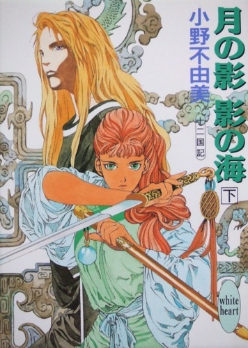
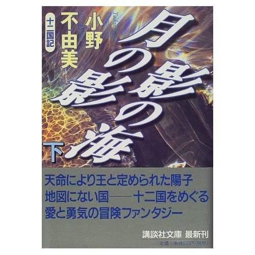

| [小野不由美] 十二国記シリーズ02 | |
| 小野不由美 | |
| (2015) | |
|
十二国記シリーズ 月の影 影の海（下）
小野不由美
|


|
月の影 影の海(下) 十二国記 |
五 章（承前）
１
細い糸を撒いたように雨は降る。
動くこともできず、泣くこともできず、たたぼんやりと水溜まりに頬を浸していると、突然背後でガサガサと下生えをかき分ける音がした。身を隠したほうがいいのだろうとは思ったが、首をあげることさえできなかった。
村人か、獣か、妖魔か。いずれにしても選択肢が増えるだけで、結果が増えるわけではない。捕らわれるにしても襲われるにしても、このままここに倒れているにしても、たどりつく先はひとつなのだ。
霞む目をあげて物音のほうを見ると、そこにいたのは村人でも追っ手でもなかった。そうして人でもない。一頭の奇妙な獣だった。
姿はネズミに似ている。二本の後ろ肢で立ちあがって、髭をそよがせているさまはほんとうにネズミに似ていた。妙な感じがするのは、立ちあがったそのネズミが子供の背丈ほどの大きさもあったからだった。たんなる獣のようにも見えないが、妖魔のようにも見えない。それで陽子はぼんやりとその不思議なネズミを眺めていた。
雨の中で緑の大きな葉を笠のようにかぶっていた。透けるような緑を白く雨足が叩いて、その白い水滴がきれいだと思った。
ネズミはきょとんとしたように陽子のほうを見ているだけで、特に身構えるようすもない。すこしネズミよりもぽってりとしていた。茶色と灰色のあいだの色をした毛皮はふかふかとして、いかにも触ると気持ちよさそうだった。毛並みについた水滴がなにかの飾りのようだ。尻尾まで毛皮におおわれていたので、ネズミに似ているがネズミとは違う生き物なのかもしれない。
ネズミは何度か髭をそよがせて、それから二本足のままほたほたと陽子のほうに近づいてきた。灰茶色の毛並みが屈みこむ。小さな前肢が陽子の肩に触った。
「だいじょうぶか？」
陽子ははげしく瞬いた。子供の声に聞こえたが、聞いてきたのはまちがいなくそのネズミだった。不思議そうな表情をして、ごていねいに首までかしげる。
「どうした？ 動けないのか？」
陽子はじっとネズミの顔を目線だけで見上げて、それから小さくうなずいた。人ではなかったので、すこし警戒をといた。
「そら」
ネズミは小さな、ほんとうに子供ほどしかない前肢をさしだした。
「がんばれ。すぐそこにおいらの家があるから」
ああ、と陽子は嘆息した。
それが助かったことに対する安堵なのか、失望なのかは自分でもわからなかった。
「ん？」
伸ばされた手を取ろうとしたが、指の先が動いただけだった。ネズミの手が伸びる。小さな暖かい前肢が陽子の冷え切った手をにぎった。
思いのほか力のある手に支えられ、小さな家にたどりついてからあとのことを、陽子は覚えていない。
何度か目を覚ましてなにかを見たような気もするが、それがなんだか思い出せるほど、はっきりと風景をつかむことはできなかった。
深い眠りと浅い眠りを交互にくりかえしてようやく目覚めると、陽子は粗末な家のなかにいて、寝台に横になっていた。
ぼんやりと天井を見て、それからあわてて身体をおこす。とっさに寝台を飛び降りて、その場にへたりこんだ。陽子の足はまったく使いものにならなかった。
狭い部屋のなかには誰の姿もない。まだ目眩のする目でそれを確認すると、必死で這って寝台の周囲をあらためた。家具らしい家具はほとんどない。かろうじて枕元に板を組み合わせただけの棚があってその上に、畳んだ布、ひとふりの抜き身の剣と青い珠がきちんと揃えておいてあった。
陽子は力を抜く。なんとか立ちあがって珠を首にかけ、剣と布を取りあげて寝台に戻った。布を巻いて剣を布団のなかに引っぱりこむ。それでやっと安心した。
その段になってようやく、陽子は自分が寝間着に着がえているのに気づいた。
あちこちの怪我もぜんぶ手当てされている。横たわった肩の下に湿ったものがあって、取りあげてみるとそれが水に浸した布だとわかる。置きあがったときに気づかぬまま落としたのだろう。それを額にのせると気持ちよかった。厚い布を重ねた布団を引っぱりあげ、珠をにぎって目を閉じる。安堵の深い息を吐いた。助かってしまうと、こんな貧しい命でも惜しい気がする。
「目が覚めたか？」
飛び起きて声のしたほうをふり返ると、灰茶の毛並みをした大きなネズミが立っていた。ドアを開けて部屋のなかに入ってくる。片手にトレイのようなものを、もう片手には手桶をさげていた。
警戒心が頭をもたげた。人のように暮らし、人のようにしゃべるかぎり、獣のように見えても油断はできない。
その姿を凝視する陽子の前で、監視する視線には気づかないようにネズミはのんきな足どりで歩く。テーブルにトレイをのせて、手桶を寝台の足元においた。
「熱はどうだ？」
小さな前肢が伸びる。とっさに見をすくめて陽子が逃げると、ネズミは髭をそよがせてすぐに寝台の上に落ちた布を拾いあげた。陽子がしっかり胸に抱いた布包みに気がついたはずだが、ネズミはなにも言わなかった。布を手桶に放りこみ、陽子の顔をのぞきこむ。
「気分はどうだ？ なにか食えるか？」
陽子は首を横にふる。ネズミは小さく髭をそよがせてからテーブルの上から湯呑みを取りあげた。
「薬だ。飲めるか？」
陽子は再び首を横にふる。油断してはいけない。それは陽子の生命を危険にさらす。ネズミは首をかしげて、それから湯呑みを自分の口元に運んだ。目の前ですこし飲んでみせる。
「たんなる薬だ。ちょいとにがいが、飲めないようなシロモノじゃねえ。な？」
言ってさしだされた湯呑みを、それでも陽子はうけとらなかった。ネズミは困ったように耳の下の毛並みをかく。
「──まあ、いいか。どんなものなら口に入れられる？飲まず喰わずじゃ身体が持たねえ。お茶なら飲めるか？山羊の乳はどうだ？それとも粥ならたべられるか？」
だまったまま答えない陽子に、ネズミは困ったようにためいきをついてみせた。
「おまえは三日、眠ってた。どうにかする気なら、そのあいだにしてらぁ。その」
ネズミは陽子が抱いた布の包みに鼻先を向ける。
「剣だって隠してるぞ。そういうことで、おいらをちょっとだけ信用しねえか？」
真っ黒な瞳に見つめられて、陽子はようよう抱きしめた剣をはなす。膝の上においた。
「うん」
ネズミは満足そうな声で言って、手を伸ばす。今度は陽子も逃げなかった。小さな手先が額に触って、すぐに離れる。
「まだすこし熱があるけど、だいぶさがったな。落ちついて寝てろ。それともなにかほしい物があるか？」
陽子は迷って口を開く。
「......水」
「水な。──よかった、ちゃんとしゃべれんじゃねえか。すぐに湯冷ましを持ってくるから、起きてるんなら布団をかぶってんだぞ」
陽子のうなずくのも見ずに、ネズミはいそいそと部屋を出ていく。短い毛並みにおおわれた尻尾がバランスをとるように揺れていた。
すぐにネズミは水差しと湯呑みと、小さな器を持って戻ってきた。
すこし熱めの湯冷ましがおいしかった。湯呑みに何度かおかわりをもらって、それから陽子は器の中をのぞきこむ。ぷんとアルコールの匂いがした」
「......これ、なに？」
「酒に漬けた桃を砂糖で煮たのだ。それなら食えるだろ？」
陽子はうなずき、それからネズミを見返す。
「......ありがとう」
ネズミは髭を高くそよがせる。頬の毛並みがふっくりと盛りあがり、目がすこし細まって笑った表情に見えた。
「おいらはラクシュンってもんだ。おまえは？」
陽子は迷い、それから名前だけを告げる。
「陽子」
「ヨウコかぁ。どういう字を書くんだ？」
「陽気の陽、子供の子」
「子供の子？」
ラクシュンは不思議そうに首をかたむけてから、へえぇ、とつぶやいた。
「変わった名前だなぁ。どっから来たんだ？」
答えないのはまずい気がして、陽子は迷い迷いしながら答える。
「慶国」
「慶国？ 慶国のどこだ？」
それ以上は知らなかったので適当に答えた。
「配浪」
「そりゃ、どこだ？」
ラクシュンはすこしだけ困惑したように陽子を見て、それから耳の下をかいた。
「まあ、そんなことはどうでもいいか。とりあえず寝ろ。薬、飲めるか？」
今度は陽子はうなずいた。
「ラクシュンはどういう字？」
ネズミはもう一度笑った。
「苦楽の楽に、俊敏の俊」
２
その部屋で一日を寝てすごして、この家には楽俊しかいないようだと陽子は推測をつけた。
「尻尾がありゃあ、それでいいのかい。え？」
深夜、寝台の足元に蒼い猿の首がある。
「どうせ裏切るに決まっているサァ。違うかい？」
この部屋には寝台が二つあるが、楽俊はここで寝ない。ほかに寝室があるとも思えないが、どこでどうやって寝ているのか、陽子にはわからない。
「出ていったほうがよくはねえかい？ でなければ、一思いに息の根を止めるんだよ、ナァ？」
陽子は返答しない。黙って聞いていれば、蒼猿は同じことを何度もくりかえした。
これは陽子の不安だ。それを言いあばくためにこの猿は来る。ふくらんだ不安を食らうために。──きっとそうなのだろうと思う。
するすると布団の上をすべって蒼猿が枕元までやってくる。小さな首が横臥している陽子の顔をのぞきこむようにした。
「悪いことがおこる前に先手を打つんだ。そうしないと生き残れねえ。わかってるだろう？」
陽子は寝返りをうって天井を見あげる。
「......楽俊を信用してるわけじゃない」
「ヘェ？」
「この状態じゃ、動けないからしかたない。せめて剣をにぎれるようになってから出ないと、出て行ってもみすみすバケモノの餌食になるだけだ」
流石に右手の傷が深い。一日珠を当てていても、まだ握力が戻らない。
「奴はおまえが海客だと気がついているかもしれねえぜ？そうのんきにかまえてていいのかい。いまにも役人が踏み込んでくるかもなァ？」
「だったら剣にものを言わせるだけだ。役人の四、五人ていどが踏み込んできたって、きりぬけられる。それまでは利用させてもらう」
──ここには陽子の味方などいない。
だが、いまは切実に助けが必要だった。せめて剣をにぎれるようになるまで。もうすこし体力が戻るまで。それまでは、安全な寝床と、食べ物と、薬が必要なのだ。
楽俊が敵なのか敵でないのかわからないが、少なくともネズミは陽子に必要なものを提供してくれる。敵であることがはっきりするまでこの状態を利用する。
「飯に毒は入ってないか？ 薬はほんとうに薬なのかヨォ」
「用心はしてる」
「裏をかかれねえと言い切れるのかい」
蒼猿は陽子の不安を言いあばいていく。それにいちいち答えていくのは、自分になにかを言いきかせる作業に似ていた。
「積極的にわたしになにかをする気があるのなら、意識のないあいだになんでもできた。いま食事の中に毒なんか入れなくても、殺すチャンスはいくらでもあった」
「なにかを待ってるのかもなァ？ 援軍かなにかをサァ」
「だったら、それまでにすこしでも体力をたくわえておく」
「とりあえず信用させて、それから裏切る肚かもなァ」
「だったら、楽俊の意図が見えるまで信用したふりをしておく」
猿はいきなりきゃらきゃらと笑った。
「性根が座ってきたじゃねえか、え？」
「......さとった」
この世界に陽子の味方はいないのだということ。行く場所も、帰る場所もないのだということ。自分がいかに独りかということ。
それでも生きのびなければいけない。味方も、生きる場所もない命だからこそ、心底惜しい。この世界のすべてが陽子の死をねがうなら、生きのびてみせる。もといた世界のすべてが陽子の帰還をのぞまないなら、帰ってみせる。
あきらめたくない。どうしてもあきらめられない。
生きのびて、ケイキを探し、必ずあちらに帰る。ケイキが敵でも味方でも関係ない。敵だというなら脅してでも、もといた世界に帰してもらう。
「帰ってどうする」
「それは、帰ってから考える」
「ひとおもいに死んだほうがよくはねえかい」
「誰も惜しまない命だから、自分だけでも惜しんでやることにしたんだ」
「──あのネズミは裏切るぜ」
陽子は猿を見返した。
「わたしは楽俊を信じてないから、裏切りようがない」
もっと早く気づけばよかったのだ。陽子は海客だ。だから狩られる。海客には味方などいない。この世界のどこにも居場所などない。それさえちゃんとわかっていたら、達姐にも松山にも、うかうかとだまされたりしなかった。おめでたくも信用して裏切られることなどなかったのだ。信用したふりで相手を利用し、生きのびる方策を立てることができたはずなのに。
利用できるものは利用する。それのどこが悪い。達姐も松山も陽子を利用して小金を稼ごうとした。だったら、陽子が楽俊を利用して命をつなぐことに、なにをはばかることがあるだろう。
「りっぱな悪党になれそうだなァ。エェ？」
「それも、いいかもしれない」
つぶやいて、陽子は手をふる。
「眠い。──帰れ」
猿は奇妙な顔をする。なにか苦いものをこらえているような表情だった。そのまま後ろ頭を見せて、ふいと布団の下に沈みこむようにして姿を消した。
それを見守ってから、陽子は薄く笑う。
あれは陽子の、自分でも感じていなかったような不安まで言いあばいてくれるから、自分の気持ちを整理するのに役立つ。──利用できる。
「たしかに、りっぱな悪党になれそうだ......」
軽い自嘲の笑みがもれる。
それでも、二度と他人に利用されるのだけはごめんだ。二度と誰にも自分に危害はくわえさせない。かならず、自分を守ってみせる。
「だから、あれでよかったんだ」
山道で出会った親子。陽子が親子に裏切られることがなかったのは、親子に裏切る隙を与えなかったからにほかならない。
──そしてその隙を、楽俊にも与えないことだ。
そうすれば生きのびることができる。
どうして陽子はこんな世界に来なければならなかったのか。なぜケイキは陽子を主と呼んだのか。敵とはどういう敵か。敵の目的はなんで、なぜ陽子を狙うのか。あの女は──ケイキと同じ金の髪の、あの女はなにもので、なぜ陽子を襲ったのか。
──妖魔は特定の誰かを狙ったりしない。
だったらなぜ、陽子が襲われたのか。黒い犬の死骸をあの女は抱いた。死を悼んでいるように見えた。だとしたら、あれはあの女の仲間だったのか。ケイキのまわりに妖魔がいたように、あの女のまわりにも妖魔がいて、それに陽子を襲わせたということだろうか。しかしながら、あの女もまた誰かに陽子を襲うよう命じられているようではなかったか。では、命じたのは誰だろう。ケイキもまた、誰かに命じられて陽子にかかわったのだろうか。
わかることがなにひとつない。わからないままではいられない。だから、かならず誰かに答えてもらう。
無意識のうちに拳をにぎると、のびた爪がてのひらにくいこんだ。
陽子は手をあげて自分の指先をしみじみと見る。
折れて欠けた爪は鋭利な形をしている。魔物の爪のようだった。
──虚海を渡れるのは妖魔か神仙だけ。
陽子は神でも仙人でもない。
──では妖魔か。
虚海の岸で赤い獣に変化していく夢を見た。あれはほんとうに夢だったのだろうか？
こちらに来る前、陽子は長いあいだ妖魔に襲われる夢を見ていた。そうして、その夢は現実になった。──だとしたら。
獣になる夢もまた、予知でないといいきれるのだろうか？
赤く変化した髪も、蒼く変化した目も、ぜんぶ獣に変化していく一段階だとしたら？陽子は実は人間ではなく、妖魔だったのだとしたら。
それはひどく恐ろしいことに思え、同時にひどく愉しいことに思えた。
怒鳴ること、叫ぶこと、剣をふるい、他を威圧すること。そこには奇妙な高揚感がひそんでいる。陽子は生まれた世界で、声をあらげることもなく、他をにらむこともなく生きてきたし、それをなにかの罪悪のように思ってきた。それは本当は、自分でもわかっていたからではなかったろうか？
陽子自身の無意識が、陽子は妖魔であり、猛々しい獣であることを知っていて、それではあの世界で生きていけないことをわかっていて、無害な生き物のふりをしようとした結果ではなかったか。
だからこそ、誰もが陽子を「得体が知れない」と言ったのかもしれない。
──そんなことを考えながら、眠りに落ちた。
３
家は田園地帯にありがちの、ごく小さな貧しい建物だった。こちらの住居はだいたい貧しいたたずまいをしているが、そのなかにあってもこの家が侘しい部類に入ることが陽子にもわかる。
田圃のなかにある家はふつう何軒かの家と集落を作っているものだが、この家は珍しく一軒家のようだった。山の斜面にある家の近くにはほかの家は見えない。
ネズミの家だといえば小さな家を想像しそうだが、規模こそ小さいがサイズはごく普通の建物だった。建物だけでなく、家具から日用品から、ぜんぶが人間のサイズにあっているのが不思議な気が、陽子にはする。
「楽俊、ご両親は？」
ようやく起きて動くことができるようになって、陽子は楽俊を手伝って竈の大きな鉄鍋に水を注しながらきいてみた。桶をささえる右手にはまだ包帯を巻いているけれども、その下の傷はすでにほとんどふさがっている。
竈に薪を放りこんでいた楽俊は陽子をふりあおいだ。
「父ちゃんはいねえ。母ちゃんは出かけてる」
「旅行？ ずいぶん長いね。遠く？」
「いんや。近くの里まで。ちっと仕事があってな。一昨日には帰ってくるはずだったんだが、帰ってこねえとこを見るとこきつかわれてるんだろ」
では、母親がすぐにも帰ってくるかもしれない、と陽子は心のなかにきざんでおく。
「お母さんの仕事は？」
「冬のあいだは女中だな。普段は小作農。夏でも呼ばれりゃ、雑用をしにいく」
「そう......」
「陽子はどっかに行く途中だったのか？」
問われて陽子は少し考える。どこかに行こうとしたわけではない。ただ歩いていたのだとは言えなかった。
「......ケイキという人を知らない？」
楽俊は毛並みについた木屑を払った。
「人探しか？ そいつは、この辺の人間か？」
「どこの人だかはわからない」
「気の毒だが、おいらにゃケイキなんて知り合いはいねえな」
「そう。──ほかにすることは？」
「ない。病みあがりなんだから、座ってな」
言われるまま、陽子はだるい身体を椅子にあずけた。
小さなダイニング・キッチンの床はむき出しの土で、置かれたテーブルも椅子も、ぎしぎしいうような古い品物だった。
陽子が座った隣の椅子には布でくるんだ剣がおいてある。片時も離そうとしない陽子を、楽俊は別段とがめなかった。それがどういう思考によるものかはわからない。
「陽子はどうして」
楽俊はつややかな毛並みの背中を見せたまま子供の声で聞いてきた。
「男のナリをしているんだ？」
寝間着に着がえていたので、バレているだろうとは思ってはいた。
「......ひとり旅は危険だから」
「そうか。そうだなぁ」
言って土瓶を持ってくる。なにかを煎じたらしい芳香が狭い部屋にたゆたった。湯呑みをふたつ、テーブルの上に出してネズミは陽子を見あげた。
「どうしてその剣には鞘がねえんだ？」
「......なくした」
答えながら鞘をなくしたことをいまさらながら思い出した。虚海を渡るときに剣と鞘とを離してはいけないといわれたが、鞘をなくしたことが原因でなにかの災難が降りかかってくる気配はない。やはりあれは、珠をなくしてはいけないという、そういう意味だったのだろう。
ふうん、とつぶやいて楽俊は椅子によじ登る。その動作は幼い子供に酷似している。
「どっかで鞘をあつらえてやらねえと、せっかくの剣が傷むぜ」
「......うん。そうだな」
気のない声で答える陽子を、楽俊は真っ黒な目で見あげた。ちょっと小首をかしげる。
「陽子は配浪から来たって言ってたよな」
「......そう」
「それは慶国じゃなく、槙県の東のほうにある村のことじゃねえのか？」
そういえば、そんな場所だったかと、陽子はぼんやり思いながらだまっている。
「あのあたりで大きな蝕があったんだってな」
これにも陽子はだまっていた。
「海客が打ちあげられて、逃げたとか」
陽子は楽俊をにらむ。無意識のうちに手が伸びて剣をつかんでいた。
「なんの、話」
「十六、七の女で、紅い髪をしてる。剣を持ってるんで注意が必要。剣には鞘がない。......陽子は髪を染めてるだろ」
柄をにぎって、視線をただ楽俊に注ぐ。ネズミの表情は読みとれない。そもそも人間よりは数段とぼしい。
「役所からそう連絡がきた」
「......それで」
「そんな怖い顔すんなって。突き出すつもりなら、役所の人間が来たときに突き出してらぁ。大枚の賞金もついてたことだしな」
陽子は布をほどく。立ちあがって抜き身の剣を晒した。
「なにが目的」
ネズミはただ真っ黒な目で陽子を見あげて、絹糸のような髭をそよがせる。
「短気な奴だなぁ」
「わたしを匿った目的はなに」
ネズミはのほほんとしたしぐさで耳の下をかいた。
「目的、って言われてもなぁ。行き倒れになりそうな奴をほっとけねえだろ。だからめんどうみたし、めんどうをみた以上、やっぱ役所に突き出す気にはなれねえじゃねえか」
そんな言葉をうのみにはしない。たやすく人を信用すれば必ず後悔するとわかっている。
「海客は役所に送られる。そこで待ってるのは良くて軟禁だし、悪けれりゃ首を刎ねられる。どっちかってぇと、陽子は後者だろうな」
「なぜ、そう思う」
「変な術をつかうんだろう？ 護送されるところを妖魔に襲わせて、そんで逃げたって話じゃねえか」
「あれはわたしがやらせたわけじゃない」
「だろうな」
ねずみはあっさりうなずいた。
「妖魔がそうそう簡単に人に従うかい。陽子が呼んだんじゃなくて、陽子を狙ってきたんだろう。ちがうかい」
「......わたしには、わからない」
「それにしても陽子はやっぱり悪い海客だろうな。妖魔に狙われるような人間だからな」
「......それで」
「県庁に送られれば十中八九命がねえ。逃げるのは当然だが、どこへ逃げればいいのかわかってるのか？」
陽子は答えなかった。
「わかってねえんだろう。こんなところわうろついているようじゃな。──エンコクに行きな」
陽子はまじまじと楽俊の顔を見返した。ネズミの顔にはなんの表情もない。少なくとも陽子には読みとることができなかった。
「......どうして」
「人が殺されるのを見過しにできるかい」
言って楽俊は笑った。
「死刑が当然の悪党に同情するほどおいらだっておひとよしじゃねえ。だが、海客だってだけで殺されちゃあ、たまらんだろ」
「悪い海客なんでしょう」
「役人はそう考えるだろうって話だ。海客に良いも悪いもあるもんかい。珍しいものは気味が悪いような気がするだけだろ」
「悪い海客は国を滅ぼすって」
「迷信だ」
あっさりと言った口調にかえって警戒心がわいた。同じように迷信だといった人がこの国にいた。それは人間の女だったけれども。
「それで？ そのエンコクとやらに行けば、助かるわけ」
「助かるさ。エンコクの王は海客を疎まない。あそこじゃ海客もほかの人間と同じように生活してる。海客に良いも悪いもない証拠だろ。だから、エンコクに行くのがいいと思う。──その物騒なもんをしまいな」
陽子は、ためらい、ためらい、とりあえず剣をおろした。
「座んなよ。茶が冷めるぜ」
言われてようやく陽子は椅子に座る。楽俊の意図がわからない。海客であることがばれた以上、早々にここを出ていったほうがいいのだろうが、せめてエンコクについて詳しい情報がほしい。
「このあたりの地理がわかるかい」
陽子は首を横にふった。楽俊はうなずき、湯呑みを抱えて椅子を降りる。剣をにぎったままの陽子の足元まできて、土間に屈みこんだ。
「ここは安陽県、鹿北ってところだ」
楽俊は簡単な地図を土の上に描いていく。
「ここが虚海、槙県はここ。配浪ってのはこのあたりらしいから、陽子は南西、つまり巧国の中央へ向かって歩いてきた案配になる。逃げるんなら巧国を出なきゃならないのに、これじゃ逆だ」
陽子は地図を複雑な気分で見おろした。これを信じていいのか。地図のどこかに嘘がないか。疑いながらも、くいいるように見つめる。これが今もっともほしい情報だった。
「西隣が北梁県、これをまっすぐ西に向かうと青海てぇ内海に出る。青海を渡った対岸が雁国だ」
楽俊の小さな指が略図と、驚くほど達者な文字を書いていった。
「まず、北梁を目指せばいいんだな......」
「そうだ。最終的に阿岸てぇ港につけばいい。阿岸からは雁国へ船が出てる」
「......船」
船が使えるだろうか。港を監視されていたら、みすみす網のなかに飛びこむようなものだ。
「だいじょうぶだ」
陽子の独白を見透かしたように楽俊は笑う。
「槙県から巧国の外に出るには、まっすぐ北に行って山越えして慶国へ出るのがいちばん早い。役所の連中もまさかこんなところへは来ないだろうが、と言ってたしな。道を間違ったのが幸いしたんだ。手配書がまわっているが、赤毛の若い女、とある。そのめだつ剣さえなんとかすりゃあ、そうそうばれやしねえだろうよ」
「......そう」
陽子は立ちあがった。
「ありがとう」
楽俊はキョトンと陽子を見あげる。
「おい。まさか今から出かける気かい」
「急ぎたいから。世話になってばかりで悪いけど」
楽俊もまた立ちあがる。
「待ちな。よくよく気の短い奴だなぁ」
「でも」
「雁国に言ってそれから、どうする。手当たりしだいに人を捕まえて、ケイキって奴を尋ねて歩くのかい。船の乗り方はわかるのか、雁国に保護を求める方法はわかるのか？」
陽子は視線をそらす。目的地が定まっただけでもこれまでの旅に比べれば格段に先行きがひらけたような気がしていたのに、それでもなお乗り越えなければならない困難がこんなにある。そうしてこれはおそらく、実際に直面する困難の何十分の一にも満たないのにちがいない。
「なにごとにも準備ってもんがあらぁ。そう焦るな。ここで焦ったところで、後になって行き詰まる。な？」
陽子は頭を下げた。心のどこかで罠を恐れる自分がいるが、とりあえずここでは楽俊を頼りにするしかないのだ。
「そんじゃ、飯にするか。とにかく体力をつけろよ。阿岸まではひと月はかかるんだからな」
陽子はもう一度頭を下げた。
少なくとも、体力が完全に戻るまで。それまでには楽俊の意図も分かるだろう。単におめでたいのか、それとも深い策略があってのことか。雁国に──阿岸に、行かねばならない。それを知られている以上、楽俊の真意だけは見届けないわけにいかないのだ。
４
「ずいぶん大きな蝕だったんだって？」
楽俊は昼食のあとかたづけをしながら言った。
「......配浪の長老はそう言ってた」
「槙の東一帯は、今年の麦が全滅だとさ。かわいそうな話だ」
陽子はただうつむく。胸のどこかがわずかに痛んだ。
「陽子がしょげることはねえ。別に陽子のせいってわけじゃねえんだから」
「しょげてるわけじゃない」
竈の灰を掻き出しながら言った陽子の手をかるく叩いたのは、短い毛並みにおおわれた尻尾だった。
「海客が来るから蝕が起こるわけじゃねえ。蝕が起こるから海客が来るんだ」
陽子は楽俊に言われたとおりに木箱のなかに灰を落としこむ。燃え残った木屑を拾いあげてべつの箱に入れた。
「聞いてもいいかな」
「なんだ？」
「蝕って、なに？」
嵐のようなものだと配浪の長老に聞いたが、実際にどういうものだかはよくわからない。
「ああ、蝕もわからねえか。あっちには蝕がねえんだな」
「日蝕、とか月蝕ならあるけど」
「似たようなもんだ。べつに太陽が欠けたり月が欠けたりはしねぇけどな。そうだな、嵐みたいなもんかな。嵐は空気が乱れるが、蝕は気が乱れる」
「雨が降って、風が吹いて？」
「そういうこともある。たんに嵐のように大風が吹く蝕もあるが、そういう蝕はたいしたことがないな。地震があったり雷が鳴ったり川が逆流したり、いきなり地面が沈んだりする。いろんな天変地異がいっしょくたにくると思えばまちがいないかな。配浪じゃヨウチって湖の底が盛りあがってあふれたとよ。もう湖は跡形もねえそうだ」
陽子は灰を落とすために洗っていた手を止めた。
「そんなに厳しい災害なの？」
「ものよるけどな。おいらたちは嵐よりは蝕が怖い。蝕はなにがおこるかわからなねえから」
「どうしてそんなことが」
楽俊は真剣な顔で、大仕事をする手つきでもってお茶を入れている。
「蝕ってのは、あっちとこっちが重なって混じっちまうことを言うんだそうだ。本来なら別々のものが重なるから、災害になる。よくはわからねえけど、そういうことなんだと思うぜ」
「あっちとこっち......」
この家で出されるお茶は緑茶のような色をしている。それでもぜんぜん匂いがちがう。味は口あたりのいいハーブティーに似ている。
「あっちというのは、虚海の向こうのことだな。こっちは、こっちだ。名前なんかねぇ」
陽子はうなずいた。
「虚海は陸を取り巻いている。虚海の先にはなにもない」
「なにも？」
「そう、なにも。行けども行けどもえんえんと虚海が続いていて、果てがない。少なくともそう言われているな。物好きな奴が果てを見てこようってんで船を出したこともあったらしいが、帰ってきた奴はいないそうだ」
「じゃ、こちらは大地が平らなんだ」
楽俊は椅子によじ登りながらきょとんと陽子を見た。
「地面が平じゃなかったら、みんな困るじゃないか」
あきれたような声がすこし笑えた。
「......こちらの世界はどういう形をしているんだろう」
楽俊は、テーブルの上にあった胡桃を手に取って置いた。
「世界のまんなかにスウサンがある」
「スウサン？」
「崇高な山、と書くな。ほんとうに崇高と呼ぶこともある。中岳とも中山ともいう。その四方には東西南北の山がある。東岳、とか東山とかいうが、東西南北をそれぞれ蓬山、華山、霍山、恒山と呼ぶのが普通だ。東岳は昔は泰山といった。北の国、戴国の王が号を代から泰にあらためたので泰王をはばかって蓬山と呼ぶようになったと聞いてるな。この五つの山が五山だ」
「へぇ......」
「この五山の周囲に黄海がある。海といっても、水のある海じゃねえ。荒れた岩山と砂漠、沼地と樹海だって話だ」
楽俊の指が描いていく文字を陽子は見守る。
「見たことはない？」
「あるわけがねえ。黄海の周囲をさらに東西南北の四金剛山が取り巻いている。金剛山の内側は、人の住む世界でねえ」
「そう......」
まるでなにかで見た古い地図のような地形だ、と陽子は思った。
「金剛山の周囲の四方に四つの内海があって、さらに八方を八つの国が取り巻いてる。その周囲が虚海だ。陸にうんと近いところに四つ大きな島がある。この四つの国と金剛山の周囲の八つの国で、ぜんぶで十二国」
陽子は幾何学的に配置された胡桃を見つめた。それは花のようにも見える。五山を中心に、花びらのように配置された国々。
「それ以外はない？」
「ないな。その外は虚海だけだ。ずーっと世界の果てまでなにもない海が広がっている」
ただ、と楽俊はつぶやいた。
「虚海の東の果てには不思議な島があるという話もある。まぁ、一種の伝説だ。それを蓬莱国という。別名を日本ともいうな」
言って楽俊が書いたのは「倭」という文字だった。
「倭？ 日本？」
実際に文字を書いてみせると「倭」のほうを示す。
陽子はすこし唇をかんだ。こんなふうにして、今まで翻訳されてきたわけか。
「海客は倭から来るという話だ」
今度はきちんと「倭」と聞こえた。陽子が言葉を知ってしまったので翻訳の必要がないということなのだろう。
「ほんとうかうそかは知らねえけど、海客の話を聞いてみると、どこからに倭という国があるのはたしからしい。倭を捜して船を出した奴もいるが、やっぱり帰ってこなかったそうだ」
もしもほんとうに日本が虚海のかなたにあるものならば、船を東に漕ぎ出せば帰れる可能性がある。しかし、そんな手段では帰れるはずのないことを、月影を通ってやってきた陽子は知っていた。
「反対に、金剛山のどこかに崑崙という丘があるという言い伝えもある。そこは中国という。中国からは山客がやってくる。
言いながら、楽俊は「漢」という文字を書く。
「山客？ じゃあ、海客のほかにもこちらに混じりこんでしまう人間がいるんだ」
「いるな。海客は虚海の岸にたどりつき、山客は金剛山の麓にたどりつく。この国じゃ山客は多くねえが、どっちにしても追われるはめになるな」
「そうか......」
「漢も倭も、普通は人は行き来できねえ。それができるのは妖族と神仙だけだといわれてる。ただ、蝕がおこって、あっちから人が流されてくることがある。それが山客と海客」
「ふうん......」
「漢や倭じゃ、家は金銀玉でできている。国は豊かで農民でも王侯のような暮らしをするそうだ。人はみんな宙を駆けて一日に千里でも走る。赤ん坊でも妖魔を倒す不思議な力を持つそうだ。妖魔や神仙が神通力を持つのも、あちらへ行って深山の泉を飲むからだとさ」
言って楽俊は陽子を見る。陽子は苦笑しながら首を横にふった。
奇妙な話だ、と陽子は思う。もといた世界に帰って人に話せばおとぎ話と言われるだろう。この世界にもおとぎ話がある。
思って陽子はかすかに笑った。
この異常な世界、とずっとそう思ってきたが、はたして異常なのは世界だろうか、陽子だろうか。
答えならわかっている。だから海客は追われるのだと、そんなことをようやく思った。
５
「......巧国に流れついた海客はみんな死ぬことになるね。蝕と海客が切り離せないなら」
しばらくぼんやりと過去に幾多いただろう海客の運命について考えて、陽子は口を開いた。
「そういうことになるなぁ。......陽子は、仕事はなんだ？」
「学生」
そうか、と楽俊は何やら感慨深そうにする。
「海客のなかには、こっちじゃ知られてない技術を持っていたり、知識を持っていたりする奴がいる。そういう人間はえらい人の保護を受けて生活できるんだがなぁ」
なるほど、と陽子は自嘲の笑いを漏らす。陽子にはこの世界になにかをもたらせるほどの知識はない。
「......倭へ帰る方法を知らない？」
陽子が聞くと、楽俊は明らかに難しい顔をした。
「おいらは知らねえ。......これは言わねえほうがいいのかもしれねえけど」
言い淀んでから、
「多分、そんな方法はねえと思う」
「そんなはずない。来れたものなら、帰る方法だってきっとあるはず」
陽子の声に楽俊は髭を垂れる。きゅうぅ、と喉を鳴らした。
「人は虚海を渡れねえんだよ、陽子」
「実際に渡ってきた。だからわたしはここにいる」
「来ることはできても、行くことはできない。実際、海客にしても山客にしても、帰った話はついぞ聞かねえ」
「そんなはず......ない」
帰れない、という言葉はどうあっても受け入れることができなかった。
「蝕は？ 蝕を待てばいいんじゃない？ そうすれば、帰れる」
勢いこんだ陽子の言葉に、楽俊はしおしおと首をふる。
「いつ、どこで蝕がおこるかは、誰にもわからない。いや、わかる蝕もあるが、人はあちらに行くことができねえ」
そんなはずはない、と陽子はもう一度心の中でくりかえした。帰れないのならば、ケイキがそう言ったはずだ。彼はなにも言わなかった。彼の態度のどこからも、二度と帰れないのだとは感じられなかった。
「わたしは倭から蠱雕に追われて逃げてきた......」
「蠱雕？ 逃げてって、こっちへか？」
「そう。ケイキという人が」
「陽子が探してる奴か？」
「そう。そのケイキが、わたしをこちらへ連れてきたんだ。正確に言うと、蠱雕たちがわたしを狙っているから、身を守るためにはこちらへ来る必要があるといって」
陽子は言って、楽俊を見る。
「ということは、身を守る必要がなくなったら戻れる、ってことなんじゃないの？わたしがどうしても家に帰りたいのなら、ちゃんと送るって言った」
「バカな」
「ケイキは宙を飛べる獣をつれてた。楽俊みたいに話す獣。まっすぐに飛べば片道に一日、と言ってた。片道、ってことは帰りのことを考えた台詞だと思う。少なくとも二度と帰れない旅につかう言葉じゃない。......ちがう？」
陽子が訴えるようにそう言っても、楽俊はしばらく口を開かなかった。
「──楽俊？」
「おいらにはよくわからねえ。......でもおおごとがおこってるのはたしかみてえだな」
「......そんなに、たいそうなこと？ わたしが言ったことは」
「たいそうなことだな。蠱雕なんて妖魔が出たらこっちじゃ大騒ぎだ。近くの里が空になることだってある。しかもその蠱雕は特定の誰かを狙っていたという。わざわざあちらへ、だ。そんな話ははじめて聞いた。──そうしてケイキとかいう人間がおまえをこちらへ連れてきたとか」
「うん」
「妖族も、たとえ神仙にしても、行き来できるのは自分の身体ひとつだと、おいらは聞いてる。ケイキというのが何者にしても、他人を連れて行き来した、なんて話は聞いたことがねえ。なにがおこったのか、おいらにゃとうていわからねえが、それが尋常のことでねえのだけはわかる」
楽俊は思い悩むように考えこんでから、真っ黒な目を陽子に向けた。
「それでおまえ、どうしたい？ 何より身を守りたいか、それともまず帰りたいか」
「......帰りたい」
陽子が言うと、楽俊はうなずく。
「そうだろうな。だが、おいらじゃその方策がわからねえ。これはどうあっても雁国へいったがいい」
「うん。それから？」
「役人や州侯の手に負えることとも思えねえ。雁国へ行って、延王の力を借りるしかねえと思う」
陽子はぽかんと楽俊が書いた文字を見つめた。
「延王......。王様？」
楽俊はうなずいた。
「雁国の王は代々延というんだ」
「でも、王様が力を貸してくれるの」
「わからねえ」
そんな、と陽子は声をあげそうになったが、かろうじて耐えた。
「わからねえが、このまま巧国にいるよりはましだ。巧国の主上に助力をお願いするよりも、まだ希望がある。延王はタイカだからな」
「タイカ？」
「胎、果。あちらの生まれのお方だよ。そういうことがごくたまにある。ほんとうはこちらの人間なのに、まちがってあっちに生まれることがな」
陽子は目を見開いた。
「そんなことが？」
「ああ。ほんとうにたまのことだ。といっても、まちがってあちらに生まれることじたいがたまなのか、こちらに戻ってくることがたまなのかは、はっきりしねえけどな」
「......ふうん」
「こちらには三方有名な胎果がいる。雁国延王、延宰輔、戴国泰宰輔」
「宰輔」
「王の補佐をする相談役みたいなもんだな。このうち泰宰輔は亡くなったという話だ。泰王は行方知れず、国も乱れてとうてい近づけねえ。やはり雁国を訪ねるべきだろう」
陽子はすこし呆然としていた。たくさんの知識を急速に詰めこまれたせいでもあり、あまりに急激に先の見通しがたったせいかもしれない。
王を訪ねるというのは、首相や大統領を訪ねるに匹敵することだろう。そんなことが可能なのか、という思いと同時に、そんなたいそうなことに巻きこまれているのかというとまどいがある。そう考え込んだとき、表から足音が聞こえた。
６
表に出る板戸を開けて姿を見せたのは、中年の女だった。
「楽俊」
呼ばれてネズミは顔をあげる。
「母ちゃん」
髭をさわさわさとそよがせた。
「妙なお客を拾っちまったぞ」
陽子はきょとんとせざるをえなかった。帰ってきた女はまちがいなく人間に見える。彼女もまた驚いたように楽俊と陽子を見くらべた。
「お客って、おまえ、この娘さん、どうしたんだい」
「林で拾った。こないだの槙県の蝕で、あっちから流されてきたんだと」
まあ、とつぶやいて、女は楽俊の顔を見る。堅い表情が顔をかすめた。
陽子は身構える。この女も槙県で逃げだした海客の噂を聞いているだろうか。だとしたら、はたして楽俊のように陽子を匿ってくれるだろうか。
「......そりゃ、たいへんだったろうねえ」
息を詰めて見守る陽子に向かって女は笑った。そうして楽俊をふり返る。
「なんだい、おまえ。だったら呼び戻してくれればよかったのに。娘さんの世話がおまえにちゃんとできたのかい」
「ちゃんとできたさ」
「どうだかねえ」
笑ってから、女は笑いを含んだままの目で陽子を見やった。
「......ごめんなさいよ。あたしは用で出てたものだから。楽俊はちゃんとあなたの面倒を見れたのかしら」
「あ、......はい」
陽子はうなずく。
「熱を出して身動きができなかったところを、助けていただきました。ありがとうございます」
あら、と女は目を丸くした。陽子のそばに駆け寄ってくる。
「もうだいじょうぶなのかい、起きて？」
「はい。ほんとうにお世話になりました」
答えながら、陽子は油断なく女の表情を探る。
楽俊はまだいい。獣だから。女は信用できない。信用するのが怖い。
「そんなことならなおさら、母さんを呼べばよかったのに。気がきかないねえ」
女に言われて楽俊は不満そうに鼻先をあげた。
「ちゃんと面倒見たさ。具合もすっかりよくなったし」
女は陽子の顔をのぞきこむ。
「よかったこと。......起きていてもつらくない？まだ寝ていたほうがよくはないかい？」
「もう、だいじょうぶです」
「そう。ああ、こんな薄着で。──楽俊、着物を出しておあげよ」
あわてたように楽俊が隣の部屋に駆けこんだ。
「お茶もすっかりさめてるじゃないか。ちょいとお待ちね。今、いれなおしてあげようね」
玄関の戸をしっかりと内側から戸締りして、バタバタと裏口から井戸端へ消える女を陽子は見送る。薄い上着のような着物を抱えて戻ってきた楽俊にそっと声をかけた。
「お母さん？」
「そうだ。父ちゃんはいない。うんと前に死んだからな」
楽俊の父親というのは、人間だったんだろうか？ネズミだったんだろうか？
「ほんとうのお母さん？」
おそるおそる聞いてみると、楽俊は不思議そうにする。
「もちろん、ほんとうの母ちゃんだ。母ちゃんがおいらをもいだんだからな」
「もいだ？」
楽俊はうなずく。
「リボク──里の木──から、もいだんだ。おいらの入った木の実を」
そこまで言って楽俊は、はたと気がついたように、
「あっちじゃ子供は母親の腹になるってほんとうか？」
「......うん。普通、そうだね」
「腹に木の実ができるのか？ そうしたらどうやってもぐんだ？腹の外にぶら下がってるのか？」
「もぐ、っていうのがよくわからない」
「木になったランカを取るんだ」
「ランカ？」
「卵の果実。このくらいの」
楽俊はひとかかえほどの大きさを示した。
「黄色い実で、なかに子供が入ってる。それが里木の枝になって、親が行ってもぐんだ。あっちじゃ卵果はならないのか？」
陽子はかるく額を押さえた。これはおそろしく常識が違う。
「ちょっとちがうみたい......」
楽俊は問いかけるように陽子を見る。陽子は苦笑した。
「あっちじゃ子供は母親のお腹のなかにできる。母親が産むんだ」
楽俊は目を丸くした。
「鶏みたいに？」
「ちょっとちがうけど、そういうカンジかな」
「どうしてできるんだ？ 腹のなかに枝があるのか？腹のなかにある実をどうやってもぐんだ？」
「うーん......」
陽子がさらに頭を抱えたところで、母親が戻ってきた。
「さあさ。お茶をいれようね。お腹はすいてないかい？」
楽俊の母親は息子から陽子の事情を聞きながら、手早く蒸しパンに似たお菓子を作ってくれた。
「それでな」
と楽俊は小さな手に大きな蒸しパンの塊をかかえて言う。
「雁国に行ってみるのがいいんじゃねえか、って話をしていたところなんだ」
母親はうなずく。
「そうだね。それがいいだろうね」
「そういうわけで、おいらは陽子をカンキュウまで送ってくる。着るものを持たせてやってくんな」
楽俊が言うと、母親は目に見えて強ばった顔をした。
「そんな、......おまえ」
「心配するこたねえよ。ちょっとひとっぱりしりしてくらぁ。なぁに、土地にふなれな客人を送ってくるだけだ。母ちゃんはしっかり者だから、ひとりでもだいじょうぶだな？」
母親はすこしのあいだ楽俊を見つめて、それからうなずいた。
「あいよ。──気をつけて」
「楽俊」
陽子は言葉をはさんだ。
「気持ちはありがたいけど、そこまで迷惑はかけられない。道なら聞いたからなんとかなると思う」
同行者は怖いのだ、とはさすがに言えなかった。
「さっきの地図を、なにかに書いてもらえるかな。手間を取らせて悪いけど」
「陽子。雁国に入るだけならともかく、王を訪ねるとなればおまえだけじゃむりだ。たとえ道はわかっても、カンキュウまでは三ヶ月以上はかかる道のりだ。そのあいだ、食う物はどうする。宿はどうする？銭はもっているのか？」
陽子は押し黙る。
「とてもひとりじゃ行かせられねえ。おまえはこちらのことを、なにもわからないんじゃねぇか」
陽子は考え込む。長いあいだ迷って、それからうなずいた。
「......ありがとう」
いいながら視野の端で剣の包みをとらえていた。
たしかに楽俊には同行してもらったほうがいい。この母子は一見、陽子を助けようとしているように見えるが、それが本当だとは限らない。敵か味方かわからないが、行く先を知られている以上、わからないまま放置しておくことはできない。陽子がここを出て即座に役所に訴え出られたら、阿岸で待っているのは船ではなく罠なのだから。
連れていけばこの女に対しての人質になる。万が一楽俊が自分にとって危険な存在になれば、剣にものをいわせればすむことだ。
──そう考え、ひどく自分が情け無い生き物になった気がした。
７
楽俊の家を出たのはそれから五日後のことだった。
親子は陽子の味方であるかのように振る舞いぬいたし、陽子もとりあえずゆっくり休むことができた。「この親子だってなにを考えてるかわかったもんじゃない」というのが蒼猿の言い分ではあったし、それは陽子も承知していることではあったが。
楽俊の母親は旅の準備をなにからなにまで整えてくれた。達姐の家よりも貧しそうに見えるのに、粗末なものとはいえ陽子の着がえにいたるまで準備してくれる。陽子には大きな男物だったので、楽俊の死んだ父親のものかもしれない。
それはかえって陽子のなかに警戒心を呼びおこした。ただの善意でここまでしてくれるとは思えなかった。楽俊はまだいい。見かけだけでも人ではないから。母親のほうを信頼する勇気が陽子にはない。
「どうしてわたしを助けてくれるの」
たまりかねてそう聞いたのは、楽俊の家を出てようやく建物が見えなくなったころだった。楽俊は小さな前肢で髭の先をいじる。
「だっておまえ、陽子ひとりじゃとうてい関弓まで行けねえだろう」
「道を教えれば、それでじゅうぶんだとは思わない？」
「なぁに。関弓見物も悪くねえ。あそこはなかなか面白いところだと聞くからな。なんでも、あちら風なんだと。王があちらの人じゃしかたねえけど」
「倭風？ 漢風？」
「倭風。延王は倭から戻ってきたんだ」
「それだけ？」
楽俊は陽子を振り仰いだ。
「陽子はそんなにおいらが信用できねえのか」
「......親切過ぎると思わない？」
背中に大きな布包みを背負ったネズミは、カリコリと胸の毛並みを掻いた。
「ご覧のとおり、おいらはハンジュウだ」
「......ハンジュウ？」
「半分、獣。ここ巧国の王は半獣がお好きでない。海客もきらいだ。あの方は変わったことがおきらいなんだ」
陽子はただうなずく。
「だいたい、巧国に海客は多くねえ。海客はだいたい東の国に流れつくし、それで言えば多いんだろうが、実際の数はたかが知れてらあ」
「どのくらい？」
「さてなぁ。三年にひとりいるかいないか、ってとこだな」
「そう......」
それは思ったよりも数が多い。
「海客が流れつくのはなんといっても慶国が多い。東の端になるからな。次が雁国、巧国はその次だ。巧国じゃ、半獣も多くねえ。これはどうした加減かは知らねえ」
「ほかの国は多い？」
「多いな。少なくとも巧国ほど少なくねえ。このあたりじゃ半獣はおいらだけだ。主上は悪い王じゃねえんだろうが、すこしばかり好ききらいが激しい。海客のあつかいも厳しいし、半獣のあつかいも冷たい」
言ってから楽俊は髭を弾いた。
「おいらは自慢じゃねえが、この辺で一番頭がいいんだ」
陽子は意図をはかりかねて、楽俊を見つめる。
「利発だし目端が利くし、気だてもいい」
陽子はすこしだけ笑う。
「......なるほど」
「それでもおいらは一人前じゃねえ。いつまでたっても半人前だ。半分しか人間じゃねえからな。この姿で生まれたときにそう決まっちまった。だけどこんなの、おいらのせいじゃねえ」
陽子は小さくうなずく。言わんとしていることは漠然とわかったが、それでも警戒心がとけない。
「海客だってそうだろう。だから、海客が海客だってだけで殺されるのは我慢できねえんだ」
「そう」
楽俊は今度は大きな耳の下の毛並みを掻いた。
「ジョウショウってわかるか？ 上庠──都の学校だ。上庠の成績は一番だった。選士ってのに選ばれて少学へも推薦された。少学ってのは淳州の学校だ。これに行けたら、ちょっとした地方官になれる」
「郡は県の上？」
「郷の上だな。州には郡が幾つかある。幾つかは州によってちがうけどな。郡は五万戸、四郷、郷は一万二千五百戸、五県」
「......ふうん」
五万戸、という数字はピンとこなかった。
「ほんとうは上庠だって行けねえんだ。それを母ちゃんが一生懸命頼んで入れてくれた。成績がよければもっと上の学校へいけて、そしたら役人になれる。おいらは半人前だから田圃をもらえねえけど、田圃がなくてもちゃんと生活できるようになる。けどな、少学には半獣は入れねえんだとさ」
「......そう」
「母ちゃんはおいらを上庠に入れるために自分の田圃も家も売っ払っちまった」
「じゃ、今は？」
「今は小作だ。近所の金持ちの自地を雇われて耕してる。
「自地」
「お上がくれるのが公地。許可をもらって開墾したのが自地だ。もっとも、働いてるのは母ちゃんだけで、おいらは働いてない。働きたくても働けねえんだ。半獣は雇ってもらえねえ。税金が余計にかかるからな」
陽子は首をかしげた。
「なぜ？」
「半獣には熊や牛みたいな連中もいる。そういう連中は人並み以上に力があるから、だと。要は主上が半獣をきらいだってことなんだけどな」
「ひどい話だな......」
「海客ほどじゃねえけどな。なにも、つかまえろだの殺せだの言うわけじゃねえんだから。だけどおいらは人の頭数に入らねえ。それで田圃ももらえなけりゃ、職を見つけることもできねえ。母ちゃんはひとりでおいらとふたりの生活を支えてる。だからウチはビンボウなんだ」
「......そう」
「おいら、職がほしいよ」
言って楽俊は首に下げた財布を示した。
「これは母ちゃんがおいらを雁国の少学へ入れようってんで貯めてくれた金だ。雁国じゃ、半獣だって一番上の大学まで行けて、国のえらい役人にだってなれる。ちゃんと一人前に認めてもらえて、田圃だってもらえるし、戸籍に正丁って載る。陽子を連れていって頼んだら、雁国で職がもらえるんじゃねえかと、実は思った」
ではやはり、まったくの善意ではないのだ、と陽子は皮肉な気分で思った。悪意ではないのかもしれないが、善意だと思うことはできない。
「......なるほど」
その声が明らかに棘を含んでいたのだろう、楽俊は立ち止まった。すこしのあいだ陽子を見たが、それだけでなにも言わなかった。
陽子もまたそれ以上はなにも言わなかった。人は誰もが自分のために生きている。慈善でさえ、突き詰めれば自分のためでしかない。だから楽俊の言葉はうらめしく思うようなことではないのだ。
ああ、と陽子は思う。人は結局自分のために生きるものだから、裏切りがあるのだ。誰であろうと他人のために生きることなどできるはずがないのだから。
８
その日、夕方になってたどりついたのは郭洛という街だった。河西ほどもある大きな街だ。
前にもこちらの人間に連れられて旅をしたが、今度の旅はあのときにくらべると格段に貧しい旅になった。食事は屋台ですませ、宿は最低のところを取った。一泊が五十銭で大部屋を衝立で仕切ってつかう。それでも路銀は楽俊のおごりだから、陽子に不満の言いようがあろうはずがない。
楽俊は陽子を弟だと言いとおした。人間の女が母親で問題ないものなら、陽子が弟でもかまわないのかもしれない。実際、それを疑われたことはなかった。
当初は造作のない旅だった。楽俊は道中、いろんなことを話してくれた。
「四大、四州、四極で十二国」
「四大？」
陽子はほとほとと歩いてくる楽俊を降り返る。
「そうだ。慶東国、奏南国、柳北国で四大国。別に大きいわけじゃねえが、こう呼ぶな。四州国が、雁州国、恭州国、才州国、それからここ巧州国。四極国が、戴、舜、芳、漣」
「戴極国、舜極国、芳極国、漣極国？」
「そうだ。それぞれに王がいて国を統治する。巧国なら塙王だな。王宮は喜州傲霜にあって、翠篁宮っていう」
「傲霜？ 街？」
そうだ、といって楽俊は左手に見える山を示した。
こちらは土地に起伏が多い。左手の彼方には高い丘陵地帯が見え、さらにその向こうに高く険しい山地が薄く見えた。
「あの山のさらにずっと向こうだ。天まで届く山があって、それが傲霜山。山の頂上に翠篁宮があって、麓の一帯が傲霜という街だな」
「へえ......」
「王はそこから国土を統治する。州侯を任じ、天下に法律を発布して、民に国土を分配する」
「州侯はなにをするわけ？」
「州侯は各州を実際に統治するのが仕事だな。州の土地、人民、軍を管理する。法律を整備し、戸籍を整えて税を徴収し、災異に備えて群を整える」
「実際にということは、王は実際に統治するわけじゃないんだ」
「王は統治の指標を示すのが仕事だな」
よくわからないが、アメリカのような制度になっているのかしら、と思う。
「王は法律を制定する。これを地綱というんだ。州侯も法律を作れるけど、地綱に逆らうことはできねえ。その地綱も施予綱を犯して定めることはできない」
「セヨ──なに？」
「天が王に対して与えた、このようにして国を治めよというきまりだな。この世界を天幕にたとえるなら、世界を支える太い綱だ。だから天綱とも太綱ともいう。王といえども、これこれだけは守らなきゃいけねえ。太綱にふれないかぎり、王は自分の国を好きに動かしていい」
「......へぇ。その太綱は誰が決めたの。まさか本当に神さまでもないでしょう」
さあ、と楽俊は笑う。
「大昔、天帝は九州四夷、併せて十三州を滅ぼし、五人の神と十二人の人とを残してすべてを卵に返したそうだ。その中央に五山を作り、西王母を主に据え、五山を取り巻く一州を黄海と変じ、五人の神を龍王として五海の王に封じたとか」
「神話だね」
「そういうことだな。そうして、十二人の人にそれぞれ木の枝を手渡した。枝には三つの実がなり、一匹の蛇が巻きついていた。この蛇がほどけて空を持ち上げた。それぞれが落ちて土地と国と玉座を作った。枝は変じて筆になったそうだ」
陽子の知るいろんなタイプの神話とはずいぶん違う。
「この蛇が太綱を、土地は戸籍を、国は律を、玉座は仁道──すなわち宰輔を、筆は歴史を意味するんだとさ」
言ってから楽俊は髭をはじく。
「そのころ、おいらはまだ生まれてなかったから、真偽のほどは知らねえけどな」
「......なるほど」
中国の神話も子供向けの本でずっと昔に読んだはずだが、内容はほとんど記憶にない。それでも、これとはずいぶん違った内容だったことは確かだ。
「じゃあ、天帝が一番えらい神様？」
「さて、そういうことになるかなぁ」
「願いごとは誰にするわけ？ 天帝でしょう？」
願いごと、と楽俊は首をかたむける。
「──そうだな、子宝を願うなら、天帝に願うけど」
「ほかは？ たとえば、豊作とか」
「さぁて、豊作を願うなら堯帝かなぁ。そう言って堯帝をまつる連中もいるなぁ。そういうふうに言うなら水害をのがれるのは禹帝だとか、妖魔をのがれるのは黄帝とか」
「いろいろいる？」
「うん。いろいろまつる連中もいるな、確かに」
「普通はしないの？」
「しねえなぁ。作物なんてのは、天気がよくてちゃんと世話してりゃ豊作になる。天気がいいか悪いかは、天の気の具合のもんだ。泣いても笑っても降るときには降るし、ひでるときはひでる。願ったところでしかたねえもん」
陽子は少しきょとんとする。
「でも、洪水になったらみんな困るでしょ？」
「洪水にならないように、王が治水するんだろ？」
「冷害とか」
「そういうときに飢饉にならないよう、王が穀物を管理するんじゃねえか」
──よくわからない。
わからないが、なにかひどく陽子の知る人間とは違うのはわかった。
「じゃあ、試験に合格するように願ったり、お金が溜まるように願ったりもしないんだ」
陽子が言うと、今度は楽俊がきょとんとした。
「そんなのは本人がどれだけ努力したかの問題だろう？お願いしてどうすんだ？」
「それは......そうだね」
「試験なんてのは勉強すれば受かるし、金なんてのは稼げばたまる。いったいなにをお願いするんだ？」
さあ、と苦笑してから、陽子はふいに笑みを凍らせた。
──そういうことか。
ここには神だのみも運もない。だから、海客を売って小金を稼ぐチャンスがあれば、無駄にしない、というわけだ。
「......なるほど」
つぶやいた言葉には、我ながら冷たいものがひそんでいた。それに気がついたのか、楽俊が陽子を見上げて、それからしょげたように髭を落とした。
自分で自慢するだけあって、楽俊は博識で頭の回転も早い。たしかにこれほど利発で、それでも半獣だというだけで一生を母親の荷物にならなければならないのだとしたら、それはつらいことかもしれなかった。
楽俊は陽子のことや日本の事情についても聞きたがったが、陽子はあえてなにも話さなかった。
そして──襲撃を受けたのは、六日目のことだった。
９
それは夕刻近く、その夜の宿泊地である午寮の街が見えたところだった。
街道を急ぐ旅人は門の前で雑踏を作る。陽子もまたその中に混じって、足を速めていた。門までの距離は五百メートルばかり。せかすように門のなかから太鼓の音が聞こえはじめた。それが鳴り終ったら閉門の時間である。
誰もがさらに足を速める。門へ駆け込もうとする人々がひとごみを作る。そのなかの誰かが、あ、と声をあげたのが始まりだった。
声につられたようにひとりふたりと背後の空を見あげた。雑踏のあちこちで動きがとまる。それを怪訝に思った陽子がふり返ったときにはすでに、飛来してくる巨鳥のシルエットが鮮明だった。
巨鳥。鷲のような。角がある。八羽。
「蠱雕！」
悲鳴を皮切りに人波が午寮の街に向かって殺到しはじめる。陽子もまた楽俊といっしょに走りはじめたが、蠱雕のほうが速いのは明らかだった。
殺到する人々を見捨て、大きな門扉が閉じ始める。
──バカな。
中にいる自分たちだけでも蠱雕から身を守ろうという肚だろうが、空を飛ぶ魔物に門を閉ざしてなんの意味がある。
「──待ってくれ！」
「待って！！」
悲鳴がうずまく。陽子はとっさに楽俊を押して人波から飛び出した。
門に遠かったことが幸いした。門前では、自分だけでもと駆け出した人々が前の者をかきわけ、押し倒し、踏みにじって、阿鼻叫喚のありさま。
人波から少し離れ、街へ向かって駆けながら、陽子は薄く笑う。
──ここは神だのみをしない国だ。
妖魔に襲われても、神にすがったりはしないのだ。だから、前の人間を引き倒しても先を急ぐ。旅人を見捨てても門を閉める。
妖魔に襲われるか否かは、本人の用心深さがものをいうのか？襲われて助かるか否かは、本人の力量がものをいうのか？
「......バカが」
──だとしたら、この連中は無力すぎる。
赤ん坊が泣き叫ぶような声が間近でして、陽子はその場に踏みとどまった。間近を駆ける楽俊が陽子を振り返って声を上げた。
「陽子！ むりだ！！」
「楽俊は街へ」
飛来してくる蠱雕との距離は、すでにその胸毛にある斑紋が見てとれるほどの距離しかなかった。その姿をにらんだまま楽俊に門を示し、剣に巻いた布を腕をふってほどく。
なれた感触が肌をつたう。すでにジョウユウの感触は陽子と馴染んで違和感がない。
余裕の笑みが浮かんだ。
──むりじゃない。
蠱雕など楽なものだ。数はわずかに八羽、陽子の剣はどんな厚い肉でも貫きとおす。となれば、敵の身体が大きいのは狙いやすくてありがたいばかりだ。しかも、鳥は滑空するので間合いが取りやすい。
久々に敵にであって、笑っている自分が興味深かった。
すでに傷は癒え、体力も充分、敵には負けない絶対の自信がある。ただ逃げるしかない人々の声を──海客である陽子を狩っているはずの人々の悲鳴を背中で聞くのは奇妙に誇らしく、愉しい。
生臭い風をまいて急降下してくる蠱雕の群れに剣をかまえた。身内で血潮が沸騰して、荒れ狂う海の音がする。
──獣だ。
──わたしは、まちがいなく妖魔だ。
だから、敵にであって、これほどうれしい。
殺戮が始まった。それは蠱雕にとっても殺戮だったが、人にとっても殺戮だった。
下降してきた一羽を落とし、二羽を落とし、半数をしとめたときには街道は血の河になっていた。
墜落するように下降してきた五羽目の首を刎ねて六羽目を避けると、陽子に爪をかけそびれた鳥は遠く背後にいた旅人を血祭りにあげて上昇していく。
陽子は着実に仕事をこなしていった。
血の臭いも骨肉を絶つ感触も、とっくの昔になじんでいたし、人の死体を見て心を動かされるほどの繊細さなど残っていない。
確実に敵を避けて敵を倒すこと、返り血をできるだけ避けること、陽子が気をつかうのはそれだけだった。
七羽を落として陽子は空を見あげる。八羽目が降りてこない。上空を旋回し、なにかを迷っているふうだった。
急速に暮れはじめた空は、さびた鉄の色。そこに黒く妖鳥の影がよぎる。
たとえジョウユウの力を借りても、空までは追っていけない。
「──降りてこい」
陽子はつぶやく。
ここへ、陽子の爪のとどく範囲へ降りてこい。
旋回する影をにらみながら、視野のはしで周囲を探る。
日の光のあるうちに敵があらわれたからには、あの女もかならずいるはず。──あの、金の髪の女。その金の色がどこかに見えないか。
近くにいれば捕まえる。今の陽子にはそれができる。捕まえたら目的をかならず聞く。言わないのなら片腕を落としてでも言わせてみせる。
そう思考する自分に驚愕する。
まるで獣の本性があらわれたかのような、この獰猛さはどうだろう。それとも、血に酔ったのか......。
頭上の影がふいに動きの角度を変えた。降りてくる、と見てとって柄をにぎる手に力をこめる。振りあげるまもなく、鳥はもう一度角度を変えて、ふたたび宙を旋回する態勢に戻った。
「降りてこい！」
──妖魔のくせに命が惜しいか。
今日まで人を襲っておいて！
陽子は剣を振りあげる。足元に落ちた蠱雕の死体に突き刺した。
「来ないなら、仲間の死体を切り刻むが、いいか！！」
まるでその声が理解されたようだった。
旋回していた蠱雕がいきなり落下してくる。矢のように降ってくる鋭い鉤爪を死体から引き抜いた剣で一閃、剣花を散らして払い落とし、そのまま足を突き通す。
鳥が奇声をあげてはばたいた。風圧にあおられ、一緒に浮き上がりそうになる足を踏みしめて、抜いた剣を胴に向かって突き上げる。刺さった手応えを感じるやいなや、横飛びにのいて剣を引くと、一瞬前までいた場所に鮮血がしぶいた。
あとは造作もなかった。翼に力を失って墜落した鳥に、二撃三撃をくりだし、首を切り落としてとどめをさす。大きく剣をふって血糊を払ったとき、陽子の周囲に動くものはなかった。
道に倒れたのは蠱雕ばかりではなかった。累々と道に人が横たわっている。呻き声が聞こえるのでぜんぶが死んだわけではなさそうだった。
無感動でそれを見ながら手近に転がった蠱雕の首で剣をぬぐい、それでようやく陽子は思い出した。
──自分には連れがいなかったか。
「......楽俊！？」
午寮の街までを見わたすと、城門が開くのが見えた。細く開いた城門のあいだから衛士が飛び出してくるのが小さく見える。
自分の足元から城門までのあいだを再度見わたし、陽子は離れたところに倒れた獣を見つけた。灰茶の毛並みは血を吸って赤黒く変色している。
「楽俊......」
駆けよりそうになってあらためて城門を見た。外に飛び出した衛士や人々が口々になにかを叫んでいるが意味は聞き取れない。
楽俊と門とを見比べる。
楽俊の怪我がどの程度か見てとれる距離ではないが、毛並みを汚した血糊は近くに転がった蠱雕のものばかりではないだろう。
陽子は首から下げた珠をにぎりこんだ。これが誰にでも効能があるのか、それとも剣のように陽子にしか反応しないのか、それはわからない。しかしもしも、相手を選ばないものならこれは楽俊を助けるだろう。
そう思いながら、珠をにぎったまま動けなかった。
駆け寄って怪我の具合をたしかめ、ひどいようなら珠の力が及ぶか、試してみる。──そうすることが楽俊にとってはいちばんいいのにちがいない。
だが、珠を当てているうちに衛士たちがやってくる。それだけの距離しかない。
倒れた人々のあいだで、たったひとり立っている陽子はめだっているはずだ。遠くから見守っていれば、蠱雕が陽子を狙っていたことも、それを倒したのが陽子であることもわかるはずだ。不審に思われないはずがない。
鞘のない剣がある。少し調べれば髪を染めていることは簡単にわかる。海客であることはすぐにばれるだろう。
しかし、ここで逃げたら。
倒れたまま動かない毛並みを見た。
楽俊は自分を見捨てて逃げた陽子のことを訴えはしないだろうか。
剣を包んだ細い荷物、染めた髪の色、男物の服、雁国へ行こうと阿岸をめざしていること。そんなものがばれれば、陽子をとらえようとした網は一気に引き絞られてしまう。だからといって倒れた楽俊を抱えて逃げる腕力などありはしない。
楽俊の安全を考えるなら戻るべきだ。
そして、陽子の安全を考えるなら。
鼓動が大きく打った。
──駆けもどって楽俊に止めを刺す──
そんな、と身内で声がした。それを誰かが叱咤する。
迷っている時間はない。楽俊が余計なことをしゃべれば、陽子に生き延びる道はない。
戻ることはできない。それはみすみす命を捨てることだ。楽俊をこのまま捨て置くこともできない。それもまた、同じくらい危険だ。だったら。
戻って最善の行為を行い、可能なら楽俊の財布を持ってくる。そうすれば陽子は完全にこの窮地から逃れることができる。その時間はある。それだけの時間ならば。
大きく開いた城門からどっと人が流れ出してきた。駆けよってくる人波を見て反射的に陽子はその場をさがっていた。
いったん動き出すと、止まらなかった。
陽子は身をひるがえす。背後には街道から駆けつけた旅人が迫っていた。その人混みに紛れ、陽子はその場を駆け出した。
10
──きっとだいじょうぶだ。......きっと。
言い聞かせ、言い聞かせして日の暮れた街道を小走りに歩いた。
完全に暗くなって人通りが絶えてからは、なりふりかまわずに走った。午寮から離れ、分岐路で曲がり、今朝旅立った街も午寮の街も引き離していく。
じゅうぶんに離れても陽子の足は止まらない。急いでいないと、なにかが背後から追いかけてくる気がした。
だいじょうぶだ、と自分に言い聞かせる。
たとえ楽俊が陽子のことを訴え出ても、写真すらないこの国で、自分を捕まえられるとは思えない。ましてや、楽俊は自分を匿ったのだから、罰をおそれて彼を見捨てて逃げた海客のことをしゃべったりはしないはずだ。
自分に強く言い聞かせて、陽子は足を止めた。
胸のなかに深い穴があいた気がした。
今考えるべきことは、そんなことではないのではないか。
楽俊はぶじなのだろうか。陽子の目には深い傷には見えなかったが、本当に深手ではなかったのだろうか。戻るべきだ、と身内で声がする。
戻って、せめて楽俊の安否をたしかめてから逃げるべきだ。
危険だ、と誰かが言う。たとえ戻っても、陽子になにができるわけでもない。
珠がある、と誰かが叫ぶ。
珠があっても、それが楽俊の怪我に役立つとはかぎらない。ましてや、楽俊はすでに死んでいるかもしれない。戻れば捕まる。捕まるだけ無駄だ。捕まれば命がない。
──そこまで命が惜しいのか。
──惜しくないはずがない。
──命の恩人を見捨てて。
──ほんとうに恩人だったとは限らない。
──助けてくれた事実は変わらない。楽俊は匿ってくれた。
──下心があってのことだ。善意ではない。そんな人間はいつでも裏切る。
──善意でない人間なら見捨ててもいいのか。ほんとうにそんなことをしてもいいのか。
あそこにあれだけの怪我人がいて、ましてやそのなかに知り合いがいて、それを見捨ててしまっていいのか。せめて救助に手を貸すのがほんとうなのではないのか。そうすれば死なずにすんだ命が、あそこにはあったのではないのか。
──そんなきれいごとをこの国で言ってもはじまらない。貧乏籤を引くのが落ちだ。
──きれいごとではない。
人として当然のことだろう。そんなことさえ忘れたのか。
──いまさらおまえが人の道を言うのか。
いまさら、おまえが。
いまさら！
「戻って止めを刺す」
耳障りな声が聞こえて陽子は飛びあがった。道のすぐ脇の草むらに蒼猿の首が見えた。
「──そう思ったんじゃなかったのかい」
「......あ......」
陽子は蒼猿を凝視する。全身が震えた。
「止めを刺すつもりだったんだろう、えェ？ そのおまえが、いまさら人の道を言うのかい。おまえが！いまさらよォ」
猿は狂ったように哄笑した。
「......ちがう」
「ちがわねえなァ。おまえはたしかにそう思ったのサァ」
「そんなこと、するつもりはなかった」
「つもりだったさ」
「実際、しなかった。わたしには、できない！」
きゃらきゃらと猿は嗤う。
「そりゃあ、人殺しが怖かったからだろうが。殺したかったが、殺す勇気がなかっただけじゃねえのかヨォ」
高笑いして猿は陽子を楽しげに見た。
「頼もしくなったじゃねえか。だいじょうぶだ。次は殺せる」
「ちがう！」
叫びを無視して青い猿は笑う。かんだかい音が容赦なく耳に刺さった。
「──わたし、戻る」
「どうせ戻ってもとっくに死んでるサァ」
「そんなの、わからない」
「死んでるさ。戻って捕まって殺されるだけ無駄だヨォ」
「それでも、戻る」
「ヘエェ、戻ったらおまえの罪が消えるのかい」
返しかけたきびすが止まった。
「戻るがいいサァ。戻って死体を見て泣いてくりゃぁいい。そうしたらおまえが殺そうと思ったことも帳消しになるだろうヨォ」
きゃらきゃらと笑う顔を呆然と見すえる。
これは自分だ。浅ましい自分の声だ。これはまったく、自分の本音にほかならない。
「──きっと裏切られたに決まっている。その前でよかったじゃないか」
「......うるさい」
「今ごろ衛士がこっちに向かってるかもしれねえぜ？あのネズミに訴えられてヨォ」
「黙れ！」
柄をにぎって剣をふるった。草むらを気って葉先だけが散る。
「死んでりゃいいなァ。止めを刺しておけば完璧だったのによォ。まだまだ甘いよ、おまえはサァ」
「やかましい！」
「今度はやるんだ。つぎにあんなことがあったらよ、まちがいなく止めを刺すんだぜ」
「ふざけるなぁっ！」
音をたてて葉先が散った。
──止めをさしてどうする。見捨てただけでもこんなに心に重いのに、殺してそれでどうやって生きていくのだ。命がありさえすればいいのか。どんなに醜い生き物に成り下がっても、ただ生きていられればいいのか。
「......殺さなくてよかった......」
早まらずに、魔がささずに、それを実行に移さないでよかった。
猿は高らかに嘲笑する。
「生かしておいて、訴えられていいのかい。えェ？」
「楽俊は、訴えていいんだ！」
ようやく胸につまったものが涙になって浮かんだ。
「楽俊にはその権利がある。もちろん、わたしを訴え出ていいんだ！」
「甘い、甘い」
なぜ人を信じることができなかったのだろう。
鵜のみにしろといっているわけではない。それでもあのネズミを信じることが、陽子にはできていいはずだった。
「そんな甘いことを言ってるからサァ、裏切られていいカモにされるのサァ」
「裏切られてもいいんだ」
「甘いなァ」
きゃらきゃらと夜を裂いて猿は笑う。
「ほんとうかい？ ほんとうにそれでいいのかい。カモにされるほどバカでいいのかヨォ」
「裏切られてもいいんだ。裏切った相手が卑怯になるだけで、わたしのなにが傷つくわけでもない。裏切って卑怯者になるよりずっといい」
「卑怯になったが勝ちサァ。ここは鬼の国だからなァ。おまえに誰も親切にしたりしないんだぜ。親切な人間なんか、いないんだからヨォ」
「そんなの、わたしに関係ない！」
追いつめられて誰も親切にしてくれないから、だから人を拒絶していいのか。善意を示してくれた相手を見捨てることの理由になるのか。絶対の善意でなければ、信じることができないのか。人からこれ以上ないほど優しくされるのでなければ、人に優しくすることができないのか。
「......そうじゃないだろう」
陽子自身が人を信じることと、人が陽子を裏切ることはなんの関係もないはずだ。陽子自身がやさしいことと他者が陽子に優しいことは、なんの関係もないはずなのに。
ひとりでひとりで、この世界にたったひとりで、助けてくれる人も慰めてくれる人も、誰ひとりとしていなくても。それでも陽子が他者を信じず卑怯にふる舞い、見捨てて逃げ、ましてや他者を害することの理由になどなるはずがないのに。
猿がヒステリックに笑った。ただ突き刺さる声で笑いつづける。
「......強くなりたい......」
世界も他人も関係がない。胸を張って生きることができるように、強くなりたい。
「おまえは死ぬんだ。家にも帰れず、誰にもふり向かれず、だまされて裏切られ、おまえは死ぬんだ」
「死なない」
ここで死んだらおろかで卑怯なままだ。死ぬことを受け入れることは、そんな自分を許容することだ。生きる価値もない命だと烙印を押すことはたやすいが、そんな逃避は許さない。
「死ぬんだ。飢えて疲れて首を刎ねられて死ぬんだ」
渾身の力をこめて剣を払った。草むらを斬り裂いた切っ先は空気までを斬って、強い手ごたえを返した。散った葉先のあいだに猿の首が跳ぶ。地に落ち、血糊を撒いて転々ところがった。
「ぜったいに、負けない......」
涙が止まらなかった。
堅い袖で顔をぬぐって、歩き出した陽子の足元には金の光が落ちていた。陽子はしばらくその意味を取りかねて、呆然とそれを見つめる。
土の色を変えた血溜まりの中、蒼猿の首があるはずの場所にそれはあった。
もうずいぶんと昔になくしたはずの。
──鞘、だった。
六 章
１
「あの、これくらいの」
陽子は旅人をつかまえて、子供ほどの背丈を示す。
「ネズミの姿をした人を知りませんか」
老婆は陽子をうさんくさそうに見た。
「なんだえ？ 半獣かい」
「はい。昨日、この門前でけがをしたと聞いたんですが」
「ああ──。蠱雕の」
言って老婆は背後を振り返る。遠く午寮の街が見えた。
「さてね。昨日怪我をした連中なら、役所にいるはずだがね。役所で手当てをうけてるよ」
朝から何度も聞いた返答だった。
夜明けを待って午寮の街に戻ったが、恐ろしいほど城門の警戒は厳重で街の中に入ることはとうていできない。役所に行ってみればいい、とそう思っても、かんじんの役所に近づくことができないのだ。
「役所に行ってみたのかえ」
「はい......。いないようだったので」
「だったら、裏だろうよ」
老婆は言って、歩み去る。午寮の街の裏手には死体が並べてある。それを遠目には見たがそこもやはり警戒が厳重で、そこに楽俊がいるかどうか確認できるほどの距離には近づくことができなかった。
大きな荷物を背負って去っていく老婆を見送り、陽子は午寮からやってくる次の旅人をつかまえる。
「あの──」
声をかけた旅人は男と女のふたりぐみで、男は足に布を巻いて杖をついていた。
「すみませんが」
老婆に聞いたのと同じことをくりかえす陽子を、ふたりはうさんくさげに見る。
「昨日、怪我をしたと聞いて──」
「おまえ」
男が唐突に陽子をゆびさした。
「おまえ、まさか昨日の──」
全部を聞かず、陽子は身をひるがえす。
「おい。ちょっと、待て！」
声をあげる男にはかまわず、足早に旅人の間をぬってその場を立ち去る。
男のあの怪我は、おそらく昨日のものだろう。そして、男は陽子を覚えていた──。
今朝からこうやって逃げるのは何度目か。そのたびに門前に衛士の姿が増えて、ますますま街に近づけなくなる。
午寮を離れ、山に入ってほとぼりがさめるのを待った。こんなことをしていては、いずれつかまる。わかっていても午寮の街を離れられない。
──消息を聞いてどうする。
楽俊のぶじを確かめたからといって、陽子が昨日彼を見捨てて逃げたことのつぐないになるわけではない。それはすでに犯した罪で、もうとりかえしはつかない。
ましてや、ぶじだと聞いたからといって、詫びるために街の中に入っていけるわけでもない。街へ入れば衛士につかまる。そうして、それは畢竟陽子の死を意味するのだ。
──どうしていいのか、わからない。
いたずらに汚い命を惜しんでいるような気がする。その半面、あっさり投げ出すのはなにかが違う気がしてならない。
決心がつかないから、午寮を離れてしまうことができない。
迷って迷って、何度目かに午寮の門前にもどった。幾人かの旅人をつかまえて同じ質問をくりかえし、同じような返答を得た。
いよいよとほうにくれたときだった。
「──あんた」
背後からかけられた声に、陽子はとっさ逃げようとする。身をひるがえしながら振り返って、自分のほうを複雑な顔で見ている母子を見つけた。
「──あんた、バクロウの近くで会った......」
陽子は足をとめ、しばらく呆然とする。いつか山道で会った親子だった。水飴の行商らしく、大きな荷物は今も親子の背中にある。
「よかったこと。ぶじだったんだね」
母親はそう言って微笑った。ひどく複雑そうな表情だった。女の子は母親よりももっと複雑そうな表情で陽子を見上げている。
「怪我はもういいのかい？」
陽子は迷い、それからうなずいた。うなずいて深く頭を下げる。
「──あのときは、ありがとうございました」
助けてくれようとする手を振りほどいて山に入った。言葉だけの礼は言ったが、心底感謝をしなかった相手。
「ほんとうに、よかった。あれからどうしたろうと、気になっていたんだ」
母親は笑った。こんどは屈託のない笑顔だった。
「ギョクヨウ、ほらね、ぶじだったでしょう」
自分にすりよるようにする女の子を見おろす。女の子はまだ複雑そうな顔で陽子を上目づかいに見上げていた。陽子はちょっと微笑ってみる。そうして、自分が長いこと笑わなかったのに思いいたった。顔の筋肉はこわばって、すこしも笑えた気がしなかった。
ギョクヨウはちょっとまばたきをして、それからすねたような表情で母親の背後に隠れようとする。陽子はかがみこんだ。
──この親子があのとき水と水飴を与えてくれなかったら、その夜をのりきれたかどうかわからない。
こんどはもうすこし、ましに微笑えた。
「いつかは、お水と水飴をどうもありがとう」
女の子は陽子と母親を見比べるようにして、それからちょっと笑った。笑った自分がおかしかったのか、すぐに複雑な顔に戻ったものの、やがてくすくすと笑いだした。子供特有の笑顔が、ひどく愛しくて泣きたかった。
「ほんとうに、ありがとう。ちゃんとお礼を言えなくてごめんね」
ギョクヨウは満面に笑みを浮かべてから、
「......痛かったの？」
そう聞いてきた。
「え？」
「お兄ちゃんは、けがが痛いからきげんが悪かったの？」
「──うん。そう。ごめん」
「もう、痛くない？」
「うん。治った」
ひきつれた痕を残して治った傷を見せる。その傷の治りが早すぎることに、はたして親子が気づいたかどうか。
ギョクヨウは母親を見上げて、なおったって、と言う。母親は目を細めて娘を見おろした。
「よかったこと。バクロウに着いてから探しにもどろうとしたんだけどね、里についたらもう閉門の刻限でね。近頃の衛士は腰抜けだから、夜には出てくれやしない。──たずね人かい？」
陽子はうなずく。
「あたしたちも午寮へ行くところさ。一緒に行くかい？」
これには首を横にふるしかなかった。母親は、そう、とだけ言った。
「──さ、ギョクヨウ。宿舘に行こうね」
言って娘の手をとって、それから彼女は陽子を見る。
「なんて人だい？ 半獣なんだね？」
陽子は彼女を見返した。
「役所か裏にいるんだろう？ なんて人だい？」
「──楽俊、といいます」
「このあたりにいておくれね。ちょいと見てこよう」
ごく軽く言って、母親は荷物を背負いなおす。陽子は深く頭を下げた。
「......ありがとうございます」
女は夕刻近くに、ひとりでもどってきた。楽俊らしい者は、怪我人の中にも死人の中にもいなかった、とだけ言って午寮にかけもどっていった。彼女が陽子の身の上を理解していたのかどうか、それはわからない。
２
確認してもらってあきらめがついた。
陽子の知らない間に、午寮の街を出たのか。それとも、女が見落としたのか。
それを確かめる方法はない。
街道から午寮の街に向かって頭を下げた。これはなにかの罰だろうと、そう納得するしかなかった。ここで全部をなげだしてしまうことだけは、どうしてもできなかった。
夜に歩いて昼には眠る。再びその生活が始まった。こうして旅をすることが多いから、陽子はこの国の夜ばかりを覚えている。
財布は楽俊が持っていたので陽子には所持金がない。妖魔と戦って過ごす夜も、飢えて草むらで眠る朝もあまりにおなじみのことだから、不満を感じたりはしない。目的のある旅だからいい。阿岸へ行って、雁国へ渡る。船に乗るには料金が必要だろうから、それだけはなにか方法を考えなくてはならなかった。
拓丘で海客の老人に荷物を盗られてから、逆算してみると陽子はひと月以上、街道をさまよっていたらしい。飲まず喰わずで珠の力を借りて、それが限界。それがわかっているから、これまでのどの旅よりもましだろう。
蒼猿はもうあらわれない。鞘がもどって、剣の幻もなりをひそめた。わずかに水音がして鞘と柄のすきまから光がもれることがあったが、あえて鞘から抜いて幻を見ようとは思わなかった。そのかわりに黙々と歩く。ひたすら先を急いだ。
──あさましいこったな。そんなに命が惜しいかよォ。
歩きながら、胸の内に蒼猿の声を聞く。
あれはそもそも陽子自身の不安だから、蒼猿の姿はなくても声は明瞭だった。
──惜しいな。
『恩人を見捨てるような命でもか』
「少なくとも今は、自分の命を惜しむことにする。そう決めた」
『いっそ役所に自首し出て、すっぱり全部つぐなっちゃどうだい？』
「雁国についたら考える」
きゃらきゃらと、その笑い声までが聞こえる気がした。
『ようはてめえの命が惜しいだけかよォ』
「そう。狩られているから、今はなにより命が惜しい。狩られる心配がなくなって、自分の命がまるごと自分のものになってから、どういう生き方をするのか考える。反省もつぐないも、そこで考えようと思ってる」
──ただ、生きのびることだけ。今は。
『妖魔を殺して、人を剣で脅しながらか』
「今はしかたないと思うことにする。今は迷わずに、とにかく早く雁国につくことを考える。雁国につけば少なくとも、追っ手に向かって剣を向けずにすむから」
『雁国につけば、それで全部丸く収まるのかい？』
「そうはいかないだろうけど。ケイキも探さなくちゃならないし、帰る方法も探さなくちゃならない。考えることもたくさんある」
『ケイキが味方だとまだ信じてるのか？ エェ？』
「会えばどちらか、分かる。会うまでは考えない」
『ケイキに会ったところで、帰れねえぜ』
「帰れないことがはっきりするまで、あきらめない」
『そんなに帰りたいか？ 誰も待っちゃいねえのにヨォ』
「それでも、帰る......」
陽子は故国で人の顔色を窺って生きてた。誰からも嫌われずにすむよう、誰にも気にいられるよう。叱られることが恐ろしかった。今から思えば、なにをそんなに怯えていたのだろうと、そう思う。
ひょっとしたら臆病だったのではなく、たんに怠惰だったのかもしれない。陽子にとっては、自分の意見を考えるより他人のいうままになっているほうが楽だった。他と対立してまでなにかを守るより、とりあえず周囲にあわせて波風を立てないほうが楽だった。他人の都合にうまくあわせて「いい子」を演じているほうが、自己を探して他とのしのぎを削りながら生きていくよりも楽だったのだ。
卑怯で怠惰な生き方をした。だからもう一度帰れればいいと思う。帰ったら、陽子はもっと違った生き方ができる。努力するチャンスを与えられたい。
──そんなことを静かに考えながら歩いた。
雨が増えた。そういう季節なのかもしれなかった。雨の日に野宿は苦しいから、廬に立ち寄って宿を乞うことを覚えた。
納屋の隅を貸してくれる者もいたし、代金を請求する者もいた。衛士を呼ばれたことも、廬の連中が集まってきて叩き出されそうになったこともある。反対につましいながらも食事を与えてくれた人もいた。
そうするうちに、労働力を提供して宿を借りることを学んだ。
泊めてもらうかわりに、翌日その家で働く。仕事の内容は様々だった。田圃の手伝い、家の掃除、雑用、家畜の世話、家畜小屋の掃除、墓掘り、などという仕事もあった。
仕事によっては何日か留まって小金を稼いだ。
仕事をしながら転々と廬を渡り歩き、トラブルになれば剣を柄って逃げる。衛士を呼ばれればしばらくはどこの廬でも警戒が厳重だったので、ほとぼりが冷めるまでは野営で耐えた。
妖魔の襲撃はたびたびあったし、徐々にその数も増えつつあったが敵と戦うことは特に気にならなかった。
歩く街道の背後に、陽子を追ってくるとおぼしき衛士たちの姿が見えたのは、そんな旅をひと月も続けたころだった。
廬に立ち寄って人と接触すれば陽子が歩いた痕跡を残すことになる。足跡を残すようなものなので、自分が追われているならばきっと追いつかれるだろうという自覚はあったから特にうろたえはしない。
山に逃げ込み、追っ手をふり切ったが、そののちには街道でたびたび衛士を見かけるようになった。
阿岸を封鎖されるのだけは怖かったので、阿岸に近づいてからは宿をがまんした。街道からもはずれて人の目に触れないよう細心の注意を払って山の中をひたすら歩く。
楽俊は阿岸まではひと月かかるといっていたが、実際に港が見えたときにはふた月が経過していた。
３
「あの」
阿岸の門前で陽子は旅人をつかまえた。
阿岸の街はなだらかな丘陵地帯を下ったところにあった。丘を下る街道からは阿岸の港が一望できる。
青海と呼ばれる海は本当に青かった。岸に向かって打ち寄せる波が白い。青い透明な海と、阿岸の海岸を抱き込むように延びた半島と、その内海に浮かんだ白い帆と。半島の向こうには真一文字に水平線が見える。地面が平らなら不思議な話だ。
阿岸の門前ではいくつもの街道が交錯している。街は大きく、出入りする人もまた多かった。雑踏にまぎれこみ、気のよさそうな人物に声をかける。
「すいませんが、雁国に出る船の乗り方を教えてください」
初老の男は丁寧にその方法を教えてくれる。船の乗り方とその料金を聞いた。雁国までの船賃は道中に貯めた小金でかろうじてたりた。
「船はいつ出ているんですか？」
「五日に一便だね。いまだと三日待たなきゃならないよ」
出港の時間までを正確に聞く。ここで失敗し港を封鎖されたらぜんぶが無駄になる。必要なことをできるだけ聞いて、陽子は頭を下げた。
「そうですか。ありがとうございました」
いったん阿岸を去って、二日を山の中で過ごした。船は朝に出る。前日にもう一度阿岸の門前に立った。
城門の警戒は厳しい。街で一晩を過ごさなければならないから、どうあっても疑われるわけにはいかない。陽子は布で巻いた剣を見た。今はきちんと鞘がある。それでも帯刀した旅人は多くなかったから、めだつことは避けられない。
これさえなければ、そのぶん危険が減る。ずいぶんと考えて巧国に捨てていこうかとも思ったが、できたらそれはしたくなかった。陽子が妖魔に追われているのなら、これは絶対に必要なものだ。城門の衛士にしても、なにも剣の有無だけで警戒をしているわけではないだろうから、捨てることにそれほどの意味があるとは思えない。
山で草を刈って剣に巻きつけ。荷物と一緒に布で巻いて一見して剣とは分からない包みを作る。それを抱き、夕刻の街道にうずくまってチャンスを待った。
道に座りこんですぐ、男が声をかけてきた。
「坊主、どうした」
中年の男がひとりだった。
「なんでもない。ちょっと足が痛んだだけ」
男は胡散臭げな顔をして阿岸の門へ急いで行った。
それを見送り、なおもしゃがみこんで待つ。三度目に声をかけられて、目的の相手をとらえた。
「どうしたね？」
子供ふたり連れた夫婦者だった。
「なんだか......気分が悪くなって......」
陽子が顔を伏せて言うと、女が体に手をかける。
「だいじょうぶかい？」
陽子はただ首をふった。ここでこの夫婦の同情を引くことができなかったら、剣をここに捨てて行き、なおかつ危険を冒さなくてはならない。緊張で自然に冷や汗が浮かぶ。
「だいじょうぶかい？ 阿岸は目の前だ。あそこまで歩けるかい？」
聞かれて陽子は小さくうなずく。男のほうが陽子に肩をさしだした。
「そら、掴まれ。もうちょっとだからな。頑張れよ」
はい、とうなずいて片手を男の肩にかける。立ち上がるときに故意に荷物を取り落とした。拾おうとする陽子の手を女が制す。陽子のかわりに拾ってくれてから、子供をふり返った。
「おまえたち、もっておあげ。軽いからね」
言われて荷物を渡された兄弟は大まじめにうなずいた。
「歩けるかね？ 衛士に来てもらおうか」
言われて陽子は首をふる。
「すみません。だいじょうぶです。連れが先に中に入って宿を取っていますから」
「そうか」
男は笑った。
「連れがいるんだな。それはよかった」
陽子はうなずき、ごくかるく男の肩にすがって歩く。肩を貸した男には遠慮しているように見えるよう、周囲の人間にはかるく甘えているように見えるよう。
門が近づいた。城門の脇に立った数人の衛士が急ぎ足で流れ込む人々を検分している。前を通り過ぎた。視線は感じたが呼び止められなかった。門を過ぎ、少しのあいだ歩いてからようやく陽子は息を吐いた。そっとふり返ると、城門は衛士の顔が見分けられないほど離れている。
──よかった。
胸の中で安堵の息をついてから、陽子は男にすがった手を離す。
「ありがとうございました。楽になりました」
「だいじょうぶかい？ 宿まで行こうか？」
「いえ。もう、だいじょうぶです。ほんとうに、ありがとうございました」
深く頭を下げた。嘘をついてすみません、という言葉は胸のなかにしまっておく。
夫婦は顔を見合わせてから、気をつけて、と言ってくれた。
この街にも難民がひしめいていた。宿の従業員に怪しまれるのが怖くて、城壁の下の空いたところに座って夜を過ごした。
ようやく迎えた朝、陽子は街の通りを歩いて港へ向かう。街の奥が海にむかって開かれていてそこに粗末な桟橋があり、一隻の、陽子の目には小さな、港に停泊したほかの船に比べれば大きな帆船が繋がれていた。
「あれだ......」
なんだか胸に迫る思いで桟橋に近づきかけ、陽子は足を止めた。船に乗りこむ旅人の列を検分している衛士の姿があった。
一瞬、目の前が暗くなる。衛士たちは乗客の荷物を開けて中をのぞきこんでいた。
できることなら剣は捨てたくない。ものかげまで近づいて、それ以上近づくことができない。陽子はじっと乗客と衛士の姿を見つめた。
──剣を捨てるか。
身を守る手段を失うが、このまま巧国に残るよりいい。思って、ほど遠くないところの水面を見たが、どうしてもその決心がつかない。これはケイキにつながるものだ。これを失うことはケイキとのつながりを半分断つことを──ひいては故国とのつながりを断つことを意味するような気がする。
──迷って迷って、それでも決心がつかない。
陽子は港を見わたした。剣を捨てずに雁国へ渡る方法はないか。幾艘かの小さな帆船が停泊している。それを奪っていけないか。
──帆船の操り方なんて知らない。
青海は内海だと聞いた。だとしたら、どれだけの日数がかかるか想像もつかないが、海岸沿いに歩いて雁国へいけないか。
目眩がするほど迷っているときに、突然高い太鼓の音が響いた。
はっと顔をあげて見わたすと、音の出所は船の甲板で、それが出港の合図だとわかった。乗船する旅人の列もすでに切れている。衛士が所在なげに立っていた。
──まにあわない。
今から走っても衛士に捕まる。荷物をほどいて剣を取り出す時間はない。荷物ごと剣を捨てても、てぶらで船に乗り込んでは怪しまれはしないか。狼狽するからいっそう動けない。
棒をのんだように立ち尽くして、陽子は船が帆をあげるのを見ていた。
船にかかっていた渡り板が外された。ようやく陽子は物陰を飛び出した。船がかすかにすべり出して、衛士がその場で見送る。白い帆が目に焼きついた。
──今なら海に飛び込んで。
らちもない考えが頭をかけめぐったが、身動きはできなかった。
──あれに乗れば雁国なのに。
荷物を抱いてただ目を見開いて船が出ていくのを見送ることしかできない。にがしたものはあまりに大きく、その衝撃から立ち直ることができなかった。
「どうした、乗り遅れたのかい」
どら声がかかって、陽子ははっと我に返った。
杭を打ち、土を突き固めた岸壁の下に小さな船が見えた。四人ほどの男が甲板で働いている。なかのひとりが陽子を見あげていた。
陽子は堅い表情でうなずく。次の船は五日あとまでない。この五日が運命を決するだろう。
「跳べるか、坊主。乗りな」
一瞬、意味を把握できずに陽子は船乗りを見た。
「急ぐんだろう。ちがうのかい」
陽子はうなずいた。船員は岸の杭にむすびつけたロープの端をにぎっている。
「そいつを外して飛び降りてきな。フゴウで追いつける。乗せてやるから働けよ」
船員が言うとほかの船員がかるく笑った。陽子は力をこめてうなずく。足元の杭に巻かれたロープを外し、それをにぎったまま甲板に飛び降りた。
船は阿岸の北にある浮濠という島まで荷物を運ぶ貨物船だった。浮濠は巧国の北端、阿岸から一昼夜がかかるそこからは雁国まで寄港する場所はない。
陽子には修学旅行のフェリーをのぞいて船に乗った経験がなかった。まして、帆船に乗ったのは生まれてはじめての経験である。
わけがわからないまま船員に言いつけられるたびに物を取ったりかたづけたり、コマネズミのように働かされた。沖合いに出て船の操舵が落ちつくと、鍋を磨けだの食事を作れだの次から次へと雑用を言いつけられる。あげくのはてには年かさの船員の脚までさすらされたが、事情を問う声に陽子が生返事を返していると、無口な坊主だと笑って、それ以上は詮索しないでおいてくれたのがありがたかった。
船は一昼夜、休みなしに海上を走りつづけて翌朝浮濠の港に入った。
港では一足先についた雁国行きの船が静かに停泊していた。船員たちはギリギリまで陽子をこき使ったあげく、接岸せずに停泊している旅客船の横に船をつけてくれた。旅客船の船員に声をかけ、陽子を乗せるように口をきいてくれる。旅客船から下ろされた棒にすがって船をうつると、小さな包みを投げてよこした。
「饅頭だ。中で喰いな」
陽子を船に乗せてくれた船員がそう言って手をふる。包みを抱いて陽子も手をふった。
「ありがとう」
「お疲れさん。気をつけてな」
賑やかに笑って防舷物──それを下ろしたのは陽子だった──を引きあげる男たちが、陽子が巧国で出会った最後の人たちになった。
４
青海と呼ばれる内海は対岸が見えないほど広く、甲板に立てば潮の匂いがしてごく普通の海と変わりがなかった。浮濠を出発した帆船は明るい青の海を渡り、まっすぐに対岸の烏号を目指す。浮濠から二泊三日の船旅だった。
最初に見えた雁国の岸は、巧国の岸となんら変わるところがないように見えた。
船が近づくにつれ、差異がわかる。整備された港と、その背後に控えた巨大な街。烏号の街はこれまで陽子が巧国で見たどんな街よりも大きかった。その景観はビルがないことをのぞけば陽子が故国で見た都市の景色といくらも違わない。甲板に集まった旅人たちの何割かが烏号を見るのがはじめてなのだろう、陽子と同じように目を見張っているのが印象深かった。
烏号の街は港を一辺にすえてコの字型に城壁をめぐらせてあった。街は正面の山に向かってゆるやかにかけあがり、建物に施された極彩色の装飾が遠目に混じり合って落ち着いた薔薇色を醸し出している。街の外周や中程には石造りらしい抜きん出て高い建物が見える。そのひとつは明らかに時計台で、ながめわたす陽子の目を見開かせた。
港じたいも、阿岸とは比べ物にならないほど整備されていた。
停泊した船の数も阿岸とは比較にならない。港には活気があふれている。マストが林立し、白や薄い赤茶の帆がたたまれてアクセントをつけた風景は美しかった。つらい国を抜け出してたどりついた陽子にはこれ以上あかるい光景はないように見えた。
船を降りるとそこは喧騒のただなかだった。忙しげに働く男たち、どんな仕事をしているのか走り回る子供たち、物売りの声や人々の声や、そんなもののすべてに浮き足立つようなリズムがある。
船から降りながら、陽子は雑踏を見わたす。人をあかるい気分にさせる街だと思う。流れる人の誰もが生気のある顔をして、多分それは陽子も同様なのだろう。
埠頭に降り立った陽子に声がかけられたのはそのときだった。
「陽子？」
かけられるはずのない声に驚いてふり返って、陽子はそこに灰茶の毛並みを見つけた。細い髭が午の陽射しを受けて銀に光って見えた。
「......楽俊」
ネズミは人混みをかき分けて陽子のそばにやってきた。とまどうばかりの陽子の手を小さなピンク色の手がにぎる。
「よかった、ぶじについたんだな」
「......どうして」
「阿岸から船に乗りゃあ、必ず烏号につく。待ってたんだ」
「わたしを？」
楽俊はうなずいた。動けない陽子の手を引く。
「阿岸でしばらく待ってたんだが、あんまり姿が見えねえんで先に渡ったのかと思ってな。ところがどうやらついた様子がねえだろ。それで船がつくたんびにのぞいてりゃ見つかるんじゃねえかと思ったんだ。それにしても遅いんで、どうになかっちまったのかと思ったぞ」
ネズミはそう言って陽子を見あげて笑う。
「なぜ、わたしを」
楽俊は背中を丸めて頭を下げた。
「おいらがうかつだった。銭を陽子に渡すか、せめて半分もたせておきゃあ、よかったんだ。ここまで来るのはたいへんだったろう。すまなかったな」
「わたしは......楽俊を見捨てて逃げた人間なんだよ？」
「それもおいらの落ち度だ。まったくだらしがねえなぁ」
ネズミはそう言って苦笑する。
「もちろん逃げてよかったんだ。衛士が来て捕まったらどうする。逃げろって言って財布を渡してやれりゃあよかったんだが、すこんと意識を失っちまったもんで」
「......楽俊......」
「陽子はあれからどうなったんだろうと気になってた。ぶじでよかった」
「わたしは、やむにやまれず見捨てたわけじゃない」
「そうかい？」
「そうだ。誰かと旅をするのが怖かった。誰も信じるもんかと思ってた。こちらには敵しかいないんだと思ってた。だから」
楽俊は髭をそよがせる。
「おいらは今も敵なのかい」
陽子は首を横にふる。
「だったらいい。さあ、行こう」
「わたしは楽俊を裏切ったのに、うらめしいと思わないの」
「陽子をバカだとは思うが、べつにうらむ気にはなれねえなぁ」
「わたしは、止めを刺しにもどろうかと思った」
手を引いて歩きかけた足が止まった。
「おいらはなぁ、陽子」
「......うん」
「実をいうと、おいて行かれたとわかったときにゃちょっとだけガックリきたさ。ちょっとだけな。陽子がおいらを信じてねえのはわかってた。おいらがなにかするんじゃねえかって、始終びくびくしてたのもな。でもそのうちわかってもらえるだろうと思ってたんだ。だからおいて行かれたとき、わかってもらえなかったんだなぁと思って、ちょいとだけ気落ちした。けど、わかってもらえたならいいんだ」
「良くないだろう。もうわたしなんかに、かまわなければいいのに」
「そんなのおいらの勝手だ。おいらは陽子に信じてもらいたかった。だから信じてもらえりゃ嬉しいし、信じてもらえなかったら寂しい。それはおいらの問題。おいらを信じるのも信じないのも陽子の勝手だ。おいらを信じて陽子は得をするかもしれねえし、損をするかもしれねえ。けどそれは陽子の問題だな」
陽子はうつむく。
「楽俊は......すごい......」
「おいおい。どうした、急に」
「わたしはすぐにすねたのに。味方なんかいないんだ、って」
「陽子」
小さな手が陽子の腕を引っぱった。
「わたしはほんとうに、いたらない......」
「それはちがう」
「ちがわない」
「ちがうぞ、陽子。おいらはべつに見ず知らずの土地に流されて、追いかけ回されたわけじゃねぇ」
陽子は自分を見あげてくる楽俊の顔を、しばらくじっと眺めた。楽俊は笑う。
「おまえはよく頑張ったよ、陽子。いい感じになったな」
「え？」
「船から降りてきたとき、すぐにわかった。なんだか目が素通りできねえんだもん」
「──わたしが？」
「うん。──さ、行こう」
「行こうって、どこへ？」
「県正のところだ。海客だって届を出しておけば、どうやら便宜をはかってくれるらしい。上の人を訪ねるんなら手紙を書いてくれるとよ。陽子がなかなか着かないもんで、あちこちうろうろしてな。役所にも行ってみたんだ。そうしたらそこでそんなふうに言ってたぜ」
「すごい......」
なんだか次々に扉が開いていく気が陽子にはした。
５
「賑やかな街......」
人出は多く、店先では呼び込みをするのでいっそう賑やかだった。
「驚いたろ」
「うん」
「雁国が豊だって話は聞いていたけどな、実際に烏号を見るとびっくりするな」
陽子はうなずいた。通りは広く、街の規模も大きい。周囲にめぐらした城壁はその厚みが十メートルはあって、街の内側では城壁をえぐってそこで商店が営まれている。それはちょうどガード下の風景に似ていた。
建物は木造の三階建て。天井は高く、どの窓にも必ずガラスが入っている。ところどころに煉瓦や石を使った高い大きな建物もあって、たんに中国風では終わらない奇妙な雰囲気を作っていた。
道は石で舗装してある。道の両脇には下水溝も見える。公園があって広場がある。どれも巧国では見かけなかったものばかりだ。
「自分が、すごい田舎者になった気がするな」
陽子が周囲を見回しながら言うと、楽俊は笑う。
「おいらもそう思った。もっとも、おいらは本当に田舎者なんだけどな」
「城壁が何重にもあるんだね」
「うん？」
陽子は楽俊に町並みのあちこちに見える高い壁を示してみせる。
「──ああ。正確には街の外側の壁を郭壁、内側の壁を城壁ってんだ。巧国じゃ城壁のある街はめったにねえけどな。でも、ありゃあ郭壁だろうなぁ。街を大きくしていった名残じゃねえかな」
「......へぇ」
城壁の下や広場には慶国からの難民が住んでいたが、同じような体裁のこぎれいなテントが並んでいて、あまり荒んだ印象はない。街から支給されたテントなのだろうと、これも楽俊の言である。
「ここは州都？」
「いんや。郷都だ」
「郷は州のひとつ下？」
「いんや。ふたつ下だな。二十五戸の里から始まって、族、党、県、郷、郡、州と大きくなる。郡は五万戸の組織だ」
「一州は何郡？」
「場所によってちがうな」
「ここで郷都ということは、郡都や州都はもっと大きいことになるね」
都や州は役所の名前で、郡の役所がある街が郡都、郡城という言い方もする。都の五万戸は行政区分上の話で、べつに五万戸がそこに住んでいるわけではないらしい。それでも里よりも族里が、郷都よりも郡都、郡都よりも州都のほうが街の規模が大きいのが普通だった。
「雁国と巧国と、どうしてこんなにちがうんだろう」
楽俊は苦笑した。
「主上の格のちがいだろうよ」
「格のちがい？」
振り返ると楽俊はうなずく。
「今の延王は希代の名君と言われているからな。治世はもう五百年だかになるはずだ。やっと五十年かそこらの塙王とはわけがちがう」
陽子は瞬いた。
「五......百年？」
「奏国の宗王についで長い。治世が長ければ長いほど良い王だということだ。奏国も豊かな国らしいぞ」
「ひとりの王様が......五百年？」
「もちろん、そうだ。王は神だ。人でねえ。天はその王の器量に見合っただけ国を任せる。だからできた王ほど治世が長い」
「へえぇ......」
「王が替わるとどうしても国が乱れるから、良い王を持った国は豊かになるな。特に延王はいろんな改革をやらかした辣腕家だ。名君というなら宗王も名君だが、奏国は安穏としていて、雁国は活気があるといわれてる」
「たしかに、活気があるね」
「だろう。──ああ、そこが郷だ」
楽俊が示した建物は煉瓦でできた大きな建物だった。壁や軒を飾る意匠こそ中国風だが、これは洋風建築と呼んでもさしつかえないだろう。内装も外観と同様に洋風と中華風が混沌としていた。
そこを出た陽子が真っ先に言った一言はこうだった。
「すごいな」
楽俊もうなずく。
「ほんとうだ。巧国が海客に厳しいのはわかっちゃいたが、雁国とこうも差があるとは思わなかった」
陽子もうなずいて役所でもらった木の札をかざしてみる。表には朱印と「景州白郡首陽郷烏号官許」の墨書、裏には陽子の名前が書かれたそれが身分証明書だった。
郷庁でひとりの役人に引きあわされた陽子は名前を聞かれ、故国での住所や職業などの通り一遍の質問をされ、驚いたことに郵便番号と市外局番を聞かれてこの札を渡された。
「ときに陽子、えぇと、郵便番号と市外局番ってのはなんだ？」
楽俊はそれを聞いてきた役人にも同じ質問をしたが、役人にもよくわかっていないようだった。彼は決まりなんです、と答えて一冊の本を開いた。和綴のその本をこっそり横からのぞきこむと、木版画の文字で数字が羅列してあるのが見えた。役人はそれで確認をしてからこの札をくれたのだ。
「郵便番号っていうのは、手紙を出すときにつかう住所につけられた番号。市外局番っていうのは、電話をかけるときにつかう番号」
「デンワ？」
「声を遠くに伝えて直接話す道具、かな」
「そんなものが倭にはあるのか。でも、なんでそんなことを聞くんだ？」
楽俊は髭をそよがせた。
「倭の人間じゃないとわからないからじゃないかな。まちがいなく海客かどうか確認したんだよ。そうでないと、偽海客が増えることになるかもしれない」
陽子は笑って札を示してみせた。
「そりゃ、そうだなぁ」
この札は陽子の身分を証明してくれるが三年間しか使えない。三年のあいだに今後の生き方を決めて、正式に戸籍を取得する場所を決めなければならないらしい。
そのかわり保護される三年間は公共の学校や病院は無料で使える。そればかりでなく、こちらでは界身と呼ぶ銀行に持っていけば一定額の生活費まで与えられるらしい。
「すごい国だね」
「まったくだ」
巧国がいかに貧しく、雁国がいかに豊かか。それ以外にもこの札は教える。
延王は決して難しい相手ではないだろう。延王に助力を願えと楽俊は言ったが、そんなことが可能なものかどうかは疑問だった。今でも疑問なことに変わりはないが、かといって頭ごなしに拒絶され、あるいは処罰されるようなことがないことは信じられる気がした。
６
楽俊が言っていたように街には獣が多く混じっていた。雑踏の中に二足で歩く獣が混じっている様子はどこかほほえましい。なかには人間のように服を着ている獣までいて、それでいっそう笑みがもれた。
楽俊は陽子を待って、港で働いていたらしい。入港した船の手入れを手伝う仕事だったようだが、それをさも嬉しそうに語って聞かせた。
はじめて得た仕事を、楽俊は陽子に会ったのを機に辞めた。仕事に切りがつくまで烏号にいてもいいんだよ、と言うと、人を待っているあいだ働きたいと最初からそう言ってあったのだからかまわないのだと言う。
船が入った翌日には烏号を出て関弓に向けて出発した。陽子には高額でないとはいえ決して少なくはない額の給付金があったので、余裕のある旅になった。昼間に街道を歩き、夜には街に入って宿を取る。雁国の街はどこも大きく、同じ料金の宿でも設備は巧国のそれより数段よかった。夕刻には街に入り、宿を取って夜の街を見物する。特に楽俊は店頭をのぞいてまわるのが好きだった。
穏やかな旅になった。もはや陽子を追ってくるものはない。衛士の姿を見るたびにおびえる必要はないのだという事実になれるのには時間がかかった。夜に街の外へ出ることはなかったのでよくわからないが、人の話を聞くかぎり夜道を歩いても妖魔とであうことはほとんどないようだった。
そんな旅のさなか、陽子が湯を使うあいだに散歩に出ていた楽俊が、海客の噂を拾ってきたのは烏号を出て十一日目、関弓までの道のりをようやく三分の一過ぎたころだった。
もう雁国にいるのだから、すこしは華やかな格好をすればいいのに、と楽俊に言われながら、陽子は相変わらず男物の服──袍というらしい──で過ごしている。そのほうが気楽なので、いったんなれるとの丈の長い女物の着物を着る気になれなかった。
すると当然のように少年だと思われるので、雁国の宿には風呂があったが入りづらい。共同のサウナのような風呂らしいが、部屋で湯を使ってがまんするしかなかった。路銀に余裕があるので宿はちゃんと部屋を取っている。それでもなんとなくもったいない気がして一部屋ですませているので、風呂のたびに部屋から追い出される楽俊には迷惑な話かもしれない。
盥で湯を使って髪を洗った。こちらの世界にまぎれこんでいくらも経たないころ、達姐に髪を染めてもらってからずいぶんと月日が流れた。髪もずいぶん伸びている。達姐が庭先の草の根で染めてくれたのを、見よう見まねで同じような草を探し、試行錯誤で染めてきたが草の種類だか染め方だかが違うらしく、後から染めた部分は洗うたびに色が薄くなってしまう。いまではもとの赤と大差なかったが、そんな奇妙な色の髪にも、もうなれた。あいかわらず鏡を見るのは妙な気がしたが、正視に耐えないというほどでもない。いまさらのようにこちらになじみつつある自分を確認しながら体を洗って服を着がえた。
そこへ楽俊がもどってきて、海客の噂を披露したのだった。
「この先の芳陵って郷城に海客がいるらしいぜ」
「......そう」
会いたいとは思わなかった。会いたくないとも思わないが、会って同胞に落胆するのはかえってつらい。
「壁落人てえ人だそうだ」
「壁、落人？」
「ああ。庠序の先生らしいな」
では、あの老人ではないのだ、と陽子は思った。よく考えてみるまでもなく、あの老人のはずがないのだけれど、それは少しだけ陽子を安堵させた。
「会いに行くだろう？」
楽俊は疑いのない目で陽子を見る。
「行ったほうがいいいんだろうな」
「行くんだろう？」
「そうだね......」
翌日、関弓までの道を逸れて芳陵へ向かった。
訪ねる壁という人物は学校の一郭に住んでいた。突然訪ねたりはしないのが礼儀だと、楽俊は言う。前もって手紙を送り、正式の手順を踏んで面会を求めた。
落人からの返答が宿に届いたのはさらにその翌日の朝、返答の手紙を持ってきた使いに連れられて学校へ行く。
芳陵の学校は城壁のなかにあって典型的な中国風の建築、広い庭を擁して学校というよりは富裕な家のようなたたずまいをしていた。
東屋風の小さな建物に導かれて待っていると、そこに姿を現したのが落人だった。
「どうもお待たせしました。わたしが壁です」
彼の年齢はよくわからない。三十から五十のあいだだろうとは思う。若いようでもあり、年配のようでもあった。皺のないのっぺりとした顔にやわらかな笑みを浮かべている。あの松山誠三という老人とはずいぶん雰囲気がちがう、とそう思った。
「お手紙を下さったのは？」
楽俊が答える。
「おいら......いや、わたしです。お時間をいただきましてありがとうございました」
落人はやんわりと笑った。
「どうぞ、お楽に」
「はあ......」
かるく耳の下を掻いてから、楽俊は陽子を振り返る。
「こいつは海客なんです」
楽俊の科白に、彼はあっさり反応を返した。
「ああ、なるほど。しかし、彼女は海客には見えませんね」
陽子のほうを見る。
「......そうでしょうか」
彼は微笑った。
「少なくとも日本ではそんな髪の色は見かけなかった」
「あ......」
問うような目の色に、陽子は事情を説明する。どうしてだかはわからないが、こちらに来たらこんなふうになっていたこと。髪の色ばかりでなく、顔や体つきや声まで変わっているようだということ。聞き終わって落人は、うなずいた。
「では、あなたは胎果でしょう」
「わたしが？ 胎果？」
陽子は目を見開いた。
「蝕に巻きこまれて、人がこちらにやってくる。それとは反対に卵果があちらに流されていくことがあるのです。卵果は胎児のようなものです。あちらで母親の胎内に流れつく。そうして生まれた者を胎果と言います」
「わたしが......それだと？」
落人はうなずいた。
「胎果は本来こちらの生き物です。今見えているその姿があなた本来天帝から与えられた姿だ」
「でも、あっちにいるときは......」
「その姿で倭に生まれたら大騒ぎになるでしょう。あなたはご両親に似ていたはずだ」
「父方の祖母に似てると言われてました」
「それはいわば、殻のようなものです。あちらにうまれてもさしつかえないよう、胎内でかぶせられた殻のようなもの。胎果はそのように姿がゆがむと聞いたことがあります」
それは陽子にとってすぐには納得できない言葉だった。
自分がそもそも異邦人だったのだと言われて、どうしてすんなり納得できるだろう。
ただ、やはり、と思った自分がいたのも確かだった。
自分はあちらの人間ではなかった。だから、あちらに居場所がなかった。──そう思うことはひどくなにかをなぐさめた。なぐさめられると同時に、悲しかった。
７
陽子はしばらくぼんやりと自分と世界について考え、それからふと落人を見た。
「先生も胎果なのですか」
聞くと彼は首を横にふって笑う。
「わたしはたんなる海客です。故郷は静岡ですよ。東大に行きましてね。こっちに来たのは二十二のときです。安田講堂から出ようとして、机の下をくぐってみたらこちらだった」
「安田......？」
「ああ、ご存知ないか。大騒ぎだったが歴史に残るほどではなかったのかな」
「わたしは、ものを知らないで......」
「わたしもです。昭和四十四年一月十七日でした。夜になったばかりだったな。それ以後のことは、なにひとつ知りません」
「......わたしが生まれる前のことです」
落人は苦笑した。
「もうそんなに経ちますか。わたしは長いことこちらにいたな」
「それからずっとこちらに？」
「そうです。ついたのは慶国でした。慶国から雁国を転々として、ここに落ちついたのが六年前です。ここでは処世......生活科学のようなものを教えています」
笑ってからひとつ首をふった。
「そんな話には意味がない。──なにをお聞きになりたいのです？」
陽子はまっすぐにただひとつの問いを発する。
「帰る方法はあるでしょうか」
落人はすこし間をおき、声を落とした。
「......人は虚海を越えることができないのです。こちらとあちらには一方通行の道しかない。来るだけです。行くことはできない」
陽子は息をついた。
「......そうですか」
そんなに衝撃は受けなかった。
「お力になれず、申しわけない」
「いいえ......。ひとつ不思議に思っていることがあるんですが、お聞きしてもいいですか？」
「なんなりと」
「わたしは、言葉がわかるんです」
落人は首をかしげた。
「わたしは、そもそも言葉がちがうことにきづいてなかったんです。ずっと日本語だと思っていました。理解できないのは特殊な言葉だけだったんです。それが、巧国で海客のお爺さんに会って、はじめてここでは日本語でない言葉が使われているんだと知りました。......これはどういうことなのでしょう」
落人はすこし考えこんだ。困ったように微笑い、陽子の顔を見る。
「......あなたは人ではないようですね」
やはり、と陽子は思う。
「わたしはこちらに来たとき、言葉がわからずに苦労しました。多分中国語系統の言葉なのだと思いますが、わたしがしっていた初歩的な中国語は通じなかった。何年も筆談しかできなかったんです。かろうじて漢文だと通じたので。その漢文もずいぶん怪しげなもので、最初の一年は本当につらかったな。ここへ来た誰もがそうです。胎果も例外ではない。わたしは海客の研究をしていますが、過去に海客で言葉に難儀しなかったものはいません。あなたは、ただの海客ではないと思います」
陽子はそっと自分の腕をつかむ。落人は続けた。
「言葉に不自由しないのは、妖族と神仙だけだと聞いたことがあります。あなたが一度も言葉の問題に気がつかなかったのなら、あなたは人ではない。妖か神仙か、それに類するものなのだと思いますよ」
「妖......にも胎果があるんでしょうか」
落人はうなずく。笑みは消えていなかった。
「聞いたことはないが、ありうることです。だとすれば、あなたには解決策が残されている。帰ることができるかもしれない」
陽子は顔をあげる。
「......ほんとうですか」
「ええ。妖にしろ神仙にしろ、虚海を越えることができるからです。わたしは虚海を超えられない。二度と戻る方法がない。あなたはちがいます。延王にお目通り願いなさい」
「王にお会いすれば、助けていただけるんでしょうか」
「おそらく。簡単ではないでしょうが、少なくとも努力してみる価値はあります」
「......そうですね」
うなずいてから陽子は床に視線を落とした。
「そうか、やっぱりわたしは人じゃなかったのか」
かるく笑いがもれて、楽俊がとがめるような声を出した。
「陽子」
陽子は袖をめくって右手を示す。
「おかしいとは思っていたんです。てのひらに傷があったはずなんです。こちらに来て妖魔に襲われた傷です。完全に刺し貫かれて、すごく深い傷だったのに、もうほとんど見えない」
楽俊は陽子がかるく掲げたてのひらをのびあがるようにしてのぞきこんでから髭をそよがせた。それは楽俊が手当てしてくれた傷だった。どんなに深い傷だったか、楽俊が証人になるだろう。
「ほかにもたくさんあったはずなんです。でも、どれももうどこにあったのかわからない。傷じたいも妖魔に襲われたにしては軽すぎました。咬みつかれても牙の跡しか残らなかったり。なんだかとても怪我をしにくい体質になったみたいで」
陽子は笑う。自分が人ではないという認識はなぜか笑いを呼びおこした。
「妖だったからなんですね。それがわたしを狙って妖魔が襲ってきていたことと関係があるんでしょうね」
「妖魔が狙う？」
落人は眉をひそめる。答えたのは楽俊だった。
「どうやらそのようだったんです」
「そんな、バカな」
「おいらもそう思いましたが、聞けば陽子の行くところに必ず妖魔が現れている。おいらもげんに蠱雕に襲われたときに居合わせました」
落人はかるく額を押さえた。
「ちかごろ巧国に妖魔が出没していると言う噂は聞いていましたが......。それが彼女のせいだと？」
楽俊が憚るように陽子を見たので、陽子はうなずいてみせた。楽俊の言葉を継ぐ。
「だと思います。わたしがこちらに来たのも、そもそも蠱雕に襲われて逃げてきたからなんです」
「蠱雕に襲われて逃げてきた？ あちらから、こちらへ？」
「はい。ケイキという人が......彼もきっと妖魔だったんでしょうけど、彼が身を守るためにはこちらへ来るしかないのだと言って。それでわたしをこちらへ連れてきたんです」
「......彼は今？」
「わかりません。こちらに来てすぐ妖魔に待ち伏せされて、それではぐれてしまったんです。あれきり会えないので、ひょっとしたらもう生きていないのかもしれません」
落人は長いこと額に手をあてて考えこんでいた。
「......ありえない。考えられないことです」
「楽俊にもそう言われました」
「妖魔というのは猛獣といっしょです。群れて人を狩ることはあっても、特定の誰かを狙って行動することは考えられない。ましてやわざわざ虚海を渡って、それからもあなたを狙っているという。そんなことをする生き物ではない。虎がそんなことをしないのと同じです」
「誰かが虎をてなずけて利用することはできるんじゃないでしょうか」
「妖魔に対してそんなことができるはずがない。これは大変なことです、陽子さん」
「......そうなんですか？」
「妖魔の側になんらかの変化か事情があってあなたを狙ったのだとしても、あるいは誰かが妖魔をあやつる術を見つけたのだとしても、どちらにしてもこれを放置しておけば最悪、国が滅ぶ」
言って落人は陽子を見る。
「もしもあなたが妖だとすれば、すこしは話が簡単なのですがね。妖族どうしの仲間割れというのは聞いたことがないが、妖族は飢えれば共食いさえする生き物です。しかし......」
「陽子はどう見ても妖魔には見えない」
楽俊が言うと、落人もうなずく。
「人に化ける妖魔はいるが、こうも完璧に化けられるとも思えない。しかも、本人に妖魔の自覚がないなんて」
「ないわけではありません」
陽子が苦笑すると落人は首をふる。
「いいえ。あなたは違います。妖魔ではない。──ありえません」
言って落人は立ちあがった。
「王にお会いなさい。わたしから役人に言ってもいいが、それよりは直接関弓へ行ったほうが話が早い。まっすぐに玄英宮を訪ねて、今の話をしてごらんなさい。あなたはこの事態の鍵だ。きっと王はお会いくださるでしょう」
陽子もまた立ちあがる。深く頭を下げた。
「ありがとうございました」
「今から出れば夕刻までに次の街へ着けます。荷物は宿に？」
「いえ、ここにあります」
「では城門までお送りしましょう」
落人は城門までの道のりをいっしょに歩いて送ってくれた。
「微力ながらわたしも訴状を書いて動いておきます。なにがおこっているのかわかるまではあなたは身動きできないかもしれませんが、事がかたづけばきっと王が帰してくださるでしょう」
陽子は落人を見る。
「あなたは？」
「え？」
「先生は帰りたいと、王様にお願いしてみないんですか？」
陽子が聞くと落人は苦笑した。
「わたしは王にお会いできるような身分のものではありません。ごく当たり前の、一介の海客にお会いできるほど王はたやすい相手ではない」
「でも」
「いや......真実願えばお会いできたのかもしれませんが、わたしにはさほどの興味がなかったのです」
「興味がない？」
「わたしは時代に疲れていたので、新天地に来たことが嬉しかった。わたしは故国に帰ることを熱望していない。王にお会いすれば帰してもらうなり、なにか解決策が見出せるかもしれないとわかったときには、こちらになれて帰ることなどどうでもよくなっていた」
「わたしは......帰りたい」
陽子はつぶやく。帰りたい、といった瞬間、なにかがひどく淋しい気がした。
「......ぶじ、王にお会いできるよう、祈っています」
「せめて門まで、日本の話をしましょうか？」
「必要ありません」
落人は笑った。
「そこはわたしが革命に失敗して逃げだしてきた国です」
七 章
１
ほとんど小走りに街道を歩いて、門が閉まるぎりぎりの時間に次の街へ転がりこんだ。翌日は開門と同時に街を出る。陽子には今ひとつ、ことの重大さが理解できなかったが、落人や楽俊が血相を変えるのだからよほどのことだろうと納得していた。
「ほんとうに延王に会えるのかな」
歩きながら聞くと、楽俊は髭をそよがせる。
「さてな。おいらも王にお目通り願ったことはねえからわからねえ。いきなり王に会おうとしてもむりだろうなぁ」
「じゃあ？」
「関弓へ行けば郷も県もあるが──まずはタイホにお目通りを願ってみるかい」
「タイホ？」
楽俊はうなずいて前肢の先で宙に文字を書く。
「台輔。宰輔をこうお呼びするんだ。ええと、一種の尊称かな。関弓があるのは靖州、靖州の州侯は台輔だからな」
陽子はじっとその文字が書かれた場所を見つめた。
「......聞いたことがある」
どこかで、タイホという音を聞いた。
「そりゃあ、あるだろうさ」
「ちがう。多分、むこうで」
ずいぶん昔に聞いた音だ。そう考えて、タイホと呼んだ声を思い出した。
「ああ、そうか。ケイキがそう呼ばれていたんだ」
楽俊は真っ黒な目をぱちくりさせる。
「台輔？ ケイキ？」
「うん。わたしをこちらに連れてきたひと。この剣をくれて......」
陽子はすこし笑った。
「わたしの使用人らしいよ。わたしを主だって言ってたから。そのわりに、態度は横柄だったけど」
「......ちょっと待ちな」
楽俊があわてたように手をあげた、尻尾までが陽子を押し止めるようにあがる。
「ケイキ、だって？ そいつが台輔と呼ばれていた？」
「だけど。知り合い？」
陽子が聞くと楽俊は恐ろしい勢いで首を横にふる。それから思い悩むように髭を何度か上下させた。
「陽子がケイキの主......」
本当にずいぶん前のことだ。陽子はそう思う。
アルバムをめくるようにさまざまのことが思い出されて、陽子はしばらく押し黙っていた。ふと息をついて我に返ると、楽俊が二、三歩離れたところでじっと陽子を見あげている。ひどく途方にくれたように見えた。
「どうかした？」
「......した」
首をかしげる陽子を見あげたまま楽俊はつぶやく。
「ケイキってのが台輔と呼ばれていたなら、そいつは、ケイ台輔だ......」
「それが？」
呆然としたように見える楽俊の様子が不思議だった。
「ケイキがケイ台輔で、それでなにか不都合でも？」
楽俊は道端に腰をおろして陽子を手招きする。隣に腰をおろした陽子を、それでもしばらくじっと見あげた。
「ケイキがなにか？ あの人はなに？」
「......これは大変なことだ、陽子」
「わからない」
「ゆっくり説明する。落ちついて聞きな」
ゆるやかに不安がはいのぼってきた。陽子はただうなずいて楽俊を見返す。
「台輔、ってのをもっと早く言ってくれりゃあ、驚くほど事態は簡単にすんだんだ。多分陽子はこんなに苦労することはなかった」
「楽俊、よくわからない」
「台輔と呼ばれるのは宰輔だけだ。ましてやそいつの名前はケイキだという。だとしたら、それはケイ台輔のことだ。それしかありえない」
「うん。それで？」
楽俊は髭をそよがせる。小さな前肢を伸ばして陽子の手に触れそうになり、思いとどまったようにそれをやめた。
「だったら、そいつは人じゃない。妖でもない。......キリンだ」
「キリン？」
「麒麟。麒麟は最高位の霊獣だ。普段は人の形をしている。台輔は人じゃねえ。必ず麒麟だと決まっている。ケイキは景麒、と書く。名前じゃねえ、号だ。慶東国の麒麟を意味する」
「うん......」
「慶国は青海の東岸、ちょうど雁国と巧国にはさまれる場所にある。気候の穏やかな、いい国だった」
「今は国が乱れている？」
楽俊はうなずく。
「去年王が亡くなられて、新王が践祚なさっていない。王は妖魔を治めて怪異を鎮め、災異から国を守る。だから、王がいないと国は乱れる」
「......うん」
「景麒がおまえを主と言うなら、おまえは景王だ」
「え？」
「慶東国王、景」
陽子はしばらくぽかんとする。あまりに隔たりのある言葉にうまく反応することができなかった。
「おまえは......慶国の新しい王だ」
「待って。わたしは......たんなる女子高生だったんだよ？たしかに胎果かもしれないけど、そんなたいそうな人間じゃない」
「王というのは玉座に就くまではたんなる人だ。王は家系で決まらない。極端を言えば、本人の性格とも外見とも関係がない。ただ、麒麟が選ぶかどうか、それだけなんだ」
「でも......！」
楽俊は首をふった。
「麒麟は王を選ぶ。景麒が選んだのがおまえなら、景王はおまえだ。麒麟はどんな者にも従わない。麒麟に主と呼ばせることができるのは王だけだ」
「バカな......」
「天は王に枝を渡した。三つの実は土地と国と玉座を示す。土地は地籍と戸籍のことだ。国は律と法のことだ。そして玉座は王の徳目である仁道、──すなわち麒麟を意味する」
言いながら、なおも楽俊は途方にくれたように見えた。
「陽子が人とも、たんなる胎果ともちがうわけもわかった。......景麒と契約を交わしただろう」
「なに？」
「契約がなんだかは、おいらも知らねえ。ただ、王は神で人ではねえ。麒麟と契約を交わした瞬間から、王は人ではなくなる」
陽子は記憶を探る。しばらく記憶をつまぐって、許す、と言った一言を思い出した。
「......景麒がなにかを言って、許す、と言ったことがある。そうだ、あのとき景麒が妙なことをして、そのあとすごく変な感じが......」
なにかが自分のなかを駆け抜けていった、あの感じ。その直後に、職員室の窓ガラスが割れて、大勢の教師が怪我をした中で陽子だけが無傷だった。
「妙なこと？」
「わたしの前に膝をついて、頭を下げたんだ。......というか、わたしの足に額を当てて......」
「それだな」
楽俊が断言する。
「麒麟は孤高不恭の生き物だ。王以外には従わず、決して王以外の者の前で膝を折らない」
「でも......」
「詳しいことは、おいらに聞いてもわからねえ。延王にお聞きしな。おいらは一介の半獣だ。神の世界のことはわからない」
そう堅い声で言って楽俊は陽子を見あげる。じっと見つめて髭をしおしおとそよがせた。
「陽子は遠い人だったんだな......」
「わたしは」
「ほんとうなら、おいらなんかが口をきける方じゃねえ。陽子、なんて呼び捨てにも、もうできねえなぁ」
言って立ちあがる。
「そうとなれば、一刻も早く延王にお会いするのがいい。関弓へ向かうよりも近くの役所に届け出たほうが早い。事は国の大事だからな」
背を見せたまま言ってから、あらためて陽子を見あげた。
「遠路のことでお疲れとは存じますが、ここからならばまっすぐ関弓に向かわれるよりも官に保護をお求めになるほうが早い。延王のご裁可あるまで宿にご逗留願わねばなりませんが、ご寛恕ください」
深々と頭を下げた姿が悲しかった。
「わたしは、わたしだ」
「そういうわけには」
「わたしは」
ひどく憤ろしくて声が震えた。
「わたしでしかない。一度だってわたし自身でなかったことなんかなかった。王であるとか、海客であるとか、そんなことはわたし自身には関係ない。わたしが、楽俊とここまで歩いてきたんだ」
楽俊はただうつむいている。丸い背が、今は悲しい。
「どこがちがう。なにが変わったの。わたしは楽俊を友達なのだと思ってた。友達に豹変されるような地位が玉座なんだったら、そんなもの、わたしはいらない」
小さな友人の返答はない。
「そういうのは差別っていう。楽俊はわたしを海客だからといって差別しなかった。なのに王だと差別するのか」
「......陽子」
「わたしが遠くなったんじゃない。楽俊の気持ちが、遠ざかったんだ。わたしと楽俊のあいだにはたかだか二歩の距離しかないじゃないか」
陽子は自分の足元から楽俊の足元までに横たわった、わずかな距離を示した。
翌春は陽子を見あげる。前肢が所在なげに胸のあたりの毛並みをさまよって、絹糸のような髭がそよいだ。
「楽俊、ちがう？」
「......おいらには三歩だ」
陽子は微笑う。
「......これは、失礼」
楽俊の前肢が伸びて陽子の手にちょこんと触れた。
「ごめんな」
「ううん。こっちこそごめん。変なことに巻きこんで」
陽子は追われている。楽俊が王だと言うのなら、ほんとうにそなうのかもしれない。だとしたら追われる理由もそれになにか関係があるのだろう。
楽俊が真っ黒な目で笑った。
「おいらが雁国に来たのは自分のためだ。だから陽子が気にすることはねえ」
「わたしは、楽俊にたくさんの迷惑をかけた」
「迷惑じゃねえよ。迷惑だと思ったら最初からついてきてねえ。いやだと思ったところで家に帰ってるさ」
「......怪我までさせて」
「ややこしかったり危険だったりするのは承知のうえだ。それでも、ついてくることが自分のために値打があると思ったからついて来た」
「お人好しなんだ、楽俊は」
「そうかもな。だとしても陽子を見捨てて危険じゃないところにいるより、陽子といっしょに危険なところに行くほうが自分にとって値打があることだと思ったんだ」
「まさか、こんなに危険だと思ってなかったでしょう？」
「だとしたら、おいらの見込みが甘かったんだ。それはおいらのせいで陽子のせいじゃねえ」
それ以上は言葉を見つけられなかったので陽子はただうなずいた。
小さな手をにぎって、そうしたら申しわけない気分でいっぱいになった。
海客をちゃんと申し出なければ罪になったりはしないのだろうか。追っ手の妖魔たちが、陽子が出たあとになって楽俊の家を襲ったりしてはいないだろうか。家を出るとき彼が母親に言った、「母ちゃんはしっかり者だからひとりでもだいじょうぶだな」という言葉は暗に、追っ手やそのほかの困難が彼女を襲う可能性のあることを告げてはいないだろうか。
陽子は腕を伸ばす。ふかふかした毛皮を抱きしめた。わわわ、と奇声をあげる楽俊を無視して灰茶の毛皮に顔を埋める。想像どおり、ひどく柔らかい感触がした。
「ほんとうに巻きこんでごめん。ありがとう」
「陽子ぉ」
狼狽したふうの楽俊を放す。
「ごめん。ちょっと......感動した」
「いいけど」
楽俊はきまり悪そうに毛並みを両手でなでつける。
「おまえ、もうちょっと慎みを持ったほうがいいぞ」
「え？」
聞くと楽俊は髭を垂れる。
「でなきゃ、もっとこっちのことを勉強しろ。な？」
困ったように言われて、陽子は釈然としないままうなずいた。
「うん」
２
楽俊は次の街に入るなり宿を取った。その宿で文書をしたためると、ほんとうに役所へ駆け込む。
提出したその文書が受けつけられれば宿へなんらかの応答があるだろうと、楽俊は言う。陽子には事の重大さがのみこめないままだった。ましてや自分が王である自覚など逆さにふっても出てこない。だからといって楽俊の行動をあえて妨げる気にもなれず、言われるままにおとなしく構えていた。
「どれくらいかかるの？」
「さてなぁ。とにかく事情を書いて宰輔に謁見を願い出たが、どれくらいで宰輔の手先に届くかなぁ。こればっかりは経験がねえからわからねえ」
「役人を捕まえて頼み込むわけにはいかないの？」
陽子が聞くと楽俊は笑う。
「そんなことをしても叩き出されるのがオチだ」
「もしも、無視されたら？」
「呼び出してもらえるまで、根気よく書状を提出に行くんだな」
「ほんとうにそんな面倒なことをやるの？」
「ほかに方法がねえもん」
「結構まどろっこしいんだ」
「相手がえらすぎる。しかたねえさ」
「ふぅん」
自分がその大事の渦中にいるというのは、なんとも奇妙な気分がした。
役所──ここにあるのは党の役所だった──を出ると、楽俊が宿の方向ではなく広場のほうを示した。
「なに？」
「いいものを見せてやるよ。陽子にはきっとめずらしい思う」
役所は街の奥にある広場に面して建っている。広場を横切る楽俊のあとを首をかしげながらついていくと、楽俊はまっすぐ正面にある白い建物に向かった。白い石造りの壁には金と極彩色のレリーフが施してある。屋根瓦の青い釉薬が美しかった。街の名前は容昌、建物の門には「容昌祠」と扁額が掲げられている。これまで通った街にも必ずあった、街の中心をなす施設だった。
「ここ？」
「ここだ」
「祠、って書いてあるってことは、神様を祀ってあるんだ。──天帝？」
「見ればわかる」
楽俊はニンマリ笑って、門を入る。門には衛士がいて、楽俊が見学したい旨を言うと身分証明書の提示を求められた。
門を入ると狭い庭で、さらにその奥に大きな建物がある。繊細な細工をほどこした扉を抜けて中に入ると、奥行きのある広間のような部屋だった。
建物の中は静謐な空気に包まれていた。奥行きの深い広間の、正面の壁には大きな窓のように四角い穴があいている。その向こうには中庭が見えた。
窓の四方をおおうようにして祭壇めいたものが設けられている。そこにはたくさんの花や灯火や、供え物があげられていた。四、五人の男女が窓に向かって熱心になにかを祈っている。
祭壇の中央には祈る対象があるはず。なのに、そこにあるのは窓でしかない。それとも窓から見える景色だろうか。窓からは中庭と、中庭の中央にある一本の木が見える。
「あれは......」
楽俊はかるく祭壇に向かって手を合わせ、すぐに陽子の手を右に引く。祭壇のある正面の壁の左右に、さらに奥へ向かう広い回廊があった。回廊に入ると白い砂利をしきつめた中庭が見える。そこにあるものを見て陽子はしばらくぽかんとした。
白い樹だった。陽子が山の中を放浪しているときにたびたび休息を求めた、あの不思議な樹。山で見たものよりも大きいが、高さには変わりがない。枝を広げたその直径が二十メートル程度。枝の最高部が二メートル前後で最低部は地につくほど。白い枝ばかりで葉も花もなく、ところどころにリボンのような細帯が結びつけられていて、そこには黄色の木の実がいくつかなっている。山で見た木の実は小さかったが、ここにある実はひと抱えほどもあった。
「楽俊、これは......」
「これが里木だ」
「里木？ あの、卵果がなるという？」
「そうだ。あの黄色い実のなかに子供が入っている」
「へぇ......」
陽子は呆然とその木を見守った。道理で故国では見たことがないはずだ、と思った。
「陽子はああしてなってるときに蝕がおこって倭へ流されたんだな」
「なんだか嘘みたい......」
枝も木の実も、金属のような光沢がある。
「子供がほしい夫婦者はそろって祠へやってくる。供え物をあげて、子供をさずけてくれるように願って枝に帯をむすぶんだ。天帝がそれを聞き届けると、帯を結んだ枝に実がなる。実は十月で熟す。親がもぎに行くと、落ちる。もいだ卵果を一晩おいておくと実が割れて子供が生まれるんだ」
「じゃあ、実が勝手にできるわけじゃないんだね。両親が願ってはじめてできるんだ」
「そうだ。いくら願ってもできない親もいるし、すぐに実をさずかる親もいる。天がちゃんと親の資格があるかどうか見定めるんだな」
「わたしもそうなの？ わたしの枝に帯をつけてくれた親がいたんだ」
「そうだ。卵果を失ってさぞかしガッカリしただろうなぁ」
「その人を探す方法はあるかな」
「どうだろうな。暦を見ればわかるかもしれねえが。陽子の流されたときを逆算して、ちょうどそのころに蝕が起こった場所を探して、流された卵果の数を調べて──。それでも、難しいだろうなぁ」
「そうだね」
探せるものならば、どんな人たちだったのか会ってみたい気がした。自分の誕生を願ってくれた人がこちらにもいたのだというそのことが、ようやく陽子に自分の出自を納得させた。陽子はほんとうならばこちらで生まれたはずだったのだ。虚海に抱かれた、この世界のどこかで。
「子供は親に似てるのかな」
「子が親に似る？ なんでだ？」
本当に不思議そうに聞かれて陽子は苦笑した。人の形をした女の子供がネズミの形をしているくらいだ。子と親のあいだにはなんの遺伝的つながりもないのだろう。
「あっちじゃ、親と子は似てるものなんだ」
「へぇ、変わってるなぁ。なにか、それって気持ち悪くないか？」
「悪いかな。どうだろう」
「同じ家のなかに似た奴がいたら気味が悪くねえのかなぁ」
「考えてみると、そうかもね」
陽子が見ている目の前で、若い男女が中庭に入った。なにを相談しているのか、枝を示しては耳打ちをし合い、しばらく迷っては選んだ枝にきれいな細帯を結んだ。
「あの帯は必ず夫婦が自分たちで模様を刺すんだ。生まれてくる子供のことを考えながら、おめでたい模様を選んで、図案を工夫して刺繍する」
「......そう」
それはひどく暖かい風習のように思われた。
「わたし、山のなかでもこの樹を見たな......」
楽俊が陽子をふり仰いだ。
「野木か」
「野木って言うのか、あれ。あれにも実がなってたよ」
「野木にはふたつある。草や木がなるやつと、獣がなるやつと」
陽子は目を丸くして楽俊をふり返った。
「草や木も、動物も木になるの？」
楽俊はうなずく。
「あたりまえだろうが。木にならずにどうやって生えるんだ」
「......えぇと」
子供が木になるものなら、たしかに動物も植物も木にならなければつじつまが合わないかもしれない。
「家畜は里木になる。飼い主がここへ願いに来るんだ。家畜を願う特別な日と方法があるんだけどな。草や木や山の獣は勝手になる。勝手に熟れて、草や木なら種が、鳥なら雛が獣なら子供が生まれる」
「種はともかく、雛や子供が勝手になって危なくないの？鳥の雛なんて、すぐにほかの動物に食べられちゃいそうだけど」
「親が迎えにいく生き物もあるけどな。それ以外のは自分で生きられるまで木の下で暮らす。だから木にはほかの獣は寄ってこねえようになってる。敵どうしの獣は、同じ時期に生まれないし、どんな獰猛な獣どうしでも木の下にいるあいだは戦いをしねえ。それで、夕方街に入りそびれた連中は山に入って野木を探すんだ。野木の下は安全だからな」
「......なるほど」
「反対に、どんな危険な獣の子でも、木が見える場所でつかまえたり殺したりしちゃならない。それがぜったいの掟だ」
「そうだったのか......。じゃ、鳥の卵から雛が孵ったりしないんだね」
楽俊はなんともいやな顔をした。
「子供が入ってたら、喰えないじゃないか」
陽子がかすかに笑う。
「......うん。たしかにそれはそうかも」
「なぁんか、陽子の話を聞いてると、あっちは気味の悪いところみたいだなぁ」
「そうかもな。──妖魔は？ やっぱり妖魔のなる木があるの？」
「だろう、当然。もっとも妖魔のなる木を見た奴はいねえけどな。どこかに妖魔の巣があるって話だし、きっとそこにあるんだろうなぁ」
「へぇ......」
陽子はうなずき、ふとした疑問を感じたが、あまりにはしたない質問なので訊ねるのは思いとどまった。遊郭があったりするのだから、まぁそういうことなのだろう。
「どうした？」
「なんでもない。連れてきてくれてありがとう。なんだか嬉しかった」
陽子が笑うと楽俊も破顔する。
「そいつはよかった」
中庭にいる若い夫婦はまだ枝に向かって手を合わせていた。
３
楽俊はちゃんとした宿をとるべきだと主張したが、陽子はそんな無駄をすることはないと主張した。
「仮にも景王をこんな安宿に泊められるかい」
「わたしが景王だなんて、楽俊がひとりで言ってることだ。楽俊は友達だからいちおう言い分を信じるけれど、確かにそうだと決まったわけじゃない」
「確かにそうだと決まってら」
「だとしても、関係ない」
「......なあ、陽子」
「わたしが持ってる路銀じゃ、このくらいの宿が分相応だ。役所から呼び出しが来るまで、どれだけの日数がかかるかわからないんだし、高い宿に移って日数が延びたら宿代を払えない」
「おまえは景王なんだから、払えないはずがねえだろう。だいいち、王から宿代をとる亭主がいるもんかい」
「だったら、なおさらここでいい。泊まって代金を払わないなんてフェアじゃない。ましてや、最初からそれをあてにするのはいやだ」
そんな口論のすえに選んだ宿は、格で言うなら下の上だった。四畳ていどの小部屋だが、ちゃんと寝台がふたつある。中庭に面して窓があり、窓の下には小さなテーブルまですえてある。そんな部屋に自分の金で泊まれるのだから、陽子にとってこれ以上贅沢なことはない。
祠から帰るとすでに夕刻で、とりあえず部屋で湯を使い、服を着替えてそれまで着ていたものを洗濯する。毎日湯を使って、着替えられるのだから、ほんとうにこれ以上の贅沢はなかった。
食堂に降りてそこで待っていた楽俊と食事をとった。立ったまま屋台で食べるのではなく、ちゃんとした食堂でたべられるのだから、これだってかなりの贅沢だと思う。ゆっくりお茶を飲んで、そろそろ部屋へ戻ろうかと言っていた矢先だった。
──宿の表で悲鳴が聞こえたのは。
尋常でない悲鳴に陽子はとっさに剣をにぎる。かたときも剣をそばから離さない癖だけは、どうしても身にしみついて落ちなかった。柄をにぎって表に飛び出すと、通りの向こうがざわめいてる。遠くの角で道をいく人々があわてふためいて逃げるのが見えた。
「──陽子」
「まさか、ここまで」
なんとはなしに妖魔は雁国にまでは追ってこない気がしていた。よく考えてみれば確たる根拠があったわけではない。
そもそも雁国には妖魔が少ない。夜には宿をとり、昼間だけ歩く旅だから妖魔に会わないのは当然だが、陽子の敵は夜に山の中で出会う妖魔ばかりではなかったはずだ。ひょっとしたら今日まで襲撃を受けずにすんだのは恐ろしく好運なことかもしれなかった。
「楽俊は宿のなかにいて」
「けど、陽子」
逃げる人々の悲鳴の色に陽子は聞き覚えがある。最大級の悲鳴。それは命を危険に曝された者のあげる声だ。悲鳴に混じって赤ん坊が泣き叫ぶような声が聞こえた。これは必ず妖魔の声だと、陽子はそう学んでいる。
手に下げた剣を抜いて、鞘を楽俊におしつけた。
「楽俊、さがってて。お願い」
返答はなく、ただそばにいた楽俊の気配が離れるのを感じた。
どっと人の波が押し寄せて、陽子はその向こうに小山のような黒い影を見た。恐ろしく大きな虎に似ている。バフク、と誰かが叫ぶのが聞こえた。
陽子はにぎった剣の切っ先を下げたままかるく構える。刀身が左右の店のあかりを受けてきらめいた。駆けてきた人々がぎょっとしたように左右に割れる。
人々をなぎ倒しながら駆けてくる巨大な虎。その背後に、大きな牛に似た生き物が見える。
「二頭......」
少し身体が緊張する。久しぶりの感覚に恐怖よりも奇妙な高揚感がある。
路地を逃げまどう人々が左右の店に転がり込んで、敵との間があいた。かるく走って勢いをつけ、剣を構える。
最初は虎だった。跳躍するようにして飛び込んでくる巨体をぎりぎりでかわして、切っ先を大きな頭の後ろに突き立てる。抜きざま構えなおしてさらに突っこんでくる青い牛に振りかぶった。
身体が大きいので止めを刺すのに手間がかかるが、数は少ないので造作はない。余裕をもって二頭を相手にしているところに突然楽俊の声が響いた。
「陽子、キンゲン！」
ふと顔をあげると鶏大の鳥が群れをつくって飛んでくるところだった。十か、二十か、実数は分からない。
「刺されるな、毒がある！」
楽俊に言われて陽子はかるく舌打ちをする。小さく、速く、数がある。やっかいなことになった。鳥の尾は鋭利な小刀の形をしている。二羽を斬り落とし、虎に止めを刺した。
足元を取られないよう、死体の脇を駆けぬけて宿屋を背に足場を探す。二太刀を受けた青牛は狂ったように暴れている。足元の石畳は妖魔の血で滑りやすい。
狭い、あかりのとぼしい路地、しかもまだ群れをなしている鳥。左右の店からもれる灯火しか、たよりにするものがない。なまじあかりがあるから、かえって暗がりの闇が深かった。鳥は気がつけば間近にいる。暗闇からふってわいてくるように思われた。
頭を突きあげてくる青牛をかわし、さらに一羽の鳥を落としたところで、錆びた金属がきしむような奇声が無数に入り乱れて近づいてくるのが聞こえた。
「まだいるのか......っ」
背筋に汗が浮いた。
鳥に気を取られて即座に止めを刺せなかった青牛は、やっかいな相手と化している。路地の入り口から流れこむように猿の群れがやってくるのが見えた。
それに一瞬気を取られた。気がついたときには目の前に鳥の鋭利な尾があった。よけることしかできずに身をかわして、構えを失ったところに次の一羽が来た。その尾はまっすぐ陽子の目を示していた。
これは避けられないという確信があった。
──毒。どのていどの毒だろうか。
──それより目が。
──見えなくては、戦えない。
──腕でかばってもまにあわない。
一瞬にも満たないあいだの思考。本当に瞬きする間もありはしない。
──だめだ。刺される！
目を閉じようとしたときに、突然向かってきていた鳥が消失した。
誰かが横から鳥を叩き落したのだった。
それが誰だか確認する間もなかった。
さらに襲ってきた鳥を斬り捨て、突進してきた青牛をかわす。かわしたその牛の後頭部を誰かが鮮やかな手つきで突きとおした。あまりの鮮やかさに気をとられた陽子に突っこんできた鳥を、その誰かが引き抜いた剣で薙払う。
陽子よりは頭ひとつはゆうに大きい男だった。
「気を散じるな」
男は言って、最後の鳥を無造作に切り捨てる。
うなずくと同時に襲いかかってきた猿をたたきつけるように斬り捨て、そのうしろから飛びたしてきた次の一頭を突き通し、陽子は速やかに戦闘のなかに没頭していく。
男の腕は陽子よりも数段たしかで、しかも腕力が桁ちがいだった。群れの数は多かったが、路地が死体で埋まり静まりかえるまで、いくらの時間もかからなかったように思えた。
４
「良い腕をしている」
血糊を払って剣をおさめた男が言った。すこしも息を乱していない。体躯は大きいが巨漢という印象はなかった。堂々たる偉丈夫とはこういう人間のことを言うのだろう。陽子は肩で息をしながら黙って男を見あげる。男はただ笑った。
「これを聞くのは無礼かもしれんが。──無事か？」
だまってうなずくとかるく片眉をあげる。男はただ笑った。
「しゃべる体力も尽きたか？」
「......どうも、ありがとう、ございました」
「礼を言われる筋合いのことではないな」
「助けていただきましたから」
返答に窮していると、背後から上着を掴まれた。
「──陽子、だいじょうぶか？」
楽俊だった。足元の死体を気味悪そうに見やった。その楽俊から鞘を受け取り、露を払った剣をおさめる。
「だいじょうぶ。楽俊こそ怪我はない？」
「おいらはだいじょうぶだ。──そこの人は？」
さあ、と陽子は肩をすくめてみせた。男はただ笑っただけで陽子の背後の建物に視線を向ける。
「その宿に泊まっているのか」
「──ええ」
そうか、とつぶやいてから男は周囲を見わたす。
「人が集まってきた。おまえ、酒は飲めるか」
「いえ......」
「おまえは」
男は楽俊を見る。楽俊は困惑したように髭をそよがせながらうなずいた。
「では、つき合え。役人と話をするのは面倒だ」
言うなり背中を向けて歩き出す。陽子は楽俊と顔を見合わせ、どちらからともなくうなずいてその後を追った。
男は集まってくる人混みをかき分けて道を歩いていく。特にあてがある様子ではなかった。ちらちらとあたりに視線を向けながら雑踏を歩いて、気が向いたように一軒の宿に入っていった。華やかな店構えの大きな宿だった。あとをついていく陽子と楽俊には目もくれず、男は宿の入り口をくぐる。それを見ながら、陽子は楽俊をふり返った。
「......どうする？」
「どうするって、ここまで来たもんを」
「そうじゃなくて。わたしは彼と話をしてみたい。楽俊は宿に帰ってる？ちょっと用心しといたほうがいいかもしれない」
「構うもんか。行こう」
石段をあがってドアを入ってていく楽俊のあとを陽子も追う。店のなかでは男が店員と階段の下で待っていた。陽子たちを認めると、かるく笑って階段を昇っていく。
店員が男を案内したのは三階の部屋だった。ふた間続きで、中庭に面してベランダがある。部屋は広く、贅沢なつくりで内装も凝っていた。置かれた家具までが贅を凝らしたもので、陽子は若干気後れを隠せない。かつて陽子が足を踏み入れたどんな宿より格段に高級な店だった。
男は店員に酒肴を命じるなりソファ風の椅子に腰をおろす。こういった格式の店になれている風情があった。無数に灯された蝋燭のせいであかるい部屋の中で見ると、着ているものもかなり高価なものであることがわかる。
「あの......」
入り口で立ちつくす陽子に男は笑う。
「座ってはどうだ？」
「......失礼します」
陽子は楽俊と顔を見合わせ、うなずきあって腰をおろした。どうにも落ちつかない感じだった。男はそんな様子をほのかに笑ってみるばかり、特になにを言うでもない。対応に困って部屋の中を見回していると、店員が酒肴を調えて運んできた。
「旦那様、ほかにご用は」
聞いてくる店員を手をふって下がらせる。店員が部屋を出るときドアを閉めるよう命じた。
「飲んでみるか？」
問われて陽子は首を横にふる。楽俊もまた首を横にふった。
「あの......」
なにを話しかけていいのかわからないなりに、とにかく会話を持ちかけようとした陽子の言葉を男がさえぎった。
「みごとな剣を持っているな」
陽子の右手に視線を向けて男が手をさしだす。なんとなくあらがいがたいものを感じて、陽子は剣を手渡した。男はかるく柄をにぎって引く。難なく抜けた。
そんな、と声をあげた陽子にはかまわず、男は鞘と剣とを検分する。
「──鞘が死んでいるな」
「鞘が、死んで？」
「妙な幻を見なかったか」
聞かれて陽子は眉をひそめた。
「......なに」
緊張した陽子を笑って、男は刀身を鞘におさめる。丁寧な手つきで陽子に剣をさしだした。陽子はそれをうけとってかるく柄をにぎりしめる。
「どういうことです」
「言葉どおりの意味だが。それがどういう代物だか知らないのか」
「どういう代物、って」
男は勝手に水差しのようなガラス瓶から液体を杯に満たす。少しも構えたところのない動作だった。
「それは水禺刀という。水をして剣を成さしめ、禺をして鞘を成さしめ、よって水禺刀というそうだ。剣としても傑物だが、それ以外の力も持っている。刃に燐光を生じ、水鏡をのぞくようにして幻を見せるそうだ。うまくあやつる術を覚えれば過去未来、千里のかなたのことでも映し出すという。気を抜けばのべつまくなし幻を見せるそうだ。それで鞘をもって封じるとか」
かるく杯をかたむけて陽子を見る。
「鞘は変じて禺を現す。禺は人の心の裏を読むが、これもまた気を抜けば主人の心を読んで惑わす。ゆえに剣をもって封じると聞いた。慶国秘蔵の宝重だ」
陽子は思わず腰を浮かせた。
「しかし、この鞘は死んでいるな。鞘の封印をなくして、さぞかし幻が暴れたろう」
「......あなたは」
「党に書状を出したろうが。──用件を聞こう」
「まさか、延台輔でいらっしゃいますか」
男は人の悪い笑みを浮かべた。
「台輔は留守だ。用件ならば俺が聞く」
陽子は落胆を抑えきれない。やはり台輔その人ではないらしい。
「要件なら書状に書きました」
「書いてあったな。景王とか」
「わたしは海客です。こちらのことはよくわかりません。ただ」
陽子は楽俊を見た。
「この楽俊が、わたしを景王だと」
「どうやらそのようだな」
男はあっさりうなずいた。
「信じるんですか」
「信じるもなにも。水禺刀は慶国の宝重、そもそも魔力甚大な妖魔を滅ぼすかわりに封じ、剣と鞘に変じて支配下に押さえこみ宝重となしたものだ。ゆえにそれは正当な所有者にしか使えん。すなわち、景王でなくてはな。封じこんだのは何代か前の景王だから、そういうことになる」
「──でも」
「互いに互いを封じるゆえ、本来ならば主人にしか抜けぬ。今は鞘が死んでいるので俺にも抜けたが。たとえ抜き身の剣をにぎったところで藁一本斬れん。ましてや幻を引き出すことは断じてできんな」
陽子は男をまっすぐに見る。
「あなた、なにもの」
──ただものではない。これほど慶国の事情にあかるいからには。
「先に名乗る気はないか？」
「中嶋、陽子です」
男は視線を楽俊に向けた。
「では書状を出した張清とはおまえか」
はい、と楽俊があわてて居住まいを正した。
「字は」
「楽俊です」
「──で？ あなたは」
陽子はにらんだが、男を威圧することはできなかった。
「俺は小松尚隆という」
まったくかまえる様子を見せずに答えた男を、陽子はまじまじと見返した。
「......海客？」
「胎果だな。ショウリュウと音に読む者が多い。多いといってもたかがしれているが」
「......で？」
「で？」
「あなたは何者？ 台輔の護衛かなにか？」
ああ、と男は笑った。
「称号でいうなら俺は延王だ。──雁州国王、延」
５
陽子はしばらく身動きができなかったし、楽俊にいたっては髭も尻尾も立てたままで硬直してしまった。
まじまじと見つめられたほうは笑う。彼がこの状況を楽しんでいるのは明らかだった。
「......延王？」
「そうだが。台輔が留守で申しわけないが、俺でも役に立つだろうと思って参じた。それとも台輔でなくてはならんか」
いえ、と言ったきり陽子は二の句がつげない。彼は薄く笑って、それから杯の中に指を浸した。
「そもそもの話からはじめよう。一年前、慶国の景女王が崩御なされた。予王と申しあげる。これは知っているか」
「いえ」
陽子が言うと延はうなずく。
「舒覚、というのが実際の名だ。これの妹に舒栄という女がいる。これがなにを思ったか、勝手に景王を名乗った」
「勝手に......？」
「王には麒麟がいる。王は麒麟が選ぶ。聞いたか？」
「はい」
「予王は麒麟を残した。これが景麒だ。景麒のことは？」
「一度、会いました。彼がわたしをこちらへ連れてきたんです」
延は再びうなずく。
「予王がみまかり、慶国の玉座は空になった。すぐに景麒は王の選定に入った。慶国から景王践祚の報が入ったのは予王が崩御なされてふた月のことだ。......ところがこれがギオウだとしか思えぬ」
「ギオウ」
うなずいて、延は酒に浸した指でテーブルの上に「偽王」と書く。
「王は麒麟が選ぶものだ。麒麟の選定なしに王を名乗れば偽王と呼ばれる。王の践祚にはそれに際して様々な奇端がある。ところが、舒栄にはそれがない。それどころか、妖魔はうろつく、蝗害はおこる、どう考えても王だとは思えぬ」
「よく......」
わからない、と聞きかけた陽子を延は手で止める。
「これは偽王だろうということになった。調べてみれば景王を名乗ったのは予王の妹で舒栄という女。予王の妹とはいえ、ただの女だ。王宮には入れず、従って国を動かすこともできぬ。大事はあるまいと思ったのだがな」
よく把握できなかったが、とにかく陽子は耳をすませていた。
「ところがこれが、州侯の城に陣を構え、そこから景王即位の報を流させた。国民には真偽を判定する方法がない。言われれば疑う理由があるまいというわけで、あっさり信じた。そうしておいて、諸侯が共謀し、城を封鎖して王たる自分を中に入れぬと言い出した。国民は信じて諸侯を責める。舒栄があえて立って奸臣と戦うと宣じ、新たに官吏を募り、兵を募ると志願者が殺到した」
言って延は少し渋い表情をする。
「もともと予王の即位までが長く、予王の在位は短かった。国は混乱から立ち直ることができぬままで、諸侯に対する百姓のうらみが深い。九州のうち、すでに三州が偽王軍によって落とされた」
「反論する人はいなかったんですか？」
「いたな。だが、麒麟がおらぬと言えば、景麒は諸侯が隠したと言いはる。そのうち、ほんとうに景麒をさしだしたからたまらない。敵中に捕らわれた景麒を助け出したのだと言って、獣形の麒麟を出されては疑うほうが難しい。これで残った六州のうち、半数の三州が偽王側に寝返った」
「景麒を差し出した......。では、景麒は」
「捕らわれたようだな」
陽子を探しにこれなかったはずだ。最悪の事態ではないが、最悪に近い事態がおこっていたのだとわかった。
「では、その舒栄という女が陽子に刺客を送っているんですね」
楽俊が言うと、
「それが、そうもいかんのだ。妖魔が人を襲うという。これはよくあることだ。しかし特定の誰かを追い回して襲うなどということはありえぬ。シレイならば別だがな」
「シレイ？」
「王は宝重の呪力を使い、麒麟は使令を使う。妖魔を使って誰かを襲わせることができるものがいるとしたら、それは麒麟でしかありえんのだ」
では景麒のまわりにいた妖魔は景麒の使令なのだ、と陽子はただ納得したが、楽俊は明らかに狼狽した。
「まさか！」
延は重い仕草でうなずく。
「ありえぬことだが、ほかに考えられん。景王を襲ったのは麒麟の使令、使令よって召集された山野の妖魔だろう」
「そんな......。じゃあ」
「よくよく考えれば、舒栄が軍を維持できるほどの手づるや金を持っているはずがない。背後で誰かが大量の軍資金を流していると考えるべきだろう。そこへ指令が出てきたとなれば、裏にいるのはどこかの王」
陽子は延と楽俊を見くらべる。
「......どういう？」
これには延が答えた。
「麒麟がどういう生き物だか知っているか」
「霊獣で、王を選ぶ......」
「そのとおりだ。麒麟は妖ではない。むしろ神に近い。本性は獣だが、常には人の形をしている。性向は仁で慈愛の深い生き物だ。孤高不恭の者だが、争いを厭う。特に血を恐れて、血の穢れによって病むことさえある。決して剣をもって戦うことはできぬゆえに、身を守るのには使令をつかう。使令は妖魔、麒麟と契約を交わして僕としたものをいう。どう転んでも自らの意志で人を襲わせることのできる生き物ではない。それは麒麟の本性に悖る」
「それなのに？」
「それなのに、だ。王は麒麟の主人だ。麒麟は決して王には背かぬ。麒麟は断じて人に害意を抱くことのできぬ生き物だが、王が命じれば話は異なる。使令がおまえを襲ったからには、王が麒麟にそれを命じたからに他ならぬ。それ以外はおよそありえん」
「その......舒栄という人が麒麟を飼っているということは？」
「ないな。麒麟は一国に一と決まっている。王を主人に持っているか、王を探しているか、それ以外はない」
では、ほんとうにどこかの国の王が陽子の命を狙っていたのだ。
思って陽子は思い出した。
山道で会った、あの女──。
妖魔の死を悼んでいるように見えた。それはあの妖魔が彼女の使令だったからではなかったか。オウムに陽子を殺せと命じられて、泣きながらそれでも逆らえずに刀を振った。もしもあのオウムが王であり、あの女が麒麟だとしたら、すべてのつじつまが合いはしないか。
「でも、どこの」
──いったいどの国の王が。
延はあらぬ方向を見た。
「じきに答えが出る」
「慶王が我々の手の内にあるかぎり、もはや一指も触れさせぬ。問題は景麒だが、仮にも麒麟だ、そうたやすく殺されはすまい。だとしたら、そのうち景王暗殺を命じた王は明らかになるだろうよ。天がみすごすはずがないからな」
「よく、わかりません」
「放っておけばいい。国がかたむくゆえ、誰が命じたのかわかる」
ただ、と延は言って太く笑った。
「慶国に景麒が捕らわれている。あれだけはなんとしても救い出さねばならん。そのためにも御身を守るためにも、景王には安全な場所に来てもらう必要がある。出発できるか」
「今すぐ、ですか」
「可能ならばすぐに。宿に荷物があるなら、取りに戻るひまぐらいはある。俺の住処まで来てもらいたい」
陽子は楽俊を見る。楽俊はうなずいた。
「行ったほうがいい、陽子。それが何より安全だからな」
「でも」
「おいらのことは気にするな。行け」
楽俊の言葉に延は声をあげて笑った。
「客人がひとり増えたからといって困りはせんぞ。何しろ古いが部屋だけは腐るほどあるからな」
「と、とんでもない」
「不調法者揃いだが、それを気にせぬと言うなら来るがいい。景王もそのほうが気安かろう」
住処とは関弓にある玄英宮のことだろう。それをどこかの古屋のように言う延に内心呆れながら、陽子は楽俊を見る。
「行こう。残していくのはなんだか不安だ」
楽俊はぎこちなくうなずいた。
６
延は街のはずれに行くと、高く指笛を鳴らした。
関弓までは歩いてあとひと月はかかる。そうして、夜には街の出入りができない。いったいどうやって街を出、関弓にいくつもりなのだろうかと陽子が考えていると、指笛に答えたように郭壁の上に影が現れた。淡く輝いているように見える虎が二匹、毛並みは黒い縞に光線の加減よって色の変わる白、真珠に例えるほど淡くなく、油膜に例えるほど濃くもない。ブラック・オパールのような目が印象的で、すばらしく尾が長かった。
そもそも最初に虚海を渡った夜のように、その虎に騎乗し、半月の浮かんだ夜空を駆けて陽子たちは関弓へ向かった。
ひどく懐かしかった。振り返ってみれば、どれほど長い時間が流れたことだろう。ヒョウキと呼ばれた景麒の使令に騎乗して海に向かったのはまだ寒かったころ。あのころの陽子はなにひとつわかっていなかった。景麒のことも、自分のことも。
そしていま、世界は夏。夜気に熱気がこもって、虎の周囲に風がないのが寂しい。
宙を駆ける獣の足元には、虚海を越えた夜と同じように夜景が広がっている。雁国の夜は明るい。里が廬が、小さな星団を作って虚海のようだった。
「陽子、あれが関弓だ」
背中にしがみついた楽俊が小さな前肢で前方を指さしたのは騎乗して二時間もしたころだったろうか。
楽俊が示した方向にはなにも見えなかった。街の明かりも見えず、ただ深い闇だけがある。どこに、と問い返そうとして、陽子は自分が見るべきものを誤解していたのを悟った。楽俊は闇の中になにかを示したのではなく、闇そのものを示したのだ。
「......うそだ......」
半月の光を浴びて下界は深い海の色、森の輪郭がわずかに白い。まるで波のようだった。そして、点在する無数の灯火。──その夜景を黒々と切り取った深い穴。
いや、穴ではない。半月を背後にいただいて、それは黒いシルエットだった。夜景を切り取り、穴のように見えるが穴ではない。むしろそれは隆起で──。
「......山」
──こんな山があるものか。
里が天にしか見えないほどの高空にいて、それはなお仰向くほどに高い。
──天に届く山、とかつて楽俊は言った。
だがしかし、本当に天に届くほどの山があろうとは。
一瞬、自分が恐ろしく小さな生き物になった気がした。
屹立し、天地を貫く柱のようなその山。ゆるやかな山地のあいだから空に向かって伸びた姿は、長さのちがう筆をたばねて立てたようにも見える。細く険しい山頂はほとんどが雲をまとわりつかせていて、その形状を隠していた。
その影になった岩肌が。──まるで巨大な壁のようだった。
「......あれが、関弓？ あの山が？」
足元と山までを見比べるとまだ信じられないほどの距離があるのが分かる。なのに、あの巨大さ。
「そうだ。あれが関弓山。王宮のある山はどこの国でもあんなふうだ。あの山の頂上に玄英宮がある」
わずかに月光を浴びた崖の線が白い。それは垂直に近いほど鋭かった。城の姿を探したが、頂は雲に隠れて定かではない。
「あの光が関弓の街だ」
首都ならば烏号より大きな街だろう。それが光ひとつにしか見えないほど遠い。
しばらく陽子は呆然としていた。
こんなに近くに見えるのに空飛ぶ獣の足をもってしても、関弓は逃げているように近くならない。やがて細い山が近づいてきて、首を動かさなくては山全体を視野に収めることができなくなり、ついには完全に上を向いても頂上を見ることができなくなって、それでようやく関弓の街の輪郭が見えた。
関弓は途方もなく高い山の麓に盛りあがったなだらかな丘陵地帯に、弧を描いて広がっていた。これだけ巨大な山が背後に控えていれば、夜は恐ろしく長いだろう。
そう楽俊に聞くと、そうだと言う。
「巧国の傲霜に行ったことがあるが、そんな感じだったなぁ。傲霜は山の東にあるから、黄昏がうんと長いんだ」
「......そうか」
上空から見れば、関弓は巨大な街だった。足元一面に光の海が広がる。そして目の前には見わたす限りの崖。垂直に細い山が幾重にも重なってできた岩肌は、樹木の一本も見えずただ夜目にも白い。
先を行く延が山の高いところ、断崖に張り出した岩場に舞い降りた。
岩場の広さは小さな体育館ほどの面積で、ちょうど大きな岩の塊を平坦に削ったように見えた。延に続いて陽子たちを乗せた虎が岩場に降り立つ。先に降りた延が振り返って笑顔を見せた。
「どうやら落ちずについてきたな」
揺れもしなければ風を切る感触もない獣の背からどうやれば落ちるのだろうと思っていると、思考を読んだように延は笑う。
「高さに目を回す者やら、心地よすぎてうたた寝をする者やらいるからな」
なるほど、と陽子は苦笑する。
岩場の白い石は平坦に削られ、滑り止めだろうか、深く細かい模様が彫りこまれている。岩場の周囲に手すりはなく、ちょっと端に寄ってみる気にはなれない。地上からここまでどれほどの高さがあるのか、陽子には想像もつかない。
岩場に続く崖には大きな両開きの扉があった。延はきびすを返してその扉に向かう。そこへたどり着く前に扉が内側へ開いた。
身の丈の倍はある一枚の白い石でできているらしい、どう見ても重そうに見える扉を開いたのはふたりの兵士だった。本当に兵士なのかどうかは知らない。厚い革の胸当てを身につけているので、兵士だろうかと思っただけの話だ。
彼らにうなずいてから、延は陽子たちを振り返る。自らも中に踏み込みながら、入ってくるよう視線でうながした。陽子と楽俊が扉をくぐると、二人の兵士は軽く頭をさげ、そのまま外に出て行く。岩場の上に休んでいる二頭の虎に駆け寄った。ひょっとしたら馬のようにこれから水と餌をもらって、ブラシでもかけてもらうのかもしれない。
「──どうした？ こちらだ」
延は陽子を見る。あわてて延のあとを追うと、中は広い廊下だった。
上にシャンデリアのような灯火があって昼のようにあかるい。楽俊が驚いたように髭をそよがせて天井を見あげていたから、やはり珍しいものなのだろう。
長くはない廊下を抜けるとちょっとした広間で、そこからトンネルのようなアーチの中を白い石の階段が上へ昇っていた。楽俊がその階段を見あげてしおしおと髭をそよがせる。先に足を駆けた延が降り返った。
「どうした。遠慮ならいらんぞ」
「いえ」
楽俊の顔は少しひきつっている。その気分が陽子にはよくわかった。
「なあ、陽子」
声をひそめて楽俊が言ってくる。
「やっぱりこれを昇るのかな」
「じゃないかな」
答えながら、陽子も少々ウンザリしている。降り立った岩場は山のずいぶんと高いところにあったが、それでもなお頂上までは超高層ビルに匹敵する高さを残している。その距離を昇るのだとしたら、これは大変な苦行かもしれない。
それでも不満のいいようがなく、陽子はだまって階段に足をかける。なんとなく楽俊の手を引いた。段差は低いが階段自体は長い。延の後についてそれを昇り、昇りきったところにある大きな踊り場で九十度方向を変え、もう一度階段を昇ると小さな広間に出た。広間の奥にはみごとな彫刻をほどこした木製の扉がある。
厚い木に鮮やかな浮き彫りを施したその扉を出たとたん、ゆるやかな風が吹きつけてきた。濃く潮の匂いがした。
「......あ」
思わず陽子は声をあげる。扉の前は広いテラス、そうしてそこが、もはや雲の上だった。
どんな不思議かはしらないが、たったあれだけの階段を昇っただけで、すでにあの高さを上昇していたらしい。白い石で床を張り、同じく白い石で手すりを設けたテラスの下に白く雲の波が打ち寄せている。
──いや、本当に白い波が打ち寄せていて陽子は目を見開いた。
「楽俊、海がある......！」
思わず声をあげて手すりに駆けよった。崖に張り出したテラスの足元に波が高く打ち寄せている。見わたせばここは海の上、潮の匂いがする道理だった。
「あるさ、空の上だもん」
楽俊に言われて陽子はふりかえる。
「空の上に海があるのか？」
「海がなかったら雲海とはいわねえだろ？」
海上には濃く潮の匂いを含んだ風が吹き渡っている。みわたすかぎりの暗い海、テラスの下まで打ち寄せる波。手すりから乗り出すようにしてのぞきこんだ海の底には光が見える。虚海のようだが、その光がはるか下方にある関弓のあかりだとわかった。
「不思議だ......。どうして水が落ちないんだろう」
「雲海の水が落ちたらみんな困るじゃないか」
くつくつと笑ったのは延だった。
「気にいったのなら、景王には露台のある部屋を用意させてもらおう」
「あの......」
なんと呼んでいいのかわからずに陽子はそう声をかけた。
「その景王、っていうの止めていただけませんか」
延は面白そうに片眉をあげた。
「なぜ？」
「なんとなく......。他人ごとみたいで」
言うと延はかるく笑った。なにかを言いかけてふと空を見あげる。視線を追っていくと白く細い光が流れるのが見えた。
「台輔が戻ったな。──では、陽子」
言って延は背を向ける。露台の左奥に上へ昇る短い石段がある。先をいく男に習って足をかけ、そこで陽子は呆然と前方を見あげた。
中央に険しい山を配した島のような地形の、月光を受けて白い断崖に無数の建物が配されていた。水墨画に見るような山には奇岩が続き、岩肌には樹木が枝を張り出し、細い滝がいくつも見える。
その山の崖に、あるものは塔を形作り、あるものは楼閣をなし、それらの建物を縦横に回廊がつないでひとつの建築物を造っている。
まるで山を取りこんだ巨大な城のような、それが雁国の中心、延王の居宮である玄英宮だった。
７
建物に入って男女の召し使いらしい人間に取り囲まれた陽子たちは、延と引き離されて奥まった部屋に押しこまれてしまった。
「あの......」
「ええと」
狼狽する陽子と楽俊に女官が無感動な顔を向ける。
「こちらで、お召し替えを。今お湯をお持ちします」
どうやら汚い格好で宮内をうろつくなということらしい。困惑しながらもうなずいて、運ばれた桶で体を洗う。楽俊と交互に衝立の陰で湯を使って次の部屋に行くと、広い部屋の広いテーブルの上に新しい着物が用意されていた。
「これを着るのか......？」
いやな顔をしてつまみあげた華やかな織地の着物を楽俊が検分する。
「こりゃ男物だなぁ。陽子が男だと思ったのか、女だとわかって延王が命じたんならしゃれた方だな」
「楽俊の分もあるみたいだな」
陽子が言うと楽俊は肩を落とす。
「いまさらとも思うけど、貴人に会うのにこのナリじゃ失礼だろうなぁ」
そりゃあ、いわば裸だもんね、と思いながら陽子は着がえを渡す。街道で出合った獣の姿が目に蘇る。服を着た獣の数は少なくなかった。楽俊はいやそうだが、想像するとほほえましい。
肩を落とし、尻尾を引きずって衝立の陰に入った楽俊を見送って陽子も用意されたものに着がえた。寛い柔らかな薄布のズボン、薄いブラウスと同じく薄い着物、鮮やかな模様を織りこんだ長い上着で一揃いだった。
素材はぜんぶ絹だろう、滑らかな感触が粗末な服になれた肌にはくすぐったい。刺繍のある帯を結んだところに扉を開けて老人が姿を現した。
「お召し替えはおすみですか」
「わたしは。......連れは」
もうすこし、と言いかけたところに衝立が動いた。
「だいじようぶだ、すんだ」
答えた声が低い。陽子はぽかんとする。衝立の陰から現れた姿を見てしばらく声が出なかった。
「どうした」
「......楽俊......だよね」
「そうだ」
うなずいてから、彼は破顔する。
「ああ、この格好は初めてか。おいらはまちがいなく楽俊だ」
陽子は頭を抱えた。以前楽俊を抱きしめたとき、慎みがないと言われたわけがようやくわかった。
「ここが、常識を越えたところだって忘れてた」
「そのようだな」
彼は笑った。年のころなら二十とすこしの、立派な人間の若者だった。中背でどちらかというと痩せぎすだが、いかにも健康そうな体つきの男。「正丁」とはそういえば、成年男子の意味だった。
「ただの獣ならしゃべるかい。半獣だといっただろうが」
「......たしかに」
顔から火が出るとはこのことだ。半獣だ、正丁だと何度も言われたにもかかわらず。抱きついただけでなく、宿だって同室だった。はるか昔に寝間着に着がえさせてもらったこともあったような気がする。
「陽子はしっかりしているようで、ウカツだなぁ」
「自分でもそう思う。......どうしていつも人間形でいないわけ」
思わずうらみをこめて言うと、楽俊は朱の着物を着た肩を落とした。
「着飾っているようで、肩が凝る。おまけにほんとうに着飾らされた日にゃ......」
ぶつぶつ言う声がほんとうに情けなさそうで、陽子はかるく笑った。
老人に連れられて長い廊下を歩かされて、ようやく陽子たちは広い部屋に案内された。潮の匂いがするのはフランス窓が開いているからだ。海に面したテラスにいた延がふり返った。彼もまた着るものをあらためていたが、陽子たちが着ている袍と大差がない。陽子たちの着物が良すぎるということはないだろうから、延の服装が粗末なのだろう。よほど気取らない性分なのだと思われた。
延は部屋に入ってきながら苦笑する。
「着がえがすんだか。うちの家人は格式張るのが好きでな。うっとうしいがおとなしく言うことをきかないとやかましい。すまないな」
延がくだけすぎているのではないかと思ったが、口調がほほえましかったので陽子は微笑うにとどめた。
「楽俊、そんなもの脱いでもかまわんぞ」
そういわれて楽俊である若者はひきつった笑いを浮かべる。
「お気遣いなく。──台輔は」
「もう来るだろう」
言ったところに扉が開いた。扉が開くと風が通って潮の匂いが部屋に満ちる。
「戻ったな」
扉の内側には必ず衝立がある。その影から姿を現したのは金の髪をした十二、三の少年だった。
「どうだった」
「さすがに王宮へまでは登れてねえみたい。......珍しいな、客か」
「俺の客ではない。おまえの客だ」
「オレの？ 知らねえ顔だな」
少年は顔をしかめて陽子たちに目を向ける。
「そんで？ あんた、何者だ」
「その品のない言葉づかいをあらためよ」
「よけいなお世話って言葉を知ってるか？」
「おまえが後悔するのだぞ」
「へぇ。あんたもついに嫁さんをもらう気になったか」
「冗談ではない」
「......んじゃ、あんたのかーちゃんか？」
「おまえは俺の妻か母でなければ礼儀を思い出せんのか」
ためいき混じりに言ってから、延は呆気にとられている陽子をふり返る。
「礼儀を知らぬ奴で申しわけない。これが延麒だ。六太、こちらは景女王でいらっしゃる」
「げ」
一声言うなりその場を飛び退いて、少年は陽子を見あげる。がまんがならずに陽子は噴きだした。声をあげて笑ったのは虚海を渡ってからはじめてのことかもしれない。
「早く言えよ。ったく、根性が悪いな」
「おまえに言われたくはないな。お隣が楽俊殿」
かるく笑ってから延は表情を引きしめる。
「で、慶国の様子は」
問われて少年のほうも顔を引きしめた。
「キ州がさらに落ちたようだな」
紀州、と楽俊が文字を書いてくれた。勝手に翻訳がなされるので、筆談はどうしてもやめられない。しゃべるぶんには翻訳に任せて問題がないが、それでは文字を読むことができなくなる。
「これで残ったのは北の麦州だけだ。舒栄は相変わらず征州にいる。軍は膨らんで、あれじゃ王の軍は太刀打ちできない」
王師、と楽俊は書いた。「王の軍」のことだろう。
「すでに偽王軍が麦州に向かってる。麦候の軍が三千、とうてい対抗できないだろうな。多分時間の問題だ」
言ってテーブルの上に座り、そこにあった木の実をかじる。
「──で、どこで景王を見つけてきた」
延がかいつまんで事情を話す。延麒はだまって耳をかたむけ、渋い顔をした。
「痴れ者が。麒麟に人を襲わせたな」
「黒幕のほうは放っておいても問題がない。ただ、景麒だけは返してもらわねばならぬ」
延麒がそれにうなずいた。
「急いだほうがいいぜ。景王がこっちにいることを悟られたら殺されかねない」
「あの」
と、陽子は口をはさんだ。
「わたしにはよく理解できません」
延はただ片眉をあげてみせた。
「わたしはなにひとつわからないまま、こちらへ連れてこられました。延王がわたしを景王だというのならそうなんだろうし、どこかの王がわたしを狙っているのだと言うのなら、そうなんでしょう。ただ、わたしは景王になんかなりたいとは思いません。景王だと認めてほしくて連絡をとったわけじゃないんです。妖魔に追われるのがいやで、倭に帰る方法を知りたくて延王に助力をお願いしたかっただけなんです」
延と延麒は顔を見合わせた。すこしのあいだ、沈黙が降りる。口を開いたのは延だった。
「陽子、かけなさい」
「わたしは」
「座りなさい。そなたには長い話を聞いてもらわなくてはならない」
８
なにから話したらよいのか、と言って延はしばらくあらぬほうを眺めた。
「人がいて、国がある。国をたばねるものが必要になる。そうだな？」
「はい」
「こちらでは王をおく。国主は政を行う。政を行うのは国主だから、その施政が必ずしも民の望みにかなっているとは限らない。むしろ権は人を奢らせる。往々にして国主とは民を虐げる者だ。国主ばかりが悪いとは言わん。国主は権をにぎったときから民ではない。民の気持ちはわからなくなる」
「延王は希代の名君だと聞きました」
延は苦笑した。
「そんなことが言いたいのではない。急くな。──国主は民を虐げる。では、民はどうすれば救われるのか？」
「そのひとつの形がミンシュシュギとかいうやつだろう」
言ったのは延麒だった。
「民が自分たちのつごうで王を選び、つごうに合わなくなればやめさせる」
「そうですね」
延が再び語る。
「ここではもっとべつの方法が行われている。国主が民を虐げると言うのなら、民を虐げないものを国主にすえればよい。そこであるのが麒麟だ」
「麒麟が民を代弁して王を選ぶ......？」
「そう考えても誤りではない。ここには天意というものがある。天帝がいずこかにかおわし、地を造り国を造り世の理を定めたという。麒麟は天意によって王を選ぶ。天命の下った、それが王だ」
「天命......」
「王は国を守り、百姓を救って安寧をもたらすべきだという。それを可能にするものを麒麟が選ぶ。選ばれたそれが玉座につく。天が麒麟を介して名君を玉座にすえるというわけだ。俺を名君などと呼ぶ輩もいるが、それは嘘だ。王はすべて名君たる資質を持っている」
陽子には相づちの打ちようがなかった。それでだまっている。
「しかしながら、倭にも漢にも名君などというものはいくらでもいた。それでも総じて国が安らがなかったのはなぜだと思う？」
陽子はすこし首をかたむける。
「名君と言われた人でも、なにかのはずみで道を踏み外すことがあります。たとえそれがなくても、どんな名君でもいつかは死ぬ。死んだあとを継ぐものが名君だとは限らない。──だからじゃないでしょうか」
「そのとおりだ。では、名君が死なぬよう、これを神にすえればいい。そうすれば問題の半分が解決する。たとえ死んでも、子に玉座を継がせず、必ず麒麟に選ばせれば良い。道を踏み外すことがないよう監視すればいい。──ちがうか」
「それは......そうですが」
何に対してか、延はひとつうなずく。
「俺は今、この雁州国を任されている。俺を王に選んだのは延麒だ。誰がどのように望もうと、どれほど努力しようと、麒麟に選ばれなければ王にはなれん。麒麟は王を直感で選ぶ。男が女を選ぶのに似ている。あるいは、女が男を選ぶのにな。俺は胎果だ。こちらで育った人間ではない。そんな俺やおまえのように王のなんたるかを知らずとも、麒麟に選ばれればそれが王だ。天命は下った。これを変えることはできん」
「わたしも......？ 帰るわけにはいかないんですか？」
「帰りたくば、帰るがいい。それでもおまえは慶東国の王だ。それだけは否定することはできぬ」
陽子はただうつむいた。
「麒麟は自らが選んだ王と盟約を交わす。決してそばを離れず、命に背かぬという誓約だ。王が玉座についたあとは、王のそばに控えて宰相を努める」
「延麒も？ 宰相なの？」
陽子がテーブルの上に胡座をかいている延麒を見ると、延はかすかに笑った。
「こう見えてもな。しかも延麒を見たあとでは得心がいかぬだろうが、麒麟は本来慈悲の生き物だ。麒麟は正義と慈悲とでできている」
延麒は顔をしかめた。それに主人は苦笑して、
「台輔の進言することは、正義と慈悲の言葉ばかりだ。だが、正義と慈悲だけで国は治まらん。延麒が止せというのを無視して無慈悲なまねをすることもある。国の正義のためには止むをえぬ。延麒の言うままになっていては国が滅ぶからな」
「......そう......でしょうか」
「例えばここに罪人がいる。金目当てに殺生をした罪人だ。罪人には飢えた妻子がいたとする。すると延麒は助けろと言う。だが、罪人を見逃しては国が成りたたん。哀れには思うが罪人は断罪せねばならん」
「......はい」
「もし俺が仮に罪人を殺すよう延麒に命じたとする。延麒はそれをできぬ生き物だが、結局奴は文句を言いながらも罪人を殺してくるだろう。麒麟は王の言葉には絶対に服従する。絶対に、だ。麒麟は王の言葉に逆らうことができぬ。たとえ死ねという命令でも、真実命じれば逆らわぬ」
「じゃ、選ぶだけ選んでもらって、選ばれたあとは勝手にやってもいいんですか？」
「難しいのはそこだな。正義と慈悲は天の意志だ。天は正義と慈悲によって国を治めてもらいたいと思っている。それを代弁するのが麒麟だろう。だが、正義と慈悲だけでは国は治まらぬ。不正だ、無慈悲だと思いながらもやらねばならぬことがある。ただ、正義と慈悲だけでは国は治まらぬ。不正だ、無慈悲だと思いながらもやらねばならぬことがある。ただ、それが度を越すと天命を失う」
陽子はただ延を見る。
「国のために無慈悲なまねもするが、無慈悲が過ぎると王の資格を失う。しょせん王は天から玉座を借り受けているに過ぎん。王が道を見誤り、天命を失うと麒麟が病む。この病を『失道』という」
延が宙に書いた文字を陽子は目のなかに取りこんだ。
「王が道を失ったために麒麟がかかる病だ。王が性根を入れ替えればよし、さもなくば麒麟の病は治らぬ。だが、問題が性根ではな、入れかえようと思うて入れ替えられるものでもない。麒麟が『失道』にかかって、王が治してやった例は少ない」
「治らないとどうなる......？」
「そのままでいれば死ぬな。そうして、麒麟が死ねば王も死ぬ」
「......死ぬ」
「人の命は短いな。王が死にもせず、年老いることもないのは、神籍に入ってているからだ。王は神だ。だから死なぬ。王を神にしたのは麒麟だ。だから、麒麟が死ねば王も死ぬ」
陽子はうなずく。
「麒麟を治す方法が、性根を入れ換えることのほかにもうひとつある」
「それは？」
「それは、麒麟を手放してやることだ。最も簡単なやり方は王自らが死んでやればよい。王が死んでも麒麟は死なぬ」
「すると、麒麟は助かる？」
「助かるな。......景麒がそれだ」
言って延はかるく息をつく。
「慶国の先王は予王という女王だ。王といえども本性は人、資質はともかく決して道を誤らぬわけではない。予王は景麒に恋着した。景麒のそばに女を寄せぬ。女房を気取って悋気見せる。果ては度を越して、城から女を追放し、国から女を追放しようとした。景麒がかばうのでさらに度を越す。国に残った女を殺そうとして景麒が病んだ」
「それで......？」
「女王が道を失ったのは景麒恋しさの故だ。景麒を死なせて嬉しいはずがなかろう。少なくともそれほど度は失ってなかったということだな。予王は蓬山に登った。登って退位を申し出た。天はこれを許し、景麒は予王から解放された。そういうことだ」
「その人は......？」
「王になるということは死んで神に生まれなおすということだ。王でなくば生き続けることができぬ」
それで、慶国の先王はそのことによって死んだのだ。
「おまえはすでに景麒によって王に選ばれた。玉座に就くには蓬山に登って天勅をいただかねばならんが、契約を交わしてある以上、玉座に就いたと大差がない。天命は下った。おまえが景王だ。これだけはどうあっても変えることができぬ。......わかるか」
陽子はうなずいた。
「王には国を治める義務がある。おまえが国を見捨てて倭に帰るは勝手だが、王を失った国は荒れる。国が荒れればまちがいなく天はおまえを見捨てるだろう」
「すると、景麒が失道にかかる。そうしてわたしは死ぬわけですね」
「おそらくな。ただ、きれいごとを言えばそれだけではない。問題は慶国の民なのだ。王は統治するだけではない。災異を鎮め、妖魔を鎮める役目を担っているのだからな。妖魔が出没する。嵐がおこり、日照り、水が荒れる。疫病が流行り、人心は惑う。国土は荒廃して民は苦吟をなめることになるだろう」
「国が滅ぶ......？」
「そうだ。景麒はなかなか予王を見つけられず、長く空位の時代があった。そのあいだに国土は荒れ人民は疲弊している。やっと王を見つけて玉座にすえたが、これの治世は六年しか続かなかった。しかも末の何年かは失道で国の安寧を失っている。そこでまたこの騒ぎだ。雁国や巧国に近いものは国を捨てて逃げてきたが、慶国には未だ大多数の民が残っている。こうしているあいだにも妖魔と災異によって苦しんでいるだろう。救う方法はひとつしかない」
「一刻も早く正当な王が玉座に就くこと......？」
「そのとおりだ」
陽子は首をふった。
「とてもむりです」
「なぜだ？ おまえはまさしく王気を備えていると思う」
「まさか......」
「おまえはおまえ自身の王であり、己自身であることの責任を知っている。それがわからぬ者に王者の責任を説いたところで虚しいだけだし、自らを統治できないものに国土を統治できようはずもない」
「わたしは......だめです」
「しかし」
「尚隆」
と延麒が咎める声を出した。
「むり強いするな。景王が慶国をどうするか、それは王の勝手だ。言ったことの責任を取る覚悟さえあれば、好きにしていいんだ」
雁はためいきをついた。
「そのとおりだ。──だが、これだけは景王にお願いする。慶国の民を可能な限り救おうと心がけてはきたが、雁の国庫も無尽蔵ではない。王の国を救っていただきたい」
「......考えさせてください」
陽子はうつむいた。今はとうてい顔をあげていることができなかった。
「失礼ですが」
口をはさんだのは楽俊だった。
「陽子を狙っている王が誰だか、それはおわかりなんですか」
延は延麒を見、延麒は視線をそらした。
「......誰だと思う？」
「なんとなく......。おいらは塙王じゃねえかという気がしています」
陽子は楽俊を見た。難しい顔をした若者は一拍おかないと気のいいネズミにむすびつかない。
「どうして？」
「確証があるわけじゃないけどな。陽子は山を走りまわってボロボロになってたろう。襲ってきた妖魔がぜんぶ麒麟の使令だとは思えねえ。かといって山に住む妖魔があんなにいてたまるもんかい。半分を使令だと考えても多すぎる。おいらには巧国がかたむいている気がしてならねえんだ」
楽俊が言うと、延がうなずく。
「だろう。実は巧国から延へ逃げこんだ海客を渡すように塙王から強い要請があった。巧国はああいう国だから、逃げだしてきた海客が過去にもいなかったわけではない。だが、こんなことははじめてだ。これはおかしいと延麒に調べさせると、どうやら舒栄に金を運んでいるのは巧国の誰か、しかも巧国は荒れている様子。これはいよいよ塙王が怪しいと目算をつけたところに、昨日塙麟失道の報が入った」
「塙麟、失道」
楽俊はつぶやく。若い闊達な顔に苦いものがよぎった。
「......では、巧国は終わりだ......」
「なんとかすることはできないんですか」
陽子が言うと三人は暗い顔をした。
「塙王に知人として忠告することは簡単だが、当の塙王が面会に応じない。たとえ会えても塙王が己の非を自覚しなければどうしようもできぬ。唯一方法があるとすれば、正当な景王が天命を受けて空の玉座を埋めることだ。なにを思って塙王が慶国に干渉をはじめたかはわからぬが、傀儡の王を立て、慶国を牛耳ることが目的ならばそれで野望ついえておろかなまねを止めるやもしれん」
言外の言葉をのせた視線を向けられて陽子はうつむいた。
「......時間をください」
八 章
１
陽子が与えられたのは、天井の高い豪奢な部屋だった。内装はもちろんのこと、家具からテーブルの上に揃えられた水差しやグラスに至るまで、贅を凝らした風情がある。部屋は広く、ガラスの入った窓は大きい。花が生けられ、香が焚かれて、巧国の辺境に住む農夫なら目を回しそうだ。
貧しい旅に馴れた陽子も同様で、どうにも落ちつかない。部屋に下がってひとりになって、すこし考えごとをしてみたかったが、錦張りのふかふかした椅子は座りづらいし、漆に螺鈿をほどこしたテーブルは、触ればくっきり指紋がついて頬杖をつくのも憚られる。
部屋を見回すと一方に四畳半ほどの小部屋が見えた。そこなら落ちつけるだろうかと近づいてみたが、陽子はかるくためいきを落とした。
間仕切りの、繊細な透かし彫りの入った細い扉は折りたたまれている。中は一歩入ったところが高くなって、そこには絹のカーテンが下がっている。そのカーテンも半分が開けてあって、台の上には錦の布団が敷かれているのが見てとれる。四畳半ほどもあるこの大きな台が寝台だというのなら、これは悪い冗談だとしか思えない。ここで横になっても、ものを考えることはできそうになかったし、ましてや眠れるとも思えなかった。
所在なくて陽子は大きな窓を開ける。フランス窓は床から天井までの高さがある。幾何学模様の桟に色ガラスを入れた窓の外は広い露台だった。
延は予告どおり、陽子に雲海に張り出したテラスに面した部屋を与えたのだ。
窓を開けると潮の匂いが通った。香の匂いよりもよほどいい。陽子は外に踏み出した。白い石を敷かれたテラスは建物の周囲をめぐって、ちょっとした庭ほども広さがある。
陽子はテラスを歩き、手摺りにもたれてぼんやりと雲海を見た。月は大きく傾いて天上の海に沈もうとしている。
じっと足元の岩場に波が打ち寄せるのを見ていると、背後でほたほたと足音がした。ふり返ると灰茶の毛並みをした生き物がやってくるところだった。
「散歩？」
声をかけると、楽俊は苦笑する。
「まあな。──寝られねえか？」
「うん。楽俊も？」
「あんな部屋で寝られるかい。宿屋に残ってりゃよかったと、ほとほと後悔してる」
「同感」
陽子が言うと、ネズミは声をあげて笑った。
「おめえがそんなことを言ってどうする。陽子にもこんな王宮があるんだぞ」
楽俊に言われて陽子の顔から笑みが引いた。
「......やっぱり、あるんだろうね」
楽俊は横にきて並ぶ。陽子と同じように海を見おろした。
「慶国の王宮は瑛州、堯天にある。金波宮っていうな」
あまり興味を誘われなかったので、陽子は気のない相づちを打った。楽俊はちょっとのあいだ、黙りこむ。
「──なぁ、陽子」
「うん......」
「景麒は舒栄とかいう偽王に捕まっているだろう」
「らしいね」
「もしも塙王が絶対に陽子を玉座につけまいと思ったら、ひとつ有効な方法がある」
「景麒を殺すこと、だね」
「そうだ。景麒が死ねばおまえも死ぬ。蓬山に登って天勅を受けたわけではねえから、実際にどうなるかはわからねえが、どっちかというとそうなりそうだな」
陽子はうなずいた。
「そう思う。景麒と契約を交わしてしまったせいで、わたしは人ではなくなったんだから。怪我をしにくくなったのもそのせいだろうし、言葉がわかったのも、剣が使えたのも、そもそも虚海をいっしょに渡れたのも、ぜんぶそのせいなんだろう」
「たぶんな。景麒は敵の手の中だ。身を守るためには──」
「聞きたくない」
陽子は遮る。
「陽子」
「ちがう。駄々をこねてるんじゃない。王がどういうものか、麒麟がどういうものか、よくわかった。だから、自分の命を守るためだとか、そんなことで決断をしたくない」
「でもな」
「自棄で言ってると思ってほしくないんだけど」
陽子は微笑う。
「わたしはこちらに来て、いつ死んでもおかしくない状況だったんだ。なんとか生きてこられたけど、それは運が良かったんだと思う。こちらに来たときになかったも同然の命だから、そんなに惜しい気がしない。すくなくとも、そういう惜しみかたをしたくない」
楽俊はきゅうぅ、と喉を鳴らした。
「だから命を惜しんで軽はずみな選択をしたくない。みんながわたしに期待してるのはわかってる。でもここでみんなの都合に負けて自分の生き方を決めたら、わたしはその責任を負えない。だから、ちゃんと考えたい。そう、思ってる」
楽俊の真っ黒な目が見あげてきた。
「おいらには、どうして陽子がそんなに迷うのかよくわからない」
「わたしにはできない」
「なんでだ？」
「わたしは、自分がどれだけ醜い人間か知ってる。王の器じゃない。そんなたいそうな人間じゃない」
「そんなことは」
「楽俊が半獣だというなら、わたしも半獣だ。一見して人間のようだけれど、内実は獣でしかない」
「陽子......」
陽子は露台の手摺をにぎる。華奢な石の感触がいかにも繊細で美しい。眼下には透明な水、それを透かして見る関弓のあかりは夜光虫のようだ。波がゆるやかに打ち寄せて穏やかな音を立てていた。みごとに美しい景観だが、自分がそれにそぐわない。堯天という街にあるという金波宮も同じように美しい城だろう。そこにいる自分を思うと気後れよりもおぞましさを感じた。
そう言うと楽俊はためいきをつく。
「王は麒麟に選ばれるまではただの人だ」
「わたしは麒麟に選ばれても、そんな人間でしかいられなかった。盗もうとした、脅そうとした、実際に生きるために人を脅した。人を疑った、命を惜しんで楽俊を見捨てた、殺そうとした」
「延王はおまえにならできると言ったろう」
「延王はわたしがどれだけ浅ましく生きてきたか知らない」
「おまえならできる。止めを刺されそうになったおいらが言うんだからまちがいねえ」
陽子は楽俊を見おろした。陽子の鳩尾のあたりまでしか背丈のないネズミは、手摺のあいだから顔を出してじっと空の上にある海を見つめている。
「わたしには、できない......」
雲海を見ながらつぶやいた声に返答はない。小さな手が陽子の腕をかるく叩いて、それにふりかえるとすでに灰茶の毛並みは背中を向けていた。
「楽俊」
「おいらでも迷うだろうから、迷うのが悪いとは言わねえ。よく、考えな」
ネズミは背中を向けて遠ざかりながら手をあげた。そのままふりかえりもしない影を陽子は見守る。
「......楽俊だって、ぜんぶを知ってるわけじゃない......」
低くつぶやいたときだった。
──わたしは知っている。
それは陽子の独白ではなかった。弾かれたように顔をあげて周囲を見渡したが、耳が聞いた声でもない。
──あなたはずっとひとりではなかった。わたしはぜんぶを知っています。
「......ジョウユウ......？」
──玉座を望みなさい。あなたになら、できるでしょう。
陽子には返答ができない。話しかけられたことに驚いたせいでもあるし、話しかけられた内容のせいでもある。
──あえて主命に背きました。お許しを。
主命、という言葉にいつか景麒が言った「ないものとしてふるまえ」という言葉を思い出した。それで今日まで一度も会話に応じてくれなかったのか。
──ばけものと呼び、取ってくれと駄々をこねた。そのせいなのだから、これは陽子の咎だ。
「わたしは、ほんとうにおろかだ......」
つぶやいた声にはもう返答がなかった。
２
翌日、女官に起こされて朝食の席に行った陽子は、問うような視線に首を横にふって答えた。今日はネズミのままの楽俊は、ただうつむいて髭をそよがせる。延も延麒もわずかに落胆した表情を見せた。
「おまえの国と民のことだ。好きにすればいいが......」
延は苦笑混じりに言う。
「何にしても景麒だけは迎えに行かせてもらいたい。王が玉座を捨てると言うならなおのことだ。せめて宰輔だけでも、国のために残してやってほしい。──どうだ？」
延の言葉に陽子はうなずく。
「まだ、結論を出したわけじゃないし、景麒を取り戻すことには異存ありません。──でも、どうやって？」
「力でもぎとるしかないだろう。景麒は征州にいるらしい。偽王軍の真ん中だからな」
「景麒を取り戻すことができれば、わたしは帰れますか？これはたんなる疑問ですけど」
延はうなずく。
「麒麟は蝕をおこすことができる。おまえは虚海を渡れる身体になったのだから、造作はない。もしもおまえが是が非でも帰りたいのなら、景麒が否と言っても延麒に送らせると約束しよう」
フェアな人物だ、と陽子は思う。王にならないのなら帰さないと脅迫することもできるのに。
「オレはやだからな。そのときはちゃんと景麒を説得してくれよ」
延麒が声をあげて、延は少年をねめつけた。
「六太」
「知らないようだから、知っておいてもらいたい。蝕が起これば災害になる。麒麟だけならちょっと風が吹く程度だけど、王がいっしょだとなると大災害になる。あちらにだって被害は出るんだからな」
「倭にも？」
「そう。あっちとこっちは、本来混ざってはいけないもんだからな。あんたがこっちにきたときの蝕で巧国にずいぶん被害があったらしいが、王が虚海を渡ったにしちゃ、たいしたことがなかったうちだ。今度はそうはいかないだろう。オレはそういうことに手を貸すのはいやだからな」
「もしも帰ることになっても、延麒には迷惑をかけないようにする」
「くれぐれも、よろしく」
苦笑気味にうなずくと、今度は延が堅い声を出した。
「だが、陽子。あちらに帰ったからといって安全になるわけではない」
「──わかっています」
塙王があきらめない限り、あちらにも妖魔はやってくるだろう。帰るときには災害を起こし、戻れば妖魔の襲撃で巻き添えを食う人間がきっといる。陽子は疫病神だ。こちらにとつてもあちらにとっても、陽子の帰国は迷惑な話だが、それをわかっても、決心はつかない。
「わたしがあちらに帰る前に、塙王を討っておくというのは？」
「それはできん。少なくとも俺は協力しない」
「できないんですか？」
延はうなずく。
「これだけは覚えておけ。王には決して犯してはならぬ罪が三つある。ひとつは、天命に逆らって仁道に悖ること、いまひとつは天命を容れずに自ら死を選ぶこと。そうして最後のひとつが、たとえ内乱を収める為であろうと、他国に侵入すること」
陽子はうなずき、
「でも、あなたたちは？ 慶国に景麒を奪取に行くのは？」
「景女王が先頭に立つのであれば、親征だな。我らは景王の請願に従って助力をするだけ」
「なるほど」
延は太い笑みを浮かべた。
「景麒奪取のためにわが雁国の王師をお貸ししてもいいが、いかがなされる」
陽子は苦笑して頭を下げた。
「よろしくお願いします。──失望させるようなことばかり言って申しわけありません」
延麒は顔をしかめて笑った。
「尚隆は胎果の王が増えてほしいんだ。気にしてやることはない。何しろ、今までひとりだったからな」
「今現在、ひとり？」
「今現在、ひとりだな。過去に何人かいたようだけど、そんなに数は多くない」
「延麒も胎果なんでしょう？」
「そう。オレと尚隆と泰麒と。陽子で四人目だな」
「泰麒、ということは戴国の麒麟？」
「そう。戴極国の雛さ」
「雛、って」
「成獣じゃなかった」
「延麒は？」
「オレは成獣だよ。麒麟は成獣すると外見の成長が止まる」
「と、いうことは、延麒のほうが景麒よりも早く成長したんだ」
「そおゆうこと」
なんだか得意そうに言うのがおかしかった。延はただ苦笑している。
「泰麒は成獣じゃなかった？」
「そう」
「過去形？」
陽子が聞くと、延麒は難しい顔をして延と顔を見合わせる。
「──泰麒は死んだ。少なくとも死んだと伝えられてる。いま戴国は騒乱の渦中だ。泰麒も泰王も行方が知れない」
陽子はためいきをついた。
「たいへんなんだね、こちらも」
「人がいるとややこしい。そういうものさ。──名を高里......なんといったかな。歳のころならあんたと同じぐらいだろう」
「男の子？」
「麒というのは雄のことだな。きれいな黒麒麟だった」
「黒麒麟？」
「麒麟を見たことがあるか？」
「人の形なら」
「毛並みは雌黄、背が五色、鬣は金が普通だな」
「延麒の髪みたいに？」
「そう。どうやらこれは髪じゃない。鬣だ」
そうだったのか、と陽子は思う。
「泰麒は黒だ。磨きあげた鋼の色をしてた。毛並みは漆黒、背が銀......というのか、すこし変わった感じの五色だな」
「珍しい？」
「珍しいな。歴史の中でも黒麒麟はめったいにいない。赤麒麟というのも、白麒麟というのもいるらしいが、オレはお目にかかったことがない」
「へぇ......」
「泰麒が死んだのだったら、泰王も生きてないはずだ。だったら蓬山に泰果──泰麒の果実──が実っていいはずだが、その様子がないんだな」
「泰果？」
「麒麟のなる樹は蓬山にある。麒麟が死ぬと、同時に次の麒麟が入った卵果がなる。泰麒が死ねば、次の泰麒だな。雌なら泰麟。これを号を冠して泰果という。──しかし、まだ蓬山に泰果がない。ということは、生きているはずなんだが」
「麒麟に親はいないの？」
「いない。胎果ならともかく、だから麒麟には名前がない。号だけだ」
「景麒も？」
延麒はうなずく。それはなんだか悲しいことに思えた。陽子の思考を読んだように、延麒はわざとらしい渋面を作ってみせた。
「麒麟てのは哀れな生き物さ。王のために生まれてきて、親もなければ兄弟もない。名前さえなくて、王を選べばこき使われる。そのあげく、死ぬときは王のせいだからな。そのはてに、墓もない、と」
延麒がちらと延に視線を向けると、彼の主人はそっぽを向いた。延麒は顔をしかめてためいきをつく。
「お墓がない？」
陽子が問い返すと、延麒はしまったというように視線をそらした。
「墓を作ってもらえない？」
延が苦笑して答えた。
「墓がないわけではない。王といっしょに合葬されるな。ただし死体はない」
「......どうして」
不可思議な生き物だから、死体を残さないのだろうか。
「よせって」
「隠すことでもないだろう。──麒麟は妖魔を僕としてつかう。妖魔に契約を持ちかけるのだな。契約を交わした妖魔は麒麟に服従して使役される。そのかわりに麒麟が死んだあとは、その死体を喰っていい」
陽子は目をあげて延を見、それから延麒を見た。延麒が肩をすくめる。
「そういうこと。うまいそうだぞ、麒麟は。まぁ、死んだ後だからどうでもいいけどさ。......哀れに思うなら、景麒を大事にしてやれ。奴を失望させないでくれ」
陽子には答えられなかった。かわりにふと、
「塙王は塙麟を失望させることが怖くなかったんだろうか......」
さてな、と延は苦笑した。
「塙王がなにを考えているのかはわからん」
延麒もまた肩をすくめた。
「他国に干渉すれば天命を失うことになるのは確実だろうな。それがわかっていても、塙王はバカをやらずにはおれなかった。それほどの理由があったんだろうな」
「そうかな」
「バカをやって、それが自分の損になるだけだとわかってても、人はあえて罪に踏みこむことがある。人はおろかだ。苦しければなおおろかになるってことだな」
陽子はふと胸を衝かれ、それでただうなずいた。
「......怖いな」
「怖いか？」
「うん。わたしにはとうていできないという気がする」
延がかすかに笑った。
「麒麟は王に背かぬ。だからといって、なにを申しつけてもいやな顔ひとつせぬというわけではない。自分がおろかな人間だということを忘れぬことだ。そうすればおまえの半身が助けてくれる」
「......半身？」
「おまえの麒麟がな」
陽子はただうなずき、それから自分の右隣の席を見た。
そこには一ふりの剣がおかれている。
──水禺刀は過去未来、千里のかなたのことでも映し出す。
延はそういわなかったか。だとしたら水禺刀を支配できれば、塙王がなにを考えたのか知ることができるのではないだろうか？
３
国には二軍ある。ひとつは州侯に委ねられ、各地に配置されている州侯師、もうひとつが王が直接掌握する王師。
慶国征州の州都である維龍まで騎兵が到着するのにひと月がかかる。景麒救命を考えるとひと月では心許ない。それで、特に天馬その他を使って宙を駆けることができるものをかき集めて百二十騎の精鋭部隊を作り、これで維龍を急襲することになった。
延も延麒も、その準備に出ていったきり昼食にも夕食にも戻ってこない。
陽子は所在なげな楽俊を残して部屋に戻った。剣をテーブルにおいてその前に座る。
陽子は剣の主人だ。理屈としてはできるはずだが、王であることに迷いがある。難しいとは思うが、迷っているからなおのことやってみる価値はあるように思えた。
意識的に幻を引き出す方法はわからない。きっと難しいことではないと思う。
陽子はこちらに来る前、長いあいだ水の音のする夢を見たが、その話を延にしたらそれはこの剣の見せた幻にちがいないと言われた。おそらく剣は敵襲のあることを予見して、主人である陽子に警告を発していたのだろうと。
しかしながらあのときの陽子は、まだケイキに会っていなかったし契約も交わしてはいなかった。それでも剣は陽子を主人だと知っていたのだ。
──天命が先か、選定が先か。
陽子は延にそう聞いた。
陽子は天命を担って生まれてきたのだろうか。それとも、景麒が選んだから王座を背負うはめになったのだろうか。
わからない、といったのは延麒自身だった。
「おれにも、どうしてこんな奴を選んだのか、さっぱり理由がわからない。ただ、なんとなく、こいつだろうなと思ったんだ」
王を選ぶことは、麒麟の本能なのだろうと延麒は言う。
いずれにしても、陽子にとって剣と意志を通じることはそんなに難しいことではないはずだと思う。
陽子はあかりを消した部屋の中で剣を抜き、刀身を見つめる。
──塙王を。
剣はこれまでずっと故国の幻ばかりを見せつづけてきたが、それは陽子が帰ることだけを考えていたからなのではないかと、そういう気がする。
──塙王の真意が知りたい。
まだ決心がつかないから、おろかな王のことを知っておきたい。
刀身が淡く燐光を浮かべはじめた。光のなかに薄い陰が浮かぶ。水の滴る音が聞こえはじめた。じっと影を見つめて、それが形をなすのを待つ。
白い壁が見えた。ガラスの入った窓と、そこから見えている庭。その庭には見覚えがある。陽子の家の庭だった。
──ちがう。これじゃない。
強く念じると幻が消える。目の前に光を失った刀身が見えて、陽子は失敗したのを知った。
「一度でできるはずがない」
声に出して言い聞かせて、もう一度刀身を見つめる。一夜に何度も幻を見たことはなかったが、思いのほか簡単に刀身が再び光を浮かべはじめた。
だがしかし、次に見えたのもやはり陽子の家の庭で、軽い落胆を抑えきれない。意識を幻から話さないように注意して、これではないと念じると水面を乱したように幻が揺らいだ。
ついで見えたのは陽子の部屋だった。
──ちがう。
その次は学校。
──ちがう。
何度試しても見えるのはあちらの世界ばかりだった。家を、学校を、友達の家の風景まで見せておきながら、剣はこちらの世界を映さない。
まるで鞘のようだ、と陽子は思った。鞘の蒼猿のように御しがたい。
同時にこれは故国へのこだわりを捨てきれない陽子のせいだ。それをわかっているから、あきらめない。
辛抱強くくりかえして、陽子はやっと幻のなかにこちらの街を見つけた。
やった、と喜ぶ間もなくそれがどこかの街の門前で、そこにたくさんの人間が倒れているのがわかる。
門へ向かった街道は血を吸ってぬかるんでいる。倒れた人々と、苦しげな呻き声、そのなかに立って暗い目つきをしている少年。
──いや、陽子自身。
「......よせ！」
あわてて幻を切り放した。
あれは午寮だ。あそこで陽子は楽俊を見捨てた。
自分のことながら愕然とした。あんなに陰惨な顔をしていたのか。
陽子は剣を放り出す。まるで剣を恐れたような自分の仕草に気がついて自嘲の笑みが漏れた。
──ほんとうのことじゃないか。
蒼猿が生きてたら、きっとそう言うだろう。
それはまったくの事実だ。目をそらす資格はない。むしろちゃんと直視しなければいけない。おろかな自分から目をそらしたら、きっとどこまでもおろかになる。
あらためて柄をにぎった。息を整えて刀身をのぞきこむ。すぐに目の前に午寮の門前が見えた。
幻のなかの陽子はほんとうに暗い眼をしていた。荒んだ色が一目でわかる。陽子はその目で楽俊を見ている。
（戻って止めを刺すべきか迷った......）
午寮の街から人が駆け出してきて、幻のなかの陽子はあわてたようにその場を逃げた。逃げだした後ろ姿が揺らいで、今度は山道が現れる。陽子はじっと自分が親切な母子に背を向けるのを見ていた。
達姐がいて、海客の老人がいた。陽子を護送しようとして命を落とした男たちの家族が泣くのも見えた。海客のせいで、とうらむ声を陽子はじっと聞いていた。
河西の街の妖魔に襲われたあとの惨状が映った。午寮の街で、広場に寝かされた死体の列を見た。どこかの街の外壁の下でうずくまる慶国の難民たちの姿も見える。
陽子はそれらの幻をただ見つめた。見つめながら、幻を拒絶すればかえって暴れるのだと悟った。ただ受け入れて見つめていれば、幻は陽子の見たいものに近づいていく。
王宮が見えた。そこには痩せこけた女がいる。
「堯天に女はいらないのです」
「ですが」
異論を唱えようとしたのは景麒で、その女が死んだ先帝予王だろうと想像がついた。
「勅命に背いて残ったのは罪人、罪人を裁くのに躊躇する必要があるのですか？」
言い放った予王の双眸だけが生気を宿していた。肌は死人のよう、痩けた頬にも筋の浮き出た首筋にも病的な風情を隠せない。彼女の苦吟が見えた気がする。あんなに痩せてしまうほど彼女は苦しかった。苦しくて苦しくて、おろかなこととわかっていながら罪を犯さざるを得なかったのだ。
荒廃した慶国が見えた。巧国も貧しかったが、慶国の貧しさは巧国よりさらにひどい。妖魔に襲われる里が見え、戦乱に焼ける廬が見える。蝗や鼠に襲われて荒地になった田、氾濫した川から押し寄せた水で沈んだ田には死体が幾つも浮いている。
──王を失っただけで、こんなに国が荒れるのか。
何度も聞いた「国が滅ぶ」という言葉が実感を伴ってよみがえってきた。故国で暮らしていれば現実感のない言葉が、ここで盛んに言われるわけがわかった気がした。
そして次に見えたのが、どこかの山道だった。
４
道にいたのはふたりで、一方は死神のように暗い色の布をかぶっている。もう一方は金の髪をしていた。周囲に何頭かの獣が見える。
「お許しを」
言って顔を覆ったのは金の髪をしたほうで、そしてそれはいつか山道で会った女だった。
（やはり、あれが塙麟......）
「それはもちろん、儂に対して言っておるのだろうな」
死神のような人物が頭にかぶった布を落とした。現れたのは老けた男の顔だった。皺は深いが、体が大きいので老人という言葉はそぐわない。その肩には色鮮やかなオウムがとまっている。
「無力そうな娘だ。殺しそびれたのは口惜しいが、山に迷いこんでしまえばそうそう長生きができるとも思えん。──だが、すでに契約を交わしていたとは誤算であったな」
男は淡々と言う。ひどく感情の欠落した声だった。
「まあ、良い。そのうち山で野垂れ死ぬか、里に紛れこんで捕まるだろう。いずれにしても、台輔」
「はい」
「次にはこんなことでは困る。儂のために、是が非でもあの娘をしとめてもらう」
男が言っている「あの娘」とは、おそらく陽子のことだろう。だとしたら、この男は。
（......塙王......）
「しかし、気の弱そうな小娘だの。たいした王の器量とも思えぬ。わざわざ蓬莱まで出向いたが、あんな主人しか見つからなんだか」
そう言って、男が無表情にふり返ったのは一頭の獣だった。
外見は鹿に似ていたが、角は額に一本だけ。強いて言えば一角獣に近いかもしれない。鬣は濃い金、毛並みは落ちついた黄色、背中には鹿のように模様があって、そこが不思議な色に薄く輝いて見える。
「よくよく主運がないと見える。のう景台輔」
（景台輔......ということは、あれが景麒）
あれが麒麟という生き物なのか。
これは配浪から護送される途中、山の中での風景だろう。すると陽子が景麒だと思ったのは塙麟、ジョウユウは景麒であるこの獣を見て「台輔」と呼んだのだ。
「小娘とおっしゃるのなら、捨て置けばよろしいのではありませんか」
言ったのは塙麟だった。
「巧の民がふたり、死にました。どうか、こんなことはおやめください」
涙をこぼして塙王を見あげる顔は、いつか山道で見た表情と同じものだ。
「人というのは死ぬものだ」
対する主人の言葉にはどこまでも感情が窺えなかった。
「天はお許しにならないでしょう。きっと巧は報いを受けます。主上とて例外ではないのですよ」
「すでに報いを受けるだけのことはした。いまさら言うても始まらぬ。儂の命運は尽きた。巧は沈む。ならば慶にも沈んでもらう。必ず景王には同行してもらうぞ」
「そこまで胎果が憎いのですか」
塙王はかるく笑う。
「憎くはないが、きらいではある。あちらでは子供は女の腹から生まれるのだぞ。知っておるか」
「知っております。それがなんだというのです」
「汚らわしいとは思わぬか」
「思いません」
「儂は思うな。女の腹から生まれた以上、胎果はすでにこちらの人間ではない。こちらにいるべきではないのだ」
「天はそのように思ってはおられません。だから胎果の王がいるのではないですか。天の意志に背くことこそ、汚らわしいことです」
塙王はしのび笑う。
「儂とおまえは気が合わんようだの」
「そのようです」
「だが、おまえの主は儂だ。儂の命には従ってもらう。小娘を追って必ずしとめよ。生かして巧から逃がしてはならん。──そうだ、慶との国境に王師を置かねばな。きっと小娘は景に戻ろうとするであろう」
「汚らわしい小娘など、捨て置けばよろしいではありませんか。小娘と言い、たいした器量ではないといいながら、どうして殺してまでも玉座から遠ざけようとなさるのです」
「胎果の王は巧の周囲には要らぬ」
そっけなく言われて塙麟は深いためいきを落とした。
「......それで、景台輔をどうなさるおつもりです」
「景麒は舒栄にくれてやる。麒麟がおれば諸侯も異論なかろう」
「当座はそれでだまされても、必ずじきに怪しみます。角を封じられて景台輔は人の姿になれない。喋ることさえできません。そんな宰輔がどこにおります。もうおやめなさいませ。天がこのような過ちを見逃すはずがございません」
「見逃してくれとは言わぬよ」
「みごとなお覚悟ですが、主上は民のことをお忘れです」
「巧の民は運がなかったのだ。儂が死ねば、次に賢帝が立つやもしれん。そのほうが長い目で見れば民のためかもしれんぞ」
「なんということをおっしゃる･････」
塙麟は再び顔を覆った。
「儂は王の器量ではなかったのだろうよ」
塙王は淡々と言う。表情の欠落した声は、ひょっとしたら彼がすべてをあきらめているからかもしれない。
「おまえも天も王を選び損ねたのだ」
「そんなことはございません」
「そういうことだ。儂の在位は五十年で終わる。雁が五百年、奏が六百年近く。雁と奏に比べればほんの短い治世だが、儂にはこれが限界だった」
「今からでもお心を変えられれば、もっと長くなりましょう」
「もう遅い、台輔」
塙麟は深くうつむく。
「儂はこの大役につまずいたのだ。地方の衛士で終わるはずだった儂が法外の好運に恵まれたものだが、儂にはそれをうけとるだけの器量がなかった。たかだか五十年しか持ちこたえられなんだ」
「たかだかなどとおっしゃらないでください。短命の王はいくらでもおります」
「おるな。例えば予王だ。予王に限らず慶は常に波乱の国、巧よりも国も数段貧しい。不心得な民は雁や奏と比べて巧は貧しいなどと言うが、もののわかる者は慶に比べればましだと言う」
「雁国や奏国とて、最初から豊かだったわけではございません」
「わかっておるよ。そう思うて儂とてできる限りのことはした。だが、儂が進んだだけ延も宗も先に進む。それで誰もがいつまでも言うのだ、巧は雁よりも奏よりも貧しい、とな。これは言いかえれば、儂が延や宗に及ばぬということだ」
「そんなことは、決して」
「延や宗にいまさら張り合おうとも思わぬよ。だが、慶は別だ。慶は巧よりも貧しい。これで新王が践祚して、巧よりも豊かな国になったらどうする。巧だけが貧しいままで、儂だけが愚帝といわれることになったら」
「それで天命を失うほどおろかなことをなさるのですか」
塙王は塙麟の問いに返答しなかった。
「倭は豊かな国、それは海客の話を聞けばわかる。そして倭より帰還した延の国もまた豊かだ。胎果は儂たちこちらで生まれた者とはちがう。その胎果の延の国があそこまで豊かで、どうして景王を恐れずにいられようか。胎果はなにか国を治める秘訣を知っておるのかもしれん。だとしたら、どこまでも儂だけが」
「なんというおろかなことをおっしゃるのです」
塙王はほのかに苦笑する。
「まったくだ。おろかなことよな。──だが、もういまさらあとには退けぬ。いまさら退いたところで、巧の命運は変えられまいよ。どうせ巧は滅び、儂は死ぬ。ならば、慶の胎果にも同行してもらう」
──バカな。
「なんて、おろかな！」
思わず声をあげて、はたと幻が途切れた。陽子は力なく剣をおろす。
「......バカなことを」
自分だけが取り残されたくはないから、でも自分が周囲にあわせるよりは、周囲を引き留めたほうが楽だから。よくあることだ。ほんとうによくある。だけど。
「仮にも一国の主が国民の辛苦も顧みず、そんなおろかなことのために犯してはならない罪を犯したのか」
どれだけの人が巻き添えになって命を失ったか。これで巧国が滅べば、被害はその比ではないだろう。
──人はおろかだ。苦しければ、なお、おろかになる。
延麒の声がよみがえった。
雁国と奏国にはさまれて。延王を宗王を意識して。たかだか五十年と彼は言ったが、彼にとってはどれほどに長い歳月だったのだろう。
そしてこれは陽子がいつ踏み込んでもおかしくない道だ。雁国と奏国にはさまれたのは慶国も同じ。塙王と同じことを陽子が考えないと言えるのか。
「......怖いな」
陽子はつぶやいた。
「ほんとうに怖い･････」
５
夜風を吸いにテラスに出ると、そこには先客がいた。
「楽俊」
声をかけると雲海を見ていたネズミがふり返る。かるく尻尾をあげてみせた。
「また、寝られない？」
「いろいろと考えることがあってな」
「考えること？」
聞くと楽俊は大きくうなずく。
「どうやって陽子の気を変えようか、とか」
陽子はただ苦笑した。
昨夜と同じように楽俊の隣に並ぶ。手摺にもたれて雲海をみおろした。
「ひとつ、聞いてもいい？」
「なんだ？」
「なぜ、わたしを王にしたい？」
「王にしたいんじゃねえぞ。陽子は王だ。もう麒麟に選ばれてるんだからな。なのに玉座を捨てようとしてる。だから止めたいと思っているだけだ。王が国を見捨てると、民も王も不幸になる」
「わたしが王になったら、もっと不幸になるかもしれない」
「そんなことはない」
「なぜ？」
「陽子にならできると思うからだな」
「......できない」
「できる」
短く言ってから楽俊はためいきをつく。
「どうしていまさらそんなに卑屈になるんだ」
「自分ひとりのことじゃないから」
陽子はただ打ち寄せる波を見おろす。
「自分ひとりのことならやってみる。自分で責任のとれることなら。失敗してもわたしが死ぬだけならいい。でも、そうじゃないだろう」
「慶国の連中は国に帰れる日を待ってんだぞ」
「そう。豊かな、平和な国にね。わたしがそれを与えてあげられるとは思えない」
「麒麟に選ばれた以上、誰でも名君の資質があると、延王は言ったろう」
「ほんとうにそうなら、どうして慶国が荒れる？どうして巧国が荒れるわけ？たとえ資質はあっても、資質を生かしていくことが難しいからじゃないか」
「陽子ならだいじょうぶだ」
「根拠のない自身は奢りというんだ」
きゅうぅ、と楽俊はうつむいた。
「卑屈になってるんじゃない。根拠のない不信なら卑屈と言われてもしかたないけど、わたしの不信には根拠がないわけじゃない。わたしはこちらで沢山のことを学んだ。その最たるものが、平たく言えば、わたしはバカだということだ」
「陽子」
「自分を卑下して満足してるんじゃない。わたしはほんとうにおろかだった。そんな自分をわかって、やっとおろかでない自分を探そうとしてる。これからなんだ、楽俊。これからすこしずつ努力して、すこしでもマシな人間になれたらいいと思っている。マシな人間であることの証明が麒麟に選ばれて王になることなら、それを目指してみるのもいいかもしれない。でも、それは今のことじゃない。もっとずっと先の、せめてもうすこしおろかでない人間になってからのことだ」
そうか、と楽俊はつぶやいて手摺を離れた。ほたほたと広い露台を歩き回る。
「陽子は怖いんだ」
「怖いよ」
「大きな責任が肩にかかってきて、それですくんでる」
「......そう」
「早く景麒を取り戻しに行け、陽子」
陽子がふり返ると、楽俊はひとりで自分の影を踏んでいる。
「おまえひとりでやるんじゃねえぞ。なんのために麒麟がいるんだ。天が麒麟を王にしなかったのはなぜだ。おまえは自分を醜いと言う。浅ましいと言う。自分で言うんならそうなんだろうさ。だがな、景麒がおまえを選んだ以上、景麒にはおまえの醜さや浅ましさが必要なんだ」
「そんなこと」
「足したらちょうどよくなるんだろうさ。おまえだけでもたりねえ、景麒だけでもたりねえ。だから王と麒麟と、ふたつで生きるように作られてるんじゃねえのか。麒麟もいわば半獣だ。半獣の陽子と、半獣の麒麟と、それでちょうどいいんだろうさ。きっと延王も延麒もそうなんだと思う」
陽子はただうつむいた。
「王になるってんで有頂天になる人間だっているだろう。民のことを考えて怖じ気づく分別があるだけでも、おまえは玉座につく資格があるよ」
「そんなことじゃない」
「景麒を信じろ」
「でも」
「もっと自分を信じてやれ。五年あとに王の器になれるなら、今から王でもいいじゃねえか。ここですくむ必要がどこにある？」
「でも......」
「景麒はもうおまえを王に選んでるんだぞ。今この地上に陽子以上に景王に向いた人間はいねえ。天意は民意だ。今この地上に陽子以上に慶国の民を幸せにできる王はいねえんだ。もっと呑んでかかっちゃどうだ。慶国の民はおまえのものだ。おまえが慶国のものであるのとおんなじにな」
「だけど」
「マシな人間になりたいんだったら、玉座に就いてマシな王になれ。それがひいてはマシな人間になるってことなんじゃねえのかい。王の責任はたしかに重い。いいじゃねぇか。重い責任でしめあげられりゃ、さっさとマシな人間になれるさ」
「なれなかったら？」
「マシになる気があれば、いやでもなれる。麒麟と民がおまえの教師だからな。それだけの数の教師がいて、バカでいられるはずがねえ」
陽子は長いことだまって海を見ていた。
「......王様になったら帰れないね」
「帰りたいか？」
「わからない」
「わからないのか？」
陽子はうなずいた。
「正直に言うと、あちらがそんなにいいところだったとは思えない。こちらも前ほどいやじゃない」
「うん」
「でも、こちらに来てからずっと、帰ることだけを考えてきた」
「......それは、わかる」
「両親がいるの。家があって友達がいるの。ほんとうに絶対いい両親でいい友達だったか聞かれると困るけど、それはあの人たちだけの責任じゃない。わたしは貧しい人間で、だから貧しい人間関係しか作ってこられなかった。でもここで帰ったら、もっとちゃんとやれると思う。ぜんぶ一からやり直して、自分が生まれた世界に自分の居場所を作れると思う。おろかだった自分がほんとうに悔しいから、あそこでちゃんとやり直してみたい」
手摺をにぎりしめた手に滴がこぼれた。
「たとえやり直すことなんかできなくても、あそこはもうわたしのいるべき世界じゃないのだとしても、それでもやっぱり懐かしい。わたし、別れの言葉も言ってこなかった。前もって心の準備をするひまがあってちやんとお別れができていたら、こんなに苦しくなかったかもしれない。でも、なんの準備もなくて、なにもかも放り出したままで」
「......そうだな」
「それでなくても、今日までずっと帰りたいって、絶対に帰るんだって、それだけで頑張ってきたことをあきらめるのはすごくつらい......」
「うん」
「ここで帰ったらきっと後悔すると思うけど、帰らなくてもきっと後悔すると思う。どちらにいても絶対に片方が懐かしい。どっちも取りたいけど片方しか選べない」
そっと暖かいものが頬に触れた。それが頬をつたったものをぬぐってくれる。
「......楽俊」
「ふり向くなよ。今ちょっと障りがあるからな」
笑みがこぼれて、それといっしょに涙がこぼれた。
「笑うな。しかたねえだろ。ネズミのまんまじゃ手がとどかねえんだから」
「......うん」
「あのなぁ、陽子。どっちを選んでいいかわからないときは、自分がやるべきほうを選んでおくんだ。そういうときはどっちを選んでも必ずあとで後悔する。同じ後悔するなら、すこしでもかるいほうがいいだろ」
「うん」
「やるべきことを選んでおけば、やるべきことを放棄しなかったぶんだけ後悔がかるくてすむ」
「うん......」
頬をかるく叩いてくれるてのひらが暖かい。
「おいらは陽子がどんな国を作るのか見てみたい」
「......うん。ありがとう......」
６
維龍襲撃のその日、陽子が騎馬に借りたのは吉量という生き物だった。吉量は白い縞のある紅い鬣の馬、金の目が美しい。乗馬の方法はジョウユウが知っている。
「陽子は関弓にいてもいいのだぞ」
延は言ったが、陽子はうなずかなかった。維龍を守る兵は六千あまり、一騎でも多いほうがいいのはわかっている。ましてやことが景麒のことで、ひいてはそれが慶国のことで、陽子が隠れていていいはずがない。
五百年もの長いあいだ、一国を支え続けた延と延麒に向かって、やってみますとはっせいするのにはおそろしいほどの勇気がいった。こちらの世界のすべてを知っているわけではない。国のしくみも政治のしくみも知らない。王を名乗る器量もないとわかっている。
だからもう、自分にやれることを、とにかくがむしゃらにやってみるしかなかった。今、戦うことが必要だから戦う。とにかくそこから取りかかるしかないから、玄英宮に隠れているわけにはいかないのだ。
陽子のほかにもうひとり隠れていることを拒んだ者がいる。楽俊だった。楽俊には関弓に残るよう強く言ったが、彼は承服しなかった。ならば手伝えと延麒が言って、彼に伴われて出ていった。麒麟は血を厭うので、戦場には連れていけない。彼は楽俊とともに慶国各地で偽王軍に下った州侯を説得するために慶国へ向かっている。
百と二十の獣が雲海の上を駆ける。偽王軍は二万あまり。そのうち五千が征州に結集している。百二十騎で戦える相手ではもとよりないと延は言う。
「目的は景麒だけだ。景麒さえ奪還できればとりあえず時間をかせげる。さらに、偽王軍の連中に、自分たちが後生大事に守っているのが偽王ではないかと疑わせることができれば上々。州侯の三人ばかりが目を覚ませば、一気に形勢は逆転する」
景麒を取り戻すことは第一歩に過ぎない。
「百二十で勝算はあるのか？」
陽子がきくと、延は笑う。
「いちおう、一騎当千とはいかずとも、一騎当十程度の者を集めたつもりだ。しかも雲海の上は守りが薄い。空の上に昇れる者には限りがあるからな。連中はまだ景王が我々のところにあることを知らないはずだ。知られぬよう、わざわざ俺が迎えに出向いたのだから」
それで延がたったひとりで容昌まで迎えにきたのか、と思う。
「まあ、景王がどんな人物だか興味もあったのだがな。──だから、舒栄もまさか雁が出てくるとは思っておるまい。わずか百二十騎にしろ、雲海からやってくるとは思ってもみないはずがだからな。──あとは景王しだいか」
「──わたし？」
「おまえが偽王軍を威圧できれば、話はもっと早いな。偽王のために戦う民などおんからな。おまえがまちがいなく王だとわかれば、兵のほうから景麒を差し出すだろう」
それができれば、と陽子は溜息をつく。
「迷うなよ。おまえが王だ。それを忘れるな。王など体のいい下男のようなものだが、それを民に気取られるな。自分がいちばん偉いのだという顔をすることだ」
「どうすれば、そういう気分になれるんだろう」
陽子はふたたびためいきをつく。
「自信があればできるだろうけど、自信の持ちようがない」
「そんなもの」
延は笑う。
「麒麟が選んだのだから、文句があれば麒麟に言え、と思うことだな」
陽子は少し呆れた気分で延を見返す。
「それが名君になるコツ？」
「そうだろう、きっと。少なくとも俺はこれでやってきたからな。文句があれば延麒にいえ。それでも不服なら自分でやってみろ、と」
「......なるほど。覚えておこう」
実際に自分の眼で見た慶国は、剣の幻以上に荒れていた。雲海の透明な水を透かしてみても荒廃のほどがわかる。すでに田は穂が見えていなければならない時期だが、耕作をあきらめたように放置されたものが多かった。廬も里も、死に絶えたかのように静まり返って道を歩くものの姿は見えない。ほんとうに焼け落ち、黒々とした焼け跡だけが残っているところもあった。
巧国を貧しいと思ったが、慶国の貧しさはその比ではない。城壁の下に身を寄せ合った難民の姿と重なって胸が痛い。きっとみんな家に帰りたいだろう。眠る家を持たない苦しさは身にしみて知っている。
雲海越し、眼下に地上を見て飛行すること半日で、陽子たちは征州都維龍に到着した。維龍もまた雲海の上に頂上を突き出した高い山だった。頂上にある建物が州侯の城、この城のどこかに景麒がいるはずだった。
遠目に州城を見たところで鳥が飛び立つように黒い影が城から飛び立つのが見えた。城を守る空行騎兵の集団だろう。
戦うということは、人を殺すということだ。これまで人を斬ったことだけはなかったが、それは人の死を心に背負う勇気を持てなかったからだった。いっしょに行くといったときに覚悟は決めた。大儀のために人の命を軽んじようというわけではない。切った相手とその数は必ず忘れず覚えておく。それが陽子にできる最大限のことだと、そう納得していた。
「だいじょうぶか？」
延にきかれて陽子はうなずいた。
「迷うなよ。せっかくその気になってくれた景王をここで失っては、目もあてられぬからな」
「そう簡単に死にはしないと思う。わたしは往生際が悪いから」
陽子が答えると延は怪訝そうにした。それに目線で笑ってみせる。
駆けつけてくる騎兵に向かって陽子は剣を鞘走らせた。吉量は躊躇せず空を駆ける。城から飛び立った騎兵の群れに陽子は突っこんでいった。
７
──城の奥深く、厚い包囲網の内側にあったその部屋に捕らわれていたのは、一頭の獣だった。
「......麒麟」
これが、麒麟なのか。
雌黄の毛並みの一角獣。鹿の類ならではのほっそりとした脚には鉄の鎖が巻かれていた。麒麟は深い色の眼で陽子を見る。そばに寄るとすこしまろい形の鼻先を陽子の腕にあてた。
「......景麒？」
言うとまっすぐに陽子を見あげる。四肢を折って陽子の足元に体躯を伏せた。
屈み込んで手を伸ばしても逃げない。金の鬣をなでると眼を閉じた。
──これがわたしの半身なのか。
陽子をこの運命に投げ込んだ、あちらでは伝説にしか棲まない獣。
「探した」
陽子が言うと、景麒は陽子の膝に頤を寄せる。何度もお辞儀するようにして擦りつけた。
もう一度鬣をなでると、足元で硬い音がした。獣を戒めた鎖がなった音だった。
「待って。今放してあげる」
陽子は立ちあがり鎖に向かう。剣の切っ先を鎖にあてて真上から突いて断ち切った。麒麟は立ちあがる。体重を感じさせない動きだった。そうして何度も陽子の腕に頭を擦りつける。正確には、その角を。
「......どうした？」
角をのぞき込んで、陽子はそこに妙な模様があるのに気がついた。てのひらほどの長さのそれに赤褐色の文字。それはひどく乾いた血の色に似ていた。
「これが、どうか？」
麒麟はただ角を擦りつける。そのじれたような仕草に陽子は異常に気づいた。半獣の楽俊がしゃべる。妖さえしゃべるこの地で、最高位の霊獣と呼ばれる麒麟がしゃべれないはずがあるだろうか？
そういえば剣の幻の中で「角を封じたので人の姿になれず、しゃべれない」といっていなかったか。
かるく角を擦ると、麒麟はおとなしくされるままになっている。服の裾で強くぬぐうとすこしだけかすれたが、それ以上の変化はない。いぶかってよくよく見ると、細かな文字が角に彫り込まれているのだとわかった。
傷ならば役に立つかもしれない、と陽子は珠を懐から取り出した。そっと当てながらぬぐうと明らかに薄くなる。何度かくりかえしてごく薄くなったとき、突然腕の中で声が響いた。
「ありがたい」
声は懐かしい音をしていた。
「......景麒？」
麒麟はわずかに眼を細めて陽子を見あげる。
「いかにも。ご苦労をおかけしたようで申しわけございません」
陽子は微笑う。すこしも悪びれない口調がただ懐かしかった。
「おひとりか？」
「延王がご助力くださった。雁国の王師が外で偽王軍をとどめている」
「なるほど」
うなずいて麒麟は強い声をあげた。
「ヒョウキ、ジュウサク」
壁からすべり出てくるようにして、二頭の獣が姿を現す。
「ここに」
「いって延王をご助勢申しあげよ」
深々と一礼して、二頭の獣の姿が消えうせた。
「ぶじだったんだ」
「無論」
麒麟はうなずいてみせる。そのほんとうに悪びれない声がおかしかった。
「角を封じられると、使令も封じられる？」
麒麟が気まずそうに小さく唸った。
「ずいぶんと学ばれたようだ。......そのとおりです。ご迷惑をおかけして申しわけない」
「ジョウユウは封じられずにすんだから、わたしには影響がない。カイコとハンキョは？」
「ここにおります。お呼びしますか」
「いや。みんなぶじならいい。あとでゆっくり会えるから」
「はい」
「ああ、そうだ。お願いがあるんだけど」
「なんなりと」
「ジョウユウにした命令をといてほしい。まだ離れてもらっては困るけど」
麒麟は陽子を見つめて二、三度瞬きをする。
「ずいぶんとお変わりになった」
「うん。景麒にもお礼を。賓満をありがとう。ジョウユウにはほんとうに助けてもらった。お礼も言いたいし、聞きたいこともあるから」
「お聞きになりたいこと？」
「そう。ジョウユウって、どういう字を書くのか」
獣は目を見開いた。
「──おかしなことをおっしゃる」
「そうかな。でもずっとほんとうの名前を聞いてないみたいで、気になっていたから」
陽子がそういったときに、ふいにぞろりとした感触が手をつたった。
指があるかなしかに動いて宙に文字を描く。
──冗祐。
陽子はかるく微笑んだ。
「ありがとう、冗祐」
──使令は麒麟に仕え、ひいては王に仕える。礼をいっていただくにはおよびません。
陽子はただ微笑った。そんな陽子を見ていた麒麟は眼を細める。
「ほんとうにお変わりになった」
「うん。たくさん勉強をさせてもらった」
「正直申しあげて、もう一度お目にかかれるとは思っておりませんでした」
陽子はうなずく。
「わたしもだ。──人の形にはならないの？」
「裸で御前にはまかりかねる」
その憮然とした声がおかしくて、陽子は小さく笑った。
「では着るものを調達に、とりあえず帰ろう。金波宮に戻れるまではしばらく玄英宮に居候だけど」
陽子が笑うと麒麟はもう一度目をしばたいて、その場に身を伏せる。動きにつれて背が不思議な光沢を放った。
「天命をもって主上にお迎えする」
首を垂れてその角を陽子の足に当てる。
「御前を離れず、詔命に背かず、忠誠を誓うと誓約申しあげる」
陽子は薄く微笑んだ。
「──許す」
これが陽子にとっての、物語の始まりである。
予青六年、春、宰輔景麒失道、疾甚だし。堯天に大火疫癘続く。政、節無く、苞苴讒夫昌んなり。民憂えて歌う、天将に景を亡ぼさんとす、と。
五月、上、蓬山に赴き許されて位を退く。上、蓬山に崩じ、泉陵に葬る。景王たること六年、謚して予王と曰う。
予王崩じて舒栄立つ。偽して自ら景王を号して堯天に入る。国大いに乱れる。
七年七月、慶主景王陽子立つ。
景王陽子、姓は中嶋、字は赤子、胎果の生まれなり。七年一月、蓬莱国より帰り、七月末、乱を救い、雁国延王尚隆に請うて偽王舒栄を伐たしむ。
八月、蓬山に天勅を承く。神籍に入りて景王を号す。堯天に予王を祀り、六官諸侯を新たに任じて政を正し、元を赤楽とあらため、赤王朝を開けり。
あとがき
最初に「ファンタジーを書いてください」と言われたときに、なんとなく楽そうだな、と思いました。実際に書き始めて、実は「ファンタジー」がなんなのか、ぜんぜんわからない自分に気がつきました。
よくよく考えてみると、私はほとんどファンタジーを読みません。読んだと胸を張って言えるのはルイスの「ナルニア国物語」とゼラズニアの「アンバー・シリーズ」だけだったりするのです。
困惑して辞書を引いてみると、どの辞書にも「夢のような幻想の物語」と、まるで「幻想小説＝ファンタジー小説」であるかのような書き方です。しかし、「ファンタジー」といわれたときに、幻想小説を思い浮かべるのはちょっと違う気がします。
結局、なんなのかよくわからなくて、首をひねったあげく、「異邦または、異邦人の物語」と勝手に決めることにしました。
「邦」といわれたときに、江戸を思います。「異邦」と言われたときには、まっさきに中国を考えます。その理由がなんなのかは、じぶんでもよくわかりません。
──そういうわけで、異邦である中国の物語を書こうと思いました。
実在の中国ではありません。山海経のせかい、緯書と道教の世界です。悪鬼魍魎と神仙の世界です。「西遊記」や「水滸伝」や「封神演義」から受け取った幻の中国です。
異世界の話を書けば資料もいらないし、きっと楽だろうなと思ったのに、そういう安易なことを考えるから、結局山のような資料を積み上げるはめになってしまいました。
実は、これが一年前の話です。
他社の話で恐縮ですが、昨年、このように考えて自己流のファンタジーをひとつ書きました。それは現実にまぎれこんだ異邦人の物語です。今回、異邦にまぎれこんだ現実の人間の話を書きました。そういうわけで、この物語は昨年書いた物語の続編であり、本編です。
幸いにして、前回の物語と同じく、山田章博さんにイラストをお願いすることができました。あとがきを私信に使うことはしたくないのですけど、今回だけはこの場を借りてお礼を言わせてください。山田さん、ほんとうにありがとうございました。
そして、この本を読んでくださった（上巻の暗さにもメゲず）読者の皆様には、とくにお礼申しあげます。少しでも楽しんでいただければ幸いです。
一九九二年六月